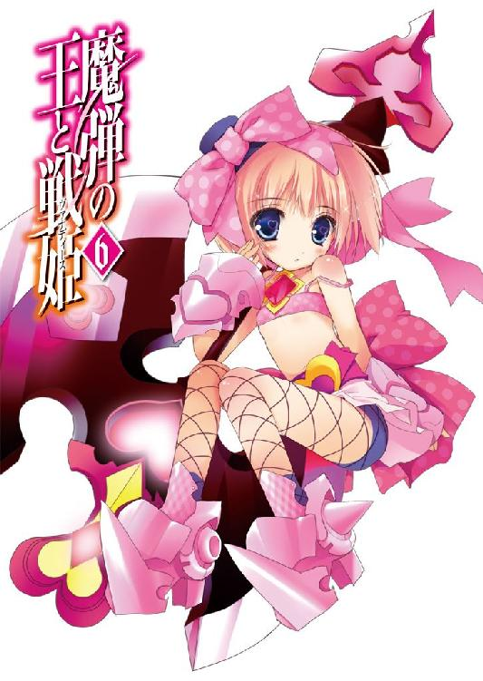
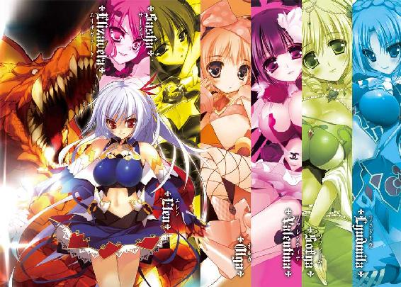
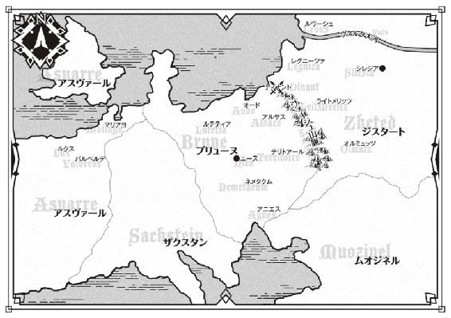
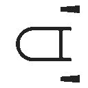
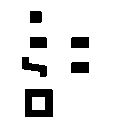

| 魔弾の王と戦姫 6 (MF文庫J) | |
| 川口 士 & よし☆ヲ | |


ＭＦ文庫Ｊ
魔弾の王と戦姫６
川口士
口絵イラスト●よし☆ヲ

１ 密使
乾いた風の吹き抜ける尾根の上を、一頭の牡鹿が悠然と歩いていた。
並の鹿より一回り以上大きな体躯を持ち、頭部の角は右側だけが異様に伸びている。不格好だったが、鹿の巨躯もあいまってどこか怪物めいて見えた。
実際、山のふもとの村人たちにとって、この鹿は恐怖の対象であった。
白昼でも堂々と人里に姿を現しては畑を踏み荒らし、農作物を好き勝手にかじって山の中へと姿を消す。
農具でもって追い立てようとした村人は、逆に角で突きかかられて大怪我を負った。
腕利きの狩人が徒党を組んで山の中に入ったものの、三日三晩歩きまわってついに仕留めることができなかった。
嗅覚も、脚力もこの牡鹿は尋常ではない。罠をことごとく見破り、人間が近づくことさえためらうような断崖へ平然と身を躍らせ、わずかな岩場を蹴り、あるいは斜面を滑って悠々と逃げ去るのだ。
その牡鹿に、矢で狙いを定めている若者がいた。
二十歳には達していないだろう。中肉中背ながら、そうとうに身体を鍛えていることが服の袖から伸びた腕を見るだけでもわかる。くすんだ赤い髪の下にある表情は精悍で、視線は鋭く牡鹿を見据えていた。
若者が身を潜めている岩場から尾根の上の牡鹿までは、およそ三百アルシン（約三百メートル）。矢の届く距離ではない。
熟練の狩人でも、もう六、七十歩は近づかなければ駄目だと首を横に振るだろう。ましてや若者は、下から上へ矢を射ねばならないのだ。
尾根から岩場へは、斜面を滑るように風が吹きつけている。そのおかげで匂いを鹿に察知されずにすむという利点もあったが、矢が届かなければ意味がない。
だが、若者は微塵も不安を見せずに落ち着き払っていた。何度もやってきて慣れたことをするかのように泰然として、弓弦を引き絞る。
吹き下ろすような風が、一瞬だけ止んだ。あたかもそのときが訪れるのがわかっていたような、ごく自然な動作で若者は矢と弓弦から指を離す。
弧を描いて飛んだ矢は、吸いこまれるかのように牡鹿の首筋に突き刺さった。
牡鹿は悲鳴をあげたりはしなかった。さっと身をひるがえし、若者が隠れている側とは反対方向へ駆け下りる。若者はこのときはじめて軽い驚きを示した。
「さすがに身体がでかいだけはあるな」
身を潜めていた岩場から出ると、新たな矢をつがえて斜面を駆け上っていく。この矢は牡鹿を狙うためのものではない。予想外の何かが現れたときのためのものだ。若者にとって、牡鹿を狙ったこの狩りはほぼ終わっている。
ぱたた、と扇を動かすのにも似た羽ばたきの音が若者の耳朶を打つ。同時に、太った猫ぐらいの大きさの黒い影が、若者のすぐそばを通りすぎた。
猫ではない。竜だ。トカゲに似た体格に、頭部から生えた角と、太く鋭い牙。蝙蝠のそれを思わせる翼。鱗の色は銅に似た緑青。
竜は、同行者である若者のことなどまるで眼中にない様子で空中を飛んでいく。これが平地ならば若者もすぐに追いつけたのだが、斜面である上に歩きにくい岩場ときている。苦笑して先へ行く竜の後ろ姿を見送った。
呼吸を乱さないよう気をつけながら、若者は尾根の上にたどり着く。目を瞠った。
若者が隠れていた側は石ころの転がる荒れ地だったのだが、尾根を境にしてこちら側は茂みが広がり、木々に覆われていたのだ。
――見つけられないとは思わないが......こいつは骨だな。
億劫な気分になったが、このまま山を下りるわけにもいかない。害獣を仕留めたという言葉だけでは、村人たちの心に不安が残る。
――ルーニエもさがさないとなあ。
自分を置いて飛んでいってしまった竜のことだ。見当たらないということは、牡鹿を追って木々の中へ入っていったのだろう。小さいとはいえ竜なので、獣に襲われるような心配をしなくてすむのはありがたいが。
斜面を下りていき、慎重に茂みへと足を踏み入れる。蛇が潜んでいる可能性もあるし、小枝に服が引っかかったりすることもあるからだ。
茂みを抜けて、鬱蒼とした木々の中へ入ると冷たい空気が若者を包んだ。枝葉が陽光を遮って薄暗く、何本かの木々は斜面に沿って斜めに生えている。あちらこちらに伸びている雑草は根を隠して歩きにくいことこの上ない。
気をつけて歩を進めていると、ぱたた、と翼を羽ばたかせる音がした。足を止めた若者の前に、薄暗い木々の奥からルーニエが姿を現す。緑青の鱗を持つ幼竜は若者の姿を認めると、空中で器用に反転して再び木々の中へ飛んでいった。若者は急いで竜を追う。
十数歩ばかり進んだ先に、牡鹿は倒れていた。すでに息絶えており、首筋から流れた血は毛皮を汚している。
若者はそれでもまだ気を緩めなかった。死んだと思っていた獣が最後の力を振り絞って身体を起こし、暴れて、その角や爪で狩人を撃ち倒したという話は枚挙に暇がない。
それに、尾根からここまでの距離などを考えると、この牡鹿が流した血の臭いを嗅ぎとった獣がいないともかぎらなかった。
しかし、若者の慎重さにはつきあっていられないといわんばかりにルーニエが飛んでいく。仕留めた獲物の上に降り立つと、急かすように若者に顔を向けた。
若者は苦笑したが、それでも駆け寄りはしない。ゆっくりと近づき、周囲に獣がいないことを確認してから弓につがえていた矢をしまって、牡鹿の前に腰を下ろした。
「お手柄だな、ルーニエ」
ようやく、若者は顔をほころばせる。
若者の名はティグルヴルムド＝ヴォルン。
親しい者にはティグルと呼ばせていた。今年で十七歳になる。
生まれ育ったアルサスの地を離れ、隣国ジスタートの中にあるライトメリッツ公国で暮らすようになってから、半年が過ぎていた。
可能だったら牡鹿の死体を運ぼうかとティグルは考えていたのだが、思った以上の身体の大きさと重さのために、あっさりと諦めた。
用意していたロープを脚に結んで近くの木にぶら下げ、すばやく解体していく。
ルーニエはティグルの足下にうずくまっていたのだが、若者が牡鹿の臓物を投げてやると待ちかねたかのように食らいついた。
「持って帰れるのは毛皮ぐらいだな......」
まず、大きい方の角を仕留めた証拠として持って帰らなければならない。これがけっこうな荷物になる。骨もそうだが、肉や臓物なども、ここで食べる分以外は諦めたほうがよさそうだった。
どのように毛皮を切り取るか考えていると、ルーニエが血と臓物で汚れた顔をズボンにすりつけてくる。もっとよこせ、の合図だ。汚れたズボンの裾を見下ろし、小さくため息をつきながらも短剣でてきとうに肉を切り取って放る。
牡鹿の解体をすませたときには、陽はだいぶ傾いていた。角が大きかったため、切り離すのに時間がかかったのだ。
毛皮の内側にはまだ肉や脂がこびりついているので丸めて藁紐で縛り、背負い袋にくくりつける。水筒の水で手だけを洗うと、ティグルは火を熾した。
それから地面に穴を掘り、牡鹿の死体をてきとうな大きさに切って埋める。ルーニエはといえば、食べたいだけ食べて満足したのか熾した火のそばで眠りこけていた。
半年前――春の気配が漂いはじめるころに、ティグルはこのライトメリッツを訪れた。とはいえ、ジスタートはティグルが生まれ育ったブリューヌ王国にくらべて春の訪れが遅く、野に漂う空気もまだ冷たかったが。
山々の雪があるていど溶けはじめたころ、ティグルはライトメリッツの山に足を踏み入れることにした。新たな暮らしをはじめる地をその足と目で知る、というもっともらしい理由をつけたものの、本音は未知の環境で一日も早く狩りをしてみたかったのである。
その最初の狩りについてきたのが、ルーニエだった。
ティグルは捕虜だったときに公宮でこの竜としょっちゅう顔を合わせたが、懐かれたことは一度もない。客将として公宮で暮らすようになってからも、それはまったく変わらなかった。この幼竜が懐いたのは、自分ではなく侍女のティッタだ。
しかし、ティグルが狩りに行くときにかぎっては、ルーニエはいつのまにかティグルのそばにいるのだった。あるいはティグルが乗るつもりだった馬の背に座りこんでおり、無言で連れていけと訴える。
これについて、飼い主であるところの白銀の髪の戦姫の返答は次のようなものだった。
「石壁に囲まれた世界で、こいつも退屈を持て余しているのだろう。おまえさえよければ連れていってやってくれないか」
野生には戻すなよ、と冗談めかして付け加えながら。
幼竜を撫でる彼女の愛おしそうな表情の中にはしかし、竜の思うがままに空を駆けさせてやれないことへの申し訳なさがあった。彼女自身、自由な身ではない。
そんな顔で頼まれては、ティグルもいやと言えない。それに、建前上はあくまでライトメリッツの地理を知ることだ。狩りでは、ない。
そうして連れていくようになったのだが、ルーニエはティグルの想像以上によき戦友ぶりを示した。たとえば今回の牡鹿狩りのような。
しかし、狩り以外では、ルーニエはそうした態度を一切示さない。今回もおそらく、山を下りればティグルのことなど道端の石ころも同然の扱いをするのだろう。
そうした関係を、ティグルは多少残念には思っても改善する気はない。相手が人間ならばともかく、まだ小さいとはいえ竜なのだ。そもそも、どうして狩りについてくるのかすらわからないでいる。現在の距離をよしとしておくべきだろう。
牡鹿の肉で空腹を満たしたティグルは、焚き火のそばで眠っているルーニエを眺めながらぼんやりと今日までのことを振り返っていた。
ブリューヌ王国の北東にあるアルサス。ティグルはその地で、ヴォルン伯爵家の息子として生まれた。十四歳のときに父を病で失って伯爵家と小さな領地を受け継ぎ、ブリューヌ貴族の末端に名を連ねて生きてきたのである。
ティグルの人生を変えたのは、去年の夏の終わりに行われた一つの戦だった。
国境付近の川の使用を巡り、ブリューヌ王国とジスタート王国がディナントの地で刃を交えたのだ。この戦にはティグルも兵を百ばかり率いて参加したのだが、ブリューヌ軍は奇襲を受けて敗北した。
戦場で、ティグルはジスタート軍の総指揮官を発見した。ジスタート王国に七人しかいない戦姫の一人。『銀閃の風姫』『剣の舞姫』の異名を持つ白銀の髪の戦姫、エレオノーラ＝ヴィルターリア。
己の弓で彼女を射倒そうとしてティグルは果たせず、しかしその弓の技量に興味を抱かれてエレンことエレオノーラの捕虜となった。
その後、ブリューヌ王国では大貴族テナルディエ公爵とガヌロン公爵の対立が激しさを増し、その煽りを受けてティグルの生まれ育ったアルサスも戦渦に巻きこまれかけた。
父の代より仕えているバートランによってそのことを知ったティグルは、エレンから兵を借り受けてアルサスへと舞い戻る。
いくつもの死闘をくぐり抜けて、ティグルは宿敵であるテナルディエ公爵を討ち果たしたものの、それによってすべてが丸くおさまりめでたしめでたしとはならなかった。
つかの間の平和を取り戻してみればティグルはエレンの捕虜のままであり、しかも彼女にはそれを撤回する意思がない。
亡くなったブリューヌ国王ファーロンに代わって新たに統治者となったレギン王女は、交渉の末にティグルを客将としてライトメリッツで生活させ、三年後に帰還させるという約束を取りつけたが、それが精一杯だった。
こうして、ティグルは三年後の再会を約束しつつブリューヌの人々と別れ、国境を越えてジスタートの地に足を踏み入れたのだった。ブリューヌからついてきたのは、昔から侍女として仕えているティッタだけだ。
それから半年が過ぎた。遅かった春はあっという間に過ぎ去り、夏さえももう終わろうとしている。ジスタートの夏はブリューヌのそれより短いため、とくにその思いは強く感じられた。
半ば予想し、覚悟もしていたことだが、ライトメリッツでの暮らしはのんびりとしたものではなかった。
ジスタートの言葉や文字、風習を覚えなければならず、ティグルに興味を抱いた王国の要人が次々に会いに来る。多くは直接出向いてくるわけではなく、部下を派遣してくるのだが、ティグルが応対しなければならないことには変わりない。
そして、ティグルの失敗は、彼だけでなく生活の場を与えているエレンの顔にも泥を塗ることになりかねない。そうそう失敗はできなかった。
また、エレンの副官を務めるリム――リムアリーシャが、毎日のようにティグルに膨大な課題を与えてくる。その内容は政治であったり軍事であったり、また政治といっても内政から外交まで多岐に渡る。自分の仕事を手伝わせることも頻繁にあった。
ティグルはときに音を上げそうになったりもしたが、必死についていった。一つには、いつか帰るつもりであるアルサスをよりよくするために、多くのことを学ばなければならないという想いがあったからだ。
それに、リムも決して厳しいばかりではなかった。視察であったり巡検であったりと名目をつけながら、ティグルにこうして自由な時間を与えてくれたりもするのだから。
やがて、夜が明けた。
ティグルは土をかぶせて火を消すと荷物を背負い、右手に牡鹿の角を、左手に弓を持って歩きだす。ルーニエはあいかわらず無言のまま隣をぱたぱたと飛んでいた。
昼過ぎにふもとの村にたどりつくと、村人たちに角と毛皮を見せて安心させる。彼らは歓声をあげて喜んだが、その中でも狩人たちは目を丸くして驚いた。
「なんと......もう仕留められたのですか」
狩人たちのまとめ役でもある村長などは、そう言ったきり絶句したものである。
ティグルが山に入ったのは三日前の早朝だ。供の者などもいない。村の狩人を案内役としてつけようとしたのだが、断ったのだ。
「このぐらいなら、俺一人でもまあ何とかなるよ」
村から見える山裾を眺めながら、ティグルは村長にそう答えた。
「それに、人数が多いと音や匂いで気取られやすくなる」
ティグルは決して己の技量を過信したのではない。村長の申し出を断りつつも、山の中の様子については根掘り葉掘り詳しく聞いた。村長だけでなく他の狩人にもだ。
その様子を見ながら、さすが公宮の騎士様だと村長は感心しつつ、十七歳という若さにいくばくかの頼りなさを感じもしたのだった。
しかし、ティグルはひとりで山に入り、見事に牡鹿を射止めて下りてきた。村長たちは六人がかりで挑み、五日かけて逃がしたというのに。
狩りの技量を誇ることもなく、ティグルは村長の家の一室を借りると早々に眠りについた。目を覚ましたのは早朝と呼ぶにもまだ早い、空が暗さを残している時刻だ。農作業に出る者たちでさえ、ようやく寝床から這い出たところだろう。
ティグルは村長を起こすと「こんなに早く起こして申し訳ないが」と謝ってから出立することを告げた。ティグルに呼びだされて睡魔など吹き飛んでいた村長は、その顔に驚きと、かすかな落胆の色を浮かべながら一度だけ頼みこむ。
「騎士様さえよろしければ、どうかもう一日だけこの村でお過ごしいただけませんか。村の者たちも、あの牡鹿をいかにして仕留めたのか聞きたがっておるのです。ささやかながら酒の席をご用意しますので」
村長の申し出に礼を述べながらもティグルはやんわりと断り、静かに村を去った。
徐々に青みを帯びはじめた空の下、公宮から乗ってきた馬を駆って街道を行く。馬にはティグルだけでなくルーニエまでちゃっかり乗っており、そのためあまり速くはない。
「もったいなかったかな。とくに急ぎの用なんてないんだから......」
空を眺めて、ティグルはそうひとりごちた。村長の申し出のことだ。
これが、自分がかつて治めていたアルサスでの話ならば、ティグルは頼みを聞き入れて村で一夜を過ごしただろう。そうしなかったのはエレンに対する配慮からだった。
小さな村でもてなされようと彼女は何も言わないだろう。だが、彼女の部下はまた違った感想を抱くに違いない。とくに、ティグルに反感を抱いている者は。自分が批判されるのはかまわないが、その矛先がエレンに向けられるのは避けたかった。
◎
陽がだいぶ西に傾いてきたころ、ティグルは公都に帰り着いた。人通りの多い城下町には向かわず、宮廷に勤める者専用の脇道を馬に乗ったまま通って公宮に向かう。ルーニエがいるため、このままの姿で城下を抜けるのは非常に目立つからだ。
「ティグル様！」
公宮を囲む門をくぐったところで、聞き慣れた声が若者の名を呼んだ。ティグルと、そしてルーニエが反応し、幼竜は馬の背から離れてぱたた、と飛んでいく。
見ると、栗色の髪を頭の後ろで結んだ少女が、こちらに向かって小走りに駆けてくるところだった。黒い長袖と足下まであるスカートの上に白いエプロンをつけた侍女の姿で、満面の笑みを浮かべている。ティグルも笑顔になって彼女に応えた。
「ただいま、ティッタ」
少女――ティッタはルーニエを抱きとめると、両腕で抱えたままティグルの前まで歩いてきた。竜もまた翼をたたみ、彼女の腕の中でおとなしくしている。
「おかえりなさい、ティグル様」
「だいじょうぶか？ 重いんだったら無理に抱えなくてもいいんだぞ」
「ありがとうございます。でも、ルーニエは見た目ほど重くはないんですよ。服が汚れるのが難点ですけど」
そう言いながら少しも困ったふうではなく、幼児をあやすかのようにティッタはルーニエの頭を撫でた。
アルサスで生まれ育ち、十一歳のときからティグルに侍女として仕えてきた彼女も今年で十六になる。アルサスではずうっとしていたツインテールをやめて、ポニーテールに変えた。この髪型もよく似合っているとティグルは思う。
半年前、ティグルがライトメリッツで暮らすことが決まったときに彼女は決然として随従を申し出た。ティグルもまた彼女がそばにいることを望み、エレンも笑顔で承諾した。
もっともティグルとしては、妹のように思っているこの侍女が新しい環境になじめるかどうか不安もあったのだが、幸いなことに杞憂だったらしい。ここでの生活がはじまって数日のうちに、ティッタは幾人かの侍女や女官と打ち解け、また気に入られたのだった。
「おまえもなかなかのものだったが、ティッタもたいしたものだな。意外な拾いものだ」
話を聞いたエレンが苦笑しながらティグルにそう言ったほどで、ティグルはほっと胸を撫で下ろしたのである。
「そういえば、ティグル様。エレオノーラ様とリムさんが、ご用事があるようですよ」
「用事？ 俺に？」
思い出したようにティッタが言い、馬から下りたティグルは首をひねった。自分はいま帰ってきたばかりで、まだ挨拶もしていない。栗色の髪の侍女はこくりとうなずく。
「はい。ティグル様がお戻りになったらそう伝えてくれと、昨日仰せつかりました」
納得すると同時に、ティグルは不思議にも思った。戻ってくれば、エレンのところへ真っ先に報告へ向かうのは当然のことだ。それなのにわざわざそう言うということは、かなり重要な用件があるのだろう。
「ティグル様が寄り道をなさらないよう釘を刺されたんじゃないですか？」
考えこむ様子を見せたティグルに、いたずらっぽい笑みを浮かべてティッタが笑いかける。本気で言っているのではなく、若い主の気分を軽くしようとしての発言だろう。ティグルもそれを悟って、年下の侍女の頭を軽く撫でた。
「まあ、ありえない話じゃないな」
エレンのいる執務室へ向かう途中でルーリックと会ってつい長話になったり、リムに声をかけられて長々と叱られてしまったりすることは何度かあった。ティグルに好意的でない官吏につかまって延々と嫌味を言われたこともある。
「とにかく行ってみるか。ありがとう、ティッタ」
栗色の髪の侍女に礼を言うと、ルーニエと馬を彼女に任せてティグルは執務室へ向かった。この時間帯ならば、エレンはそこにいるはずだ。
薄暗くなり、壁の松明に火を灯しはじめた廊下を歩く。執務室の前まで来たティグルは扉を軽く叩いて呼びかけた。一呼吸ほどの間を置いて、入れと声が応じる。
扉を開けると想像した通りの、そして見慣れた光景が視界に飛びこんできた。
さほど広くない部屋には黒檀の机が置かれ、その上には積みあげられた書類が小さな山を作っている。それを処理しているのは、二人の娘だった。
一人は腰まで届く白銀の髪と、生気に満ちた紅の瞳を持つ少女だ。年齢はティグルと同じ十七。青を基調とした絹服に身を包み、手が届く距離の壁に長剣を立てかけている。
美しい面立ちからは想像し難いが、彼女は大人でも軽くあしらえる実力を持つ熟練の戦士でもあった。彼女こそこの公宮の、そしてライトメリッツの主であり、ジスタートに七人しかいない戦姫の一人、エレオノーラ＝ヴィルターリアだ。
もう一人は艶のない金色の髪を頭の左側で結んでいる娘で、今年で二十歳になる。長身ながら均整のとれた身体つきをしており、白銀の髪の娘とは対照的なほどの無表情で、淡々と書類を処理していた。
彼女の名はリムアリーシャ。エレンの副官であり、親友でもある。エレンやティグルからはリムと呼ばれていた。
「無事に帰ってきたようだな」
若者の姿を頭から爪先までさっと一瞥し、エレンは安心したように相好を崩す。リムもまた、口元に微笑を湛えて会釈をした。ティグルもただいまと二人に応え、扉を閉めたあと手近な椅子を引き寄せて座る。
ティグルが公都から離れて牡鹿を仕留めに行ったのは、この二人に頼まれてのことだった。牡鹿の被害を受けた村がエレンに窮状を訴え、彼女がティグルを派遣したのだ。
「件の牡鹿とやらはどうだった？」
目をきらきらと輝かせて聞いてくるエレンに、ティグルは簡単に村や山の様子をまじえて説明する。その間にリムは席を立ち、三人分の陶杯と葡萄酒を用意した。
仕事の手を止めて、三人は小さく祝杯をあげる。牡鹿の狩りについて一通り話し終えると、ティグルは話題を変えた。
「ところで、俺に用事があるってティッタから聞いたんだが」
銀髪と金髪の主従が口をつぐんで視線をかわす。エレンは言葉をさがすかのように、手にしている陶杯に視線を落としたが、すぐに真剣な表情で顔を上げた。
「ティグル。おまえ、アスヴァール王国は知っているな？」
突然の質問にティグルは訝しく思いながらも、名前ぐらいはと答える。実際、その国について知っていることなど片手で数えられるほどもない。
「ブリューヌの北西にある......このジスタートからだと海を越えて西にある国だろう。島国だったけど、何代か前の女王が大陸に兵を進めて領土を拡大したんだったか」
ティグルに何かと世話を焼いてくれたマスハスから話を聞いたことはあったが、ブリューヌの北東部にあるアルサスとは無縁もいいところで、認識はおとぎ話に出てくる最果ての国と変わりない。領土を拡大したことについても、女王という存在が印象に残っていたから覚えていたようなものだ。
ティグルの返答に、再びエレンとリムは視線をかわす。二人の瞳には、若干の不安がにじんでいた。
陶杯に残っていた葡萄酒をぐいと飲み干し、エレンは苦みを帯びた声で言う。
「そのアスヴァールへ行ってほしいという話が、おまえに来ている」
「......誰からだ？」
驚きよりも当惑が先立って、ティグルは顔をしかめた。エレンの言い方からすると、どうも断りにくい筋からのようだ。ジスタート王国の戦姫である彼女が配慮しなければならない相手など、そうはいないはずだが。
「国王陛下です」
静かな声音で答えたのはリムだ。ティグルはおもわず目を大きく見開いた。
ジスタート国王ヴィクトールには、一度だけ拝謁したことがある。ブリューヌの内乱が終結し、この国を訪れて間もないころだ。
三年間ジスタートで過ごす身としては礼を欠くことなどできなかったし、ヴィクトール王もまたティグルに会いたがっているとエレンから聞いていた。
しかし、自分に会いたがったという割に、ジスタート国王はティグルに何かを尋ねるでもなく謁見は型通りに進んだ。老王はティグルの武勇を褒め称え、この三年は不自由せぬようとりはかろうと告げて、謁見は終わったのだった。
ただ、ティグルはいまでも老いた王の視線をよく覚えている。自分を見るヴィクトールの目は静かで、冷たく、澱んでいた。昏い森の奥深くにある、数十、数百年もの間陽の光が射したことのない、一切の匂いも音も発しない底なし沼を思わせたのだ。
長年玉座にある者が有する威厳や貫禄、凄味といったものもむろん感じたが、ティグルに強い印象を与えたのは、老王のその双眸だった。一国の王にそのような感想を抱いたなどと誰かに言えるはずもなく、ティグルの胸のうちにしまってあるが。
――正直、あまりよい印象を持てない方だったな。
得体の知れない老人。それが、拝謁した際にティグルが抱いた率直な感想だ。その人物が、自分にアスヴァールへ行けと言っているらしい。
「ヴィクトール陛下は俺に何をさせるつもりなんだ？」
「端的に言えば、密使だな。第一王子であるジャーメイン殿下に、密かに会ってほしいというものだ」
エレンは空になった陶杯を机に置いて腕組みをすると、困ったような顔になる。
「さきほどの答えからだいたい想像できるが......ティグル。おまえ、アスヴァールの状況についてどのていど知っている？」
「たぶんそこにも人間がいて、酒を飲んだり歌ったり踊ったり狩りをしていることぐらいは想像できるけど」
「そうだな。ついでに剣や斧を振りまわして血生臭い殺しあいもしている」
予想はしていたが、穏やかさとは無縁の話らしい。リムがまだ中身の残った陶杯を机に置き、さらに机の引き出しから一枚の紙を取りだした。
「私も、これまでアスヴァールについてティグルヴルムド卿に説明したことはありませんでしたね。簡単にお話ししましょう」
「お願いします、先生」
「頼むぞ、先生」
ティグルがおどけてリムに頭を下げると、エレンも笑いながら彼女を先生と呼ぶ。リムは小さくため息をつくとペンを手に取り、紙に簡単な地図を描いた。
「半年前まで、アスヴァールはザカリアスという王が治めていました。情報によれば、彼はブリューヌへの侵攻も企てていたようですが、自身の健康が優れなかったため様子見に留めていたとのことです」
ティグルは息を呑む。半年前のブリューヌは、まさに餓狼の群れの中に放られた獲物だったのだ。ザクスタン軍は黒騎士ロランに撃退され、ムオジネル軍はティグルが撃ち破ったが、さらにアスヴァールが北西より攻めこんでいたら、どうなっただろうか。
「その後、ブリューヌの内乱が終息する少し前に、ザカリアス王は亡くなられました。食中毒とも事故ともいわれていますが、はっきりしたことは私もよく知りません」
国王には直系の子だけでも七人おり、死に際の遺言もあって長男のジャーメインが玉座を継ぐことになった。
混乱が起こったのは、このときだ。
「戴冠式の数日前、ジャーメイン王子は自分の弟妹たちを宮廷に呼びだすと、謀反の疑いがあるとして次々に殺害したのです」
「私もあとから知ったことだが、ジャーメインはもともと傲慢で、猜疑心の強い男だったらしい。父王の存命中は多少おとなしくしていたようだが、父が亡くなり、玉座が目前に迫って行動に出たのだろう」
リムの説明を、エレンがつまらなさそうな口調で継いだ。ティグルとしては気分の悪くなる話としか思えず、無言でうなずくことで続きを促す。
「ただし、ジャーメインの手を逃れた者もいました。第二王子エリオットと第一王女のギネヴィアです」
エリオットは己の無事を確保すると、兄に対して反乱を起こした。前王の遺言があるとはいえ、四人もの王子と王女を殺害したジャーメインに反発する諸侯は少なくなく、この反乱は成功する。ジャーメインは宮廷を捨てて逃亡した。
「その結果、アスヴァールは二分、あるいは三分されてしまいました。ジャーメイン王子はザクスタンの傭兵部隊を雇い入れて兵の不足を補い、エリオット王子も北の海を荒らしまわっていた海賊を配下とし、混迷はいっそう深まっているというのが現状です」
「ギネヴィア王女は？」
名前の出なかった王女の存在を不思議に思って、ティグルは訊いた。
「どちらにも与せず、争いを避けてひっそりと暮らしていると聞きます。少なくとも、ジャーメインとエリオットの決着がつくまでは無事でしょう」
「その二人の争いだが......我がジスタートはいまのところエリオットを支持している」
「ここで一度、アスヴァールから離れて別の話をさせていただきます」
エレンの言葉を受けて、リムが新たな紙を用意する。さらさらと描いたのは大陸全体の地図だ。ジスタートを中心に、海を挟んで西にアスヴァール、陸続きで南にムオジネル、南西にブリューヌを描いていく。
「ティグルヴルムド卿。我がジスタートにとって、いま脅威となっている国はどこだと思いますか？」
彼女の口調が、生徒に対する教師のそれになっていることを、ティグルは敏感に察知した。答えを間違えれば叱られてしまう。
「ムオジネルだな」
「その通りです」
にこりともせず、リムは肯定した。このていどは答えられて当然という表情だ。
「アスヴァールはいま説明した通りの状況。ブリューヌは半年前の内乱の傷がほとんど癒えていません。完全な復興には、早く見積もってもあと二年から三年はかかるでしょう」
一方、ムオジネルである。前年ブリューヌに攻めこんで撃退されたとはいえ、実のところ大損害を被ったのは海から攻めた船団だけだ。陸から攻めた歩兵と騎兵の部隊は決定打をくらう前にすばやく撤収して、被害を最小限におさえている。
そして、ムオジネルはジスタートに対して因縁があった。彼らのブリューヌ侵攻を阻んだのはティグルであり、ティグルに味方したジスタート軍だった。
また、ジスタートはブリューヌの領土だったアニエスを手に入れている。このため、ムオジネルは今後ブリューヌに攻めこもうと思ったら、ジスタート領を通過しなければならなくなったのだ。
船団はまだ昨年度の損害を回復できておらず、海から攻めこむ余裕はない。攻めてくる敵を撃退するのが精一杯だ。ブリューヌが徐々に復興していくのを、指をくわえて見ていることしかできないのがムオジネルの現状だった。
「いずれ、我が国とムオジネルはぶつかりあうことになるだろう。もっとも、それがいつなのかはまだわからん。三年後かもしれないし、十年後ということもあり得る」
エレンはしかめっ面をして背後の壁を振り返り、そこに飾られている二本の旗を仰ぎ見る。黒地に銀の剣をあしらったライトメリッツの旗とジスタート王国の象徴たる黒竜旗。
「そこで問題になってくるのが、隣国との関係というわけです。アスヴァール王国がムオジネルにつくか、我が国に味方するかで状況は大きく変わります」
ようやくティグルは納得した。
アスヴァールがこちらに味方すれば、ジスタートは心置きなくムオジネルに全力を傾けることができる。
しかし、アスヴァールがムオジネルに協力する姿勢をとれば、ジスタートは西と南の二方向に敵を抱える形になってしまう。戦力も当然分断しなければならず、苦境に立たされることになるだろう。エレンが言った。
「そういうわけで、我が国の味方をする者にこそ次代のアスヴァール王になってほしいのだが、いま我々が支持しているエリオットはどうもムオジネルになびいているようでな。ジャーメインの支持に切り替えることになった」
「じゃあ、密使って......まさか」
さすがにティグルは唖然とした。エレンはばつの悪い顔をつくって言い難そうにしている。白銀の髪の戦姫に代わって、硬質の声音でリムが答えた。
「ティグルヴルムド卿。さきほども申しあげましたが、これはエレオノーラ様の考えられたことではなく国王陛下の要請です」
「それはわかっている。エレンがそんな頼みごとを俺にするはずがないからな」
きっぱりと答えて、二人を安心させるようにティグルは笑いかける。執務室に漂いかけた深刻な空気が幾分かやわらいで、エレンは安堵に胸を撫で下ろしつつも申し訳なさそうに頭を下げた。
「すまない、ティグル」
「エレンの気にすることじゃないさ。それにしても、ヴィクトール王はいったいどういうつもりで俺にそんなことを言ってきたんだ？」
それが不思議だった。ティグルはアスヴァールを訪れたことなどなければ、その国に対する知識もない。ヴィクトールの意図がまるでわからなかった。
「ごく一般的に考えるなら、おまえを取りこむためだろう。武勲や名誉を得られる機会を与えることで恩を売り、己の派閥に組みこむ。ジスタートだけでなく、ブリューヌでも珍しいことではあるまい」
空の陶杯をリムに突き出しながらのエレンの答えに、ティグルは納得できないというふうに首をひねる。
「だが、俺はブリューヌの人間だ。ヴィクトール王の臣下ではなく、客将という立場でここに滞在している。しかも三年後にはブリューヌに帰るんだぞ？」
「だからこそだ。三年後におまえがブリューヌに帰ったとして、以前のようにアルサスでのんべんだらりと暮らせるとは思っていないだろうな？ まず間違いなく要職に就けられるぞ。私なら相談役という役職でもつくって、宮廷から数年は離さん」
厳しい口調で話すエレンに、ティグルは苦い顔で唸った。それはないだろうと否定することができない。それだけの実績を、このくすんだ赤い髪の若者はたてている。
「敵将からは『流星落者』の称号を贈られ、自国の王からは『月光の騎士』の称号を授かるほどの勝利、武勲。帰国すれば重要な役職に就くことがほぼ決まっている者に、いまのうちから貸しを作っておく。ジスタートの国王としては正しい考えです」
主の陶杯に葡萄酒を注ぎ終えたリムが静かな声音で言った。
エレンは執務机の引き出しを開けると、一通の手紙と二つの指輪、それから細長い筒を取りだす。筒の長さは彼女の手から肘のあたりぐらいまでで、艶のない黒絹に覆われ、蓋の部分にはジスタート国王の刻印が黄金で施されていた。
「この筒の中にはジャーメイン王子に渡す密書が入っている。指輪はいわば身分証だな。おまえに見てほしいのは、この手紙――陛下からおまえに宛てたものだ」
手紙を渡されたティグルは、丁寧にというよりも慎重に目を通す。一国の王が書いたものだ。一字たりとも読み落とすようなことはできない。
内容はありふれた挨拶からはじまり、ティグルのブリューヌでの活躍を称え、ブリューヌとジスタートの友好を歓迎し、それから本題に入った。
――そなたの存在は、ジスタートとブリューヌの間に強い絆があることを証明するものだ。ジスタートの使者であると同時に、ブリューヌを代表する人物としてジャーメイン王子に会うことができる。卿以外にこの二つを兼ね備えることができる者はおらぬ......か。
そのあとは、こちらはどこまで協力できるか、どこまで譲歩できるかが金貨の枚数と派遣できる兵の数、さらにその期間で示されていた。あるていどの逸脱は許すが、一定の範囲を越えた場合は一度帰還せよとつけくわえられている。
――これを手札として、ジャーメインと交渉しろということか......。
最後に、どのような手順でアスヴァールへ行くかが詳細に綴られていた。
このライトメリッツを発って北のレグニーツァへ入り、プシェプスという港町で国王の用意した従者とともにアスヴァールへ向かえとのことだった。どの街道を行くかまで決まっており、呆れるほどの念の入れようである。
ヴィクトール王の考えは間違っていない。こちらはジスタートだけでなく、ブリューヌもいるぞとほのめかすのは交渉の仕方としてはまっとうなものだ。
ティグルは手紙から視線を離すと、エレンたちに困惑したような目を向ける。
「ブリューヌに話は通してあるのか？」
「おそらく通していない」
エレンは首を振った。リムも同意を示すように静かに答える。
「ブリューヌ王国も承知の話であれば、レギン王女がティグルヴルムド卿に命令するでしょう。その方が筋が通ります」
もっともな話だった。ティグルは客将であって、ヴィクトール王の臣下ではない。この手紙も、最後は『ジスタートの王としてぜひとも頼みたい』という一文で締めくくられている。命令ではなく、要請なのだ。
しかし、だからといってあっさり断れるわけではない。なんといっても一国の王の頼みなのだ。
「......俺以外に、この密使が務まりそうな者はいないのか？」
「いないわけではないだろうが、おまえに恩を売るにはこれぐらいのものでなければ駄目だと国王陛下は考えたのだと思う」
エレンの言葉の意味がすぐにはわからず、ティグルは首をひねって考える。ほどなく降参して肩をすくめ、両手をひらひらと振った。真面目にやってくださいと小声でたしなめてからリムが説明する。
「たとえば山賊討伐などでは、ティグルヴルムド卿に恩を売ることはできません。あなたはブリューヌの内乱を終結させたことで、すでに充分な武勇を示しているからです」
「他に名誉を得させる手段として、国王に何か助言をするというものがあるが、おまえの場合は非常に危険だ。ブリューヌの人間が我が国の政治に口出しをするのかと重臣や貴族の反発を買い、国王の権威に傷がつく。そこで、外交になるわけだな」
エレンがため息をこぼした。ティグルが密使を務める場合の強みは、ヴィクトールが手紙で述べていた通りだ。この点において、ティグルに優る者はジスタート国内にはいないであろう。
「――とまあ、ここまでが、国王陛下がおまえに対して悪意も何も抱いていないという前提での話だ」
口調をやや変えて、面倒くさそうな口振りでエレンは背もたれによりかかる。その態度はティグルの緊張を若干ながら緩和してくれて、弓使いの若者は興味深そうな笑顔を彼女に向けた。
「俺はヴィクトール王の敵意や恨みを買った覚えはないが」
「隣国の有能な将というものは、それだけで周辺諸国に警戒されるのです。我が国においても、ティグルヴルムド卿の存在をよく思わない者は少なくありません。陛下がそうだとは申しませんが」
リムが淡々と言った。彼女だけはエレンやティグルの態度を見ても、まっすぐ背筋を伸ばし、姿勢を正したままだ。
「だが、この交渉が失敗したらジスタートにとっては大問題だろう。それなのに、敵意を抱いている俺に任せるのか？」
「挽回するための策をすでに用意しているなら、任せる可能性はある」
椅子を後ろに傾けながらエレンは不機嫌そうに答え、しかめっ面で続けた。
「成功したらそれはそれでよし。失敗すれば、おまえを処断して後顧の憂いを断つことができるだろう。場合によってはブリューヌに責任を押しつけることもな」
そこで一旦言葉を切ると、エレンはがたんと音を立てて姿勢を戻す。横でリムが顔をしかめたが、それには気づいていないふりをして白銀の髪の戦姫はさらに言い募った。
「そもそも、おかしいとは思わないか。どうして手紙なんだ？ 私ならば、何か理由をつけて宴を開き、そこにおまえを招いてじかに頼みこむぞ。もちろん宴の主役は別の誰かにして、そいつに参加者の注意を惹きつけさせてだ」
エレンの言うとおりだ。ティグルとヴィクトール王は一度しか会ったことがない。宴席を設けて友好を深めることぐらいはやってしかるべきだろう。
「少し調べれば、おまえがアスヴァールを訪れたことがないとわかるはずだ。方角もわからぬ子供を隣の町へ使いに出すようなものだぞ。それに、港町に従者を用意しているとのことだが、その従者についての詳細はない。怪しんでくれというようなものだ」
そう言われると、たしかに不自然な点がいくつも目につく。ティグルの能力を見込んで頼んできたとは考えにくいのだ。
「......ヴィクトール王が、俺をどう思っているかははっきりしていないんだな？」
慎重に、ティグルは確認する。エレンとリムはそれぞれうなずいた。
「考えられるものは三通り。ひとつはおまえに外交の成功という箔をつけて恩を売る。もうひとつは無理難題によっておまえを潰す。もうひとつは、おまえの能力を試す」
「試す？」
エレンが立てた指を見つめてティグルは眉をひそめる。
「おまえが戦場の勇者に留まるのか、それとも他に秀でた能力があるのか。まずは外交面を試してみようというところかな。この場合は、おまえを味方につける気なのか、潰す気なのかは正直わからん。ただ、利用する気なのは間違いないだろうな」
おもしろそうに笑う白銀の髪の少女を見て、ティグルは声に出さず唸った。三つのうちのどれだとしても、少しもありがたくない。エレンは笑いをおさめると、真剣な表情に戻って声を低める。
「陛下の思惑として他に考えられるのは、おまえを動かすことで私や他の戦姫、ブリューヌのレギン王女がどういった反応を見せるのか、ぐらいだな。とくに私の場合はな......」
もしもエレンが率直に怒りや不満を表明すれば、ヴィクトール王は彼女の態度を咎めるだろう。異国人に対して、思い入れが強すぎるのではないかと言ってくるに違いない。そうなればエレンひとりの問題ではなく、ライトメリッツ公国そのものの立場が悪くなる。
「エレン。俺はどうしたら――」
「ティグルヴルムド卿。それはやめてください」
判断に迷ったティグルは助けを求めかけたが、リムに強い口調で遮られた。エレンもまた苦渋を噛みしめる顔つきで首を振る。
「おまえがこの要請を受けようと、断ろうと、どちらを選んでも私はおまえの決断を尊重する。できるかぎり協力もする。だが、決めるのはティグル。おまえだ」
ティグルははっとした。思いもかけないことで迷ったとはいえ、決断を、彼女にさせてしまうところだった。すまなかったとエレンに謝って、ティグルはあらためて考える。
断ることができないわけではないが、ヴィクトール王の心証は悪くなるに違いない。エレンやブリューヌ王国にまでその影響は及ぶだろう。
リムの描いた地図に視線を向ける。さきほどの話を聞くかぎり、ジャーメインという男はとうてい好きになれそうもない。ジスタートはそのような男を支持するという。
だが、彼の政敵であるエリオットが玉座についてムオジネルに味方したとき、危険に晒されるのはジスタートと、そしてブリューヌの人々だ。ブリューヌは、アスヴァールと国境を接している。ましてやジスタートの同盟国を放っておくはずがない。
――ブリューヌやジスタートのために、他国に非道な王が生まれるのを手伝うのか。
そう考えると、心に重苦しいものがわだかまる。
支持するとジャーメインに伝え、そうして恩を着せることによって、彼に非道をあらためるよう言うこともできるだろうが、ティグルはジスタートの王ではない。たいして効果は望めないと見るべきだ。
さらに考えを推し進めたティグルはふと顔を上げて二人に尋ねた。
「ジャーメインと敵対しているエリオット王子というのは、どんなひとなんだ？」
「人柄を伝え聞くかぎりでは、ジャーメインとそう変わらんらしい。だが、ともかくエリオットは身内を殺害していないのでな、我が国はこちらを支持していたというわけだ」
「彼が兵力不足を補うために海賊を配下としたのはさきほどお話しした通りですが、そのために軍というよりも賊と呼んだ方が正しいというべき惨状を招いていると」
――そんなところに単独で行ってこいというのか。
ヴィクトール王は、自分を地上から消したがっているのかもしれない。
「......断るか？」
紅の瞳に気遣う色を湛えてエレンが聞いてきた。リムが碧眼をわずかに曇らせる。
ティグルはことさら明るい笑みを浮かべて首を横に振った。
「行ってくるよ。アスヴァールをこの目で見るいい機会だ」
その言葉は本心ではあったが、何より同い年のこの戦姫に、ティグルは負担をかけたくなかったのだ。
「それにしても、面倒な立ち回りをするな。俺を密使にするということは、エリオット王子への支持もしばらくは続けるということだろう？」
「このていどは珍しいことではない。半年前の戦でも、リュドミラのやつなんかはこんな感じだったろう」
「......そうか？ ミラはもっと率直だったような」
エレンの言葉に、ティグルは不思議そうに首をかしげる。ミラ――リュドミラとは、エレンと同じ戦姫のひとり『凍漣の雪姫』リュドミラ＝ルリエのことだ。ライトメリッツの南にあるオルミュッツを治めている。
ティグルの反応が不満だったのか、それとも若者がミラという愛称で呼んだことが気に入らなかったのか、白銀の髪の戦姫は眉を吊り上げると憤然として言った。
「あいつは当初テナルディエ公爵に味方していただろう。だから、私たちに対しても兵を動かして牽制した。こちらが兵を退けと言っても聞かなかったから戦闘にまでなった。そうして公爵への義理を果たしつつ、兵たちには私との一騎打ちで矜恃を見せた」
「その際、暗殺者の凶刃からエレオノーラ様を守られたそうですね。身を呈して」
さりげなくエレンが流そうとした部分を、リムがすました顔で補足する。エレンはばつの悪そうな顔で抗弁した。
「あれは、やつが私に恩を着せようとしたんだ。もし、万が一そのときはそう思っていなかったとしても、その後必要性を感じたら、あいつはきっと言い立ててきたに違いない」
「それは交渉事としては当然でしょう」
諭すように、冷静な口調でリムは応じ、もはや言い返せなくなったエレンは仏頂面になってティグルに視線を戻す。
「ムオジネル軍が攻めてきたときもだ。あいつはすぐにおまえを助けず、ぎりぎりまで様子を見ていただろう。あれは手を貸すかどうかというだけでなく、いつ姿を見せれば高値で恩を売れるかということまで計算しての行動だ。それに、あいつがテナルディエとの縁を切っておまえについたのは、その後だしな」
言い終えると、エレンは葡萄酒を勢いよく呷った。ティグルはといえば、言われてなるほどと納得するばかりだ。
功利的な振る舞いにもかかわらず、卑劣さや小賢しさをあまり感じないのは、ミラの人柄というものなのかもしれない。とはいえ、そのために戦うことを強いられたエレンが腹を立てるのもよくわかる話だった。
――たとえばミラだったら、こんな頼みごとをされたらどう答えるかな。
ティグルがライトメリッツで暮らしていた半年の間に、リュドミラ＝ルリエは三度ほどこの公宮を訪れている。
第一の目的はヴォージュの山道やブリューヌ王国の様子についての情報収集であり、第二の目的はエレンとミラが親しい間柄であると他者に思わせることであり、第三の目的は勧誘だった。
彼女が来訪したという報告を受けるたびにエレンは「一昨日来いと言ってやれ」と冷たく言い放ったが、戦姫を相手にそんなことを言える者などいるはずがない。
それに、エレンとしても半分は冗談で言っている。ミラからは、ムオジネルの動きについて定期的に聞いておく必要があったのだ。おたがいに相手を嫌っていても、それを理由に情報の交換を怠ることはできなかった。
そして、エレンとの情報交換を終えるとミラは当然のようにティグルに会いに来る。一度目は金銭などで釣ろうとしたのだが、それでは無理だと悟り、二度目と三度目は談笑に終始した。狩りに誘いもしたのだが、それはエレンに止められた。
彼女ならば、受ける姿勢を見せつつぎりぎりまで返答を引き延ばし、その間に可能なかぎり情報を集めるのかもしれない。いざとなれば、きっぱり断りもするだろう。
――今後、俺にもそうした立ち回りが要求されるときが来るんだろうか。
好みではないが、必要性と有用性は理解できる。愉快ではないが、頭の片隅に入れておいた方がよさそうだった。
◎
ティグルが部屋を去ったあと、彼が閉めていった扉をしばらく見つめてエレンはため息をついた。変わらず書類仕事を手伝いながら、その手を休めずリムが尋ねる。
「よろしかったのですか？」
「仕方ないだろう」
ぶっきらぼうにエレンは答えて、憮然とした顔をつくった。
密使の件を話す前に、彼女は若者をアスヴァールに向かわせることを決めていたのだ。ティグルがどうしても嫌だと頑なな態度をとるようならば諦めるつもりだったが、彼は予想通りやると答えてくれた。それが嬉しくて、同時に歯がゆい。
「リム。さっきはすまなかったな」
申し訳なさの同居した、優しげな笑みを浮かべてエレンは年長の部下に謝った。ティグルが助けを求めたとき、彼女が横からそれを突っぱねたことだ。
「私は、たぶん答えられなかったからな」
本心を語るならば、行くなと言いたかった。だが、そう口にしてしまえばエレンは王が納得するだけの代案を示さねばならない。ジスタートとアスヴァールの今後についてより優れた案を出すか、あるいはティグルに代わる密使の候補を提示するかだ。
そのどちらも、エレンはできなかった。ジスタート王が手紙で述べていた、ティグルにしかない価値。それ以上の何かを持つ者など容易に見つかるはずがない。
半年前、ブリューヌの内乱に干渉したときは、戦によって得られるものでヴィクトール王を沈黙させられる自信があった。
だからこそ積極的にエレンは動き、結果としてジスタート王国は戦費の大半をブリューヌ王国に賄わせ、南方のアニエスを手に入れ、アルサスを共同管理とし、ティグルを客将として招き入れることに成功したのだ。
今回は、そうしたものがない。となれば、戦姫は国王に従うよりない。
行くなと言いたいのに、エレンは言えなかった。ティグルの決めたことに、できるかぎりの協力をする。それが精一杯だったのだ。
エレンは窓に顔を向け、遠い目をして外の風景を見つめた。もう空はほとんど暗くなっており、西の空に太陽の欠片がわずかな輝きを放っている。エレンからは見えないが、上空には星が瞬きはじめているだろう。吹きこんでくる夏の終わりの風はゆるやかだ。
「あいつがこの公宮に来たときは、待雪草が咲いていたな......」
待雪草は春の訪れを告げるといわれており、ジスタート国内ならばほとんどどこにでもある白い花だ。
エレンは政務に忙殺され、ティグルは環境に慣れるために必死で、慌ただしくしているうちに春は過ぎ去り、夏も終わりを迎えつつある。
ぶんと一度だけ激しく首を振って、エレンはリムに向き直った。そのときには彼女は気持ちを切り替え、いつもの快活な笑顔になっている。
「あいつは行くと決めたんだ。私たちはうまくいくよう手伝わねばな。リム、おまえも頼むぞ。国王陛下の要請だ、他の者にも文句は言わせん」
はい、と金色の髪の副官はいつになく声を弾ませ、愛想のない顔に微笑を浮かべた。だが、彼女はすぐに碧い瞳を曇らせる。いまになって不安がぶり返したらしい。
「とはいったものの、先行きが不安ではありますね。行ったこともない国に密使として、しかも従者をひとりだけ連れて赴くなど......」
「ティグルを信じろ」
エレンは紅の瞳を輝かせ、自信に満ちた笑顔で応じた。
「私たちがあいつと出会ってから一年近くたつが、ティグルは実に多くの奇跡を見せてくれた。幸運もあっただろうが、幸運は活かされねば奇跡にならない。あいつにはそれだけのものがある」
やや大げさな言い方になったのは、エレンにもかすかな不安があったからだ。心配せずにいられるはずがない。あのとき断るか、と聞いてしまったのも、心のどこかで断ってほしいという願望があったためだろう。
それらを吹き飛ばすため、エレンは元気よく続けた。
「あいつは交渉をまとめて無事に帰ってくる。私たちは笑顔でティグルを送りだし、笑顔で迎えてやればいい。密使であるため出立を祝ってやったりはできないし、ブリューヌ人ゆえに褒賞も工夫しなければならんが、それくらいはな」
「そうですね」
リムはくすりと笑って一礼する。主によって、彼女も不安を払拭できたのだ。
二人は再び政務に戻った。書類をさばきながら、ふとエレンは考える。
――私とティグルの距離は、多少は縮まっただろうか？
おたがいに多忙であり、また公宮に長く勤めている官吏たちがティグルの一挙手一投足に目を光らせていたが、わずかな時間を見つけては二人でよく息抜きを楽しんだ。
天気のいい日に屋根の上で二人で昼寝をしたり、リムや官吏たちの目を盗んで公宮を抜けだし、城下へと繰り出したり、政務の合間の休憩時に、リムやティッタをまじえた四人で菓子や紅茶を楽しんだりと、ささやかだが大切な想い出がいくつもある。
――そういえば城下に出たとき、二人で踊ったこともあったな。
ジスタートに古くから伝わる踊りで、最初は集団で歌いながら踊り、その間に異性をひとり選んで、最後は二人きりで踊るというものだ。昔は村や小さな町で嫁選びに使われていたそうだが、そうした風習は失われ、断片的な知識と、歌と踊りだけが残った。
エレンとティグルはその踊りに加わり、踊っている最中に由来を知らされ、最後にはおたがいに顔を真っ赤にして、それでもつないだ手は離さずその場を離れたのだった。さすがにそのことは恥ずかしくて、二人とも誰にも話していない。
もちろん、おたがいの立場は自覚しており、踏みこんだ関係にはなれない。それでも、積み重ねた日々の思い出は、白銀の髪の戦姫の心をあたたかくしてくれるのだった。
◎
ティグルの部屋は公宮の奥にある。日が沈んだあとも、公宮の廊下には忙しく歩きまわる官吏や侍女の姿があるのだが、ティグルの部屋近くは例外といってよい。
これはエレンの配慮だった。公式に客人となったティグルは、捕虜だったときとは比べものにならないほど目立つようになったからだ。
とくに豪勢な造りというわけではないが、床に敷かれた濃緑の絨毯や煉瓦造りの暖炉、樫材のテーブル、椅子は落ち着いた雰囲気を感じさせる。壁際には葡萄の蔓を絡ませた棚や長机も置かれており、必要なものも過不足なくそろえられていた。
部屋に入り、壁に据えつけられたランプに火を灯すと、ティグルはテーブルに置かれていた鈴を鳴らした。ほどなく、部屋の外から足音が近づいてくる。ティッタの声がした。
「ティグル様、入ってよろしいですか」
「俺しかいないから、そうかしこまらなくてもいいよ」
ティグルが穏やかな声音でそう応じると、扉を開けて栗色の髪の侍女が入ってきた。一礼してティグルへと歩み寄る。若者を見上げて小さく舌を出した。
「もう身体が慣れちゃいました。それに居候ですから」
アルサスの屋敷で暮らしていたころは、二人のやりとりはもう少しくだけていた。ティグルは鈴を鳴らすより大声で呼んだ方が早いと思ってそうしていたし、ティッタもまた、入るときに断りの言葉を発しても、丁寧さにはやや欠けるところがあった。
しかし、ここはアルサスではない。また、公宮に長く勤めている官吏たちは、異国人でありながらエレンやリム、ルーリックなどと親しくしているティグルの存在をよく思っていない。人目のありそうなところでは、なるべく気を引き締めておく必要があった。
「エレオノーラ様とのお話は終わったんですか？」
ティグルの脱いだ上着を受け取りながらティッタは尋ねる。その質問に、若者の顔が深刻さの陰りを帯びた。
「そのことで少し話があるんだが......。ティッタ、時間はあるか？」
彼女が戸惑い気味にうなずくとティグルは壁際の棚へ歩いていき、酒瓶と二つの硝子杯を用意する。心配させることになるのはわかっていたが、それでも彼女には本当のことを話しておきたかった。
ティッタを椅子に座らせ、硝子杯を渡す。動こうとする彼女を制して、ティグルはまず彼女の杯に、次いで自分のそれに酒を注いだ。一口飲んでから、ティグルは告げた。
「出かけることになった。しばらく留守を頼む」
ティッタは大きく目を見開き、次いで硝子杯の中身を見つめる。淡紅色の液体が、昏く彼女の顔を映した。
「......狩り、などではないんですね」
これが狩りや近隣の都市への巡検などならば、ティグルの表情も声音も、もっと違ったものであるはずだ。ティグルはできるかぎり平静を装ったものの、やはり未知の土地へ赴くという緊張は隠せず、長く仕えている彼女をごまかすことはできなかった。
ティグルも、もはやしらを切ろうとはしなかった。彼女の前で中腰になって、目の高さを合わせる。
「おまえが不用なことを誰にも言わないのはわかっている。その上で、他言無用で頼む」
ティッタがはいと答えるのを確認してから、ティグルはアスヴァールへ行くことになったと説明した。
「詳しいことは話せないが、他人に知られちゃいけない面倒な用事でな。俺が留守にしている間は、王都シレジアへ用事があって向かったということにしてほしいんだ。あと、ルーニエの世話を頼む」
「ルーニエのことは承知しました。ですが、王都へ......ですか？」
ティッタはかわいらしく首をかしげる。
「理由はエレンやリムがてきとうにでっちあげてくれるだろうから、ティッタはそれに合わせてくれ。病で寝ていて来客に会えないというのも考えたんだが」
「そっちは全然ティグル様らしくないですね。冬でも毛皮を身につけて狩りに行かれる方のお言葉とは思えませんし、あたしもごまかせる自信はありません」
やんわりと、ティッタは皮肉をぶつけてティグルをたじろがせた。困ったようにくすんだ赤い髪をかきまわす若者を見上げて、栗色の髪の侍女は小さく笑う。
「......ティグル様。アスヴァールという国は、どれくらい遠いんでしょうか」
「俺にもわからない。なにせ、はじめて行くところだからな。ここから北西に行って、船で海を渡るそうだ」
船。海。ティッタは目を丸くしてつぶやいた。そのどちらも、ティグルとティッタには縁のないものだった。アルサスの中心であるセレスタの町に立ち寄った旅芸人の語る話や吟遊詩人が詠う詩の中にしか登場したことはない。
湧きあがる不安をおさえこむように、ティッタは白いエプロンを両手でつかみ、唇をぎゅっと噛みしめる。それから硝子杯の中の葡萄酒を勢いよく呷った。
小さく息をついて、ティッタは空になった硝子杯をテーブルに置くとまっすぐ立ち上がる。はしばみ色の瞳がティグルを見つめた。
「あたしには、ティグル様のなさることがどれほど重要なのかはわかりません。ただ――どうかご無事で帰ってきてください」
「約束するよ」
ティグルも硝子杯をテーブルに置いて、ティッタをそっと抱きしめる。栗色の髪から甘やかな匂いが漂ってティグルの鼻孔をくすぐった。
――少し背が伸びたかな。
そんなことを思いながら、繰り返す。
「約束する。必ず無事に帰ってくる」
◎
翌日。夜が明ける前にティグルは公宮を出た。ティグルヴルムド＝ヴォルンとしてではなく、ライトメリッツの一兵士としてだ。ティッタやリムとは別れをすませたが、エレンとはかなわなかった。
――ルーリックたちにも挨拶していきたかったが......。
そのことが若干の悔いとして残る。密使であるため、事情を話すどころか出立を告げることさえできなかった。もっとも、ルーリックは漠然と察するかもしれないが。
密使であるため、正門ではなく裏門から出る。
門のそばには鞍を乗せた一頭の馬がつないであった。おそらくリムが手配しておいてくれたのだろう。眠たげな目をこすりつつティグルは鞍に黒弓を差し、矢の入った矢筒を下げて、後ろに荷物をくくりつける。
荷物といっても熊の人形を結んだ荷袋が一つだけだ。人形の大きさは手の中におさまるくらい。リムにもらったものだ。
昨日の夜遅くに、リムはティグルの部屋を訪れた。ティグルの旅の荷物を確認、点検するためだ。
「それでは、中身をすべて出してください」
彼女の声音は聞き慣れた厳しいもので、ティグルは言われるがままに荷物をテーブルに並べた。数日分の食糧に水筒、火打石、油の入った陶製のビンと小ぶりの短剣、銀貨や銅貨の入った財布。
そして、エレンから戦姫サーシャ――アレクサンドラ＝アルシャーヴィンに宛てて書いた手紙。レグニーツァを通るなら彼女に会っていくようにと、エレンが急いでしたためたものだった。
「サーシャなら今回の件についても、私以上の助言をおまえにしてくれる。一日や二日日程がずれようと、絶対に会っていけ。いいな」
そう言って、エレンはこの手紙を持たせてくれたのだ。
最後に、身分証である二つの指輪とヴィクトール王の親書が入っている黒絹に覆われた筒。筒の表面には漆を塗ってなめし皮を巻いており、多少水に濡れたりしても問題ない作りになっている。
リムはそれらを一つ一つ点検すると、ティグルに待っているように言って部屋を出た。
たいして間を置かず彼女は戻ってきたのだが、その両腕には薬草の入った小袋や軟膏のビン、麻縄、藁紐、針と糸に手鏡などいろいろなものが抱えられていたのだ。
「これらも持っていってください」
ティグルに手伝ってもらってそれらをテーブルに置きながらリムは当然のような口調で言い、これにはさすがに赤い髪の若者もたじろいだ。
「......ちょっとおおげさじゃないか？」
たしかにいずれも旅の必需品だ。だが、ティグルとしては必要なものをすべてそろえて出発する気はなかった。まずはレグニーツァの港町までたどり着ければそれでよく、こまごまとしたものはその港町で調達するつもりだったのだ。
「ここからレグニーツァまではほとんど安全といっていいんだろう？ 俺だって急ぎの旅とはいえ、昼夜問わず駆けるような真似はしないよ」
「そのレグニーツァまでの間に何かあったらどうするのです」
ティグルの意見はすげなくはねつけられてしまった。自分を心配してくれているのだとわかるだけに、これ以上の反論はしづらい。つい、内心の感想がこぼれ出た。
「なんというか、母親みたいだな」
「は、母親......？」
目が丸く見開かれ、無愛想の仮面が崩れてリムは狼狽も露わにティグルを見つめる。思いもかけない強い反応に、怒らせたのかと思ったティグルは素直に謝った。
「気に障ったならすまない。ティッタの母がこういう感じの......町の外へ出るときに、荷物を念入りに調べるようなひとでさ。リムを見ていて思いだしたんだ」
一度言葉が途切れかけたのは、口うるさいと言いそうになったからだ。
「......わかりました。それにしても、言い方というものがあると思いますが」
やや間を置いて、落ち着きを取り戻したリムは仏頂面でそう言った。やはり、まだ二十歳にもならない女性に母親呼ばわりはまずかったかとティグルは恐縮する。
「それでは、これも持っていってください」
手に持っていた何かを、リムはテーブルに置くのではなく、ティグルの手に握らせる。見てみると、それは熊の人形だった。
「お守りです。旅に出る子供に、母親がよく持たせるでしょう。――こんな大きな子供は知りませんけど」
怪訝そうな顔で人形と彼女を交互に見つめるティグルに、リムは視線をそらしながらぶっきらぼうな声で答えたのだった。もう少し部屋が明るければ、彼女の頬がかすかに赤く染まっていることにティグルは気づいたかもしれない。
正直な気持ちをいえば、荷袋に熊の人形をぶらさげるのは少しばかり恥ずかしい。しかし、彼女の気持ちを考えれば外すことはできなかった。
馬にまたがり、ティグルは街道を数歩進む。ふと背後を振り返った。まだ空は暗く、公宮と、それを囲む城壁は暗がりの中にぼんやりとその輪郭を見せている。
ティグルの目は、城壁の上に向いていた。視線を感じたのだ。
目を凝らして注視していると、何かが動いたのが見えた。
――誰かが立っている......？
歩哨に立っている兵ではない。兵士ならば、この時刻はまだ松明を持っているはずだからだ。かといって侵入者とも思えない。身を隠そうという気配がないのだ。
不意に、風が吹いた。
右から左に吹き抜けるものではなく、上から下へ吹きつけるような強い突風だ。くすんだ赤い髪が乱れ、ティグルはおもわず目を細める。
風の中を、小さな輝きを放つ何かが飛んでくるのが見えた。大きさは虫ほどで、それほど速くもない。ティグルは手を伸ばしてそれをつかみとる。
それは一枚の銀貨だった。見ると、墨のようなもので何か文字が書いてある。
『幸運を』
もう一度城壁上を見上げたときには、人影は姿を消していた。ティグルは再びてのひらの銀貨に視線を落とし、大事そうに腰の袋にしまう。
手綱を握りしめて、薄闇に包まれている街道を駆けた。
城壁上に立っていたのが誰なのか、ティグルにはわかった。風を操る白銀の髪の戦姫。
表立っては来られないので、こうして自分を見送りに来てくれたのだ。
眠気は完全に吹き飛んでいた。全身が熱を帯び、力が湧いてくる。
――俺は必ず無事に帰ってくる。
そして、彼女が喜ぶような成果を手にしてみせる。
そう決意して、ティグルは夜明けの間近に迫った街道に馬を走らせた。
２ 碧の世界と旅の少女
ジスタートの秋は短い。あるいは、冬の訪れが早いというべきだろうか。
夏の間は輝く陽射しを浴びて青々としていた草木も、いまは熱を失った風を受けて色褪せて見える。
もちろんそういった風景ばかりではない。秋は収穫の季節でもある。
青い空の下、街道沿いに金色の小麦畑がどこまでも広がっていた。風が吹くと、ざあという音とともに見事に実った麦穂が揺れる。このあたりは豊作らしく、刈り入れを行っている農夫たちの顔もほころんでいた。
他に目立つのは青林檎の木で、丸々としたいくつもの青林檎がいかにも重たそうに垂れ下がっていた。
そうした平和な風景を眺めていると、ティグルの気分は安らぐ。風は心地よいぐらいに涼しくて、つい彼らに話しかけたくなるのだが、その気持ちをおさえて馬を進めた。
人目があるところでは、馬は走らせない。目立つからだ。ただ馬上にあるだけならば、ティグルの格好は狩りのために遠出をしている貴族の子息あたりで納得されるだろう。着ている服はそれなりにこざっぱりとしているし、馬の鞍には弓が差してある。
日が暮れてきたら村や小さな町に立ち寄って宿を求める。また食糧も買いこんだ。
数日間旅を続けて、ティグルはライトメリッツを出て国王の直轄領を抜け、レグニーツァへと入る。
戦姫サーシャのいる公宮に到着したのはそれから三日後のことであり、エレンの手紙を渡すことで面会の約束は得られたものの、実際に会うまでにはさらに二日を要した。
――二日か。ぎりぎりだったな......。
サーシャが重い病に罹っているということはエレンから聞いていた。白銀の髪の戦姫はティグルに手紙を渡す際、こう言ったのだ。
「もしサーシャの具合が悪くなければ、手紙を渡したその日に会うこともできるだろう。だが、手紙を渡してから三日待っても会えないようならアスヴァールへ向かってくれ」
公宮は砂色の石を積みあげ、随所に白大理石を混ぜた風変わりな外観だったが、造りそのものは非常に堅実だった。
黒弓を預け、老いた従僕に先導されてティグルは公宮の廊下を歩く。
――落ち着いた感じの宮殿といったところだな。
天井や壁を眺めながら、ティグルはそんな感想を抱いた。
ライトメリッツを除けば公宮に足を踏み入れたのははじめてで、何もかもが珍しく興味深い。壁が灰色一色ではなく白大理石を混ぜ、かつその配置に工夫を凝らして見る者を飽きさせないようにしてあるのがおもしろかった。
――こういったところの壁は彫刻を飾ったり、壁画を彫りつけたりするものとばかり思っていたが、こんな見せ方もあるのか......。
感心している間に、ティグルはサーシャの部屋の前へとたどり着いていた。
従僕がサーシャに確認をとって、ティグルは扉をくぐる。
――なんだか寂しい感じのする部屋だな。
大きく開け放たれた窓からの陽射しと、ベッドのそばにある燭台の灯りのために室内は明るい。だが、家具は最低限のものしか置かれておらず、色合いも全体的に地味で華やかさがない。窓際に飾られた紫苑の花がささやかな彩りを添えていた。
「――はじめまして」
濁りのない声が、ティグルの耳朶を打つ。
ベッドの上にひとりの女性が身体を起こしていた。艶のない黒髪を肩のあたりで切りそろえ、ゆったりとした白い服をまとっている。細面で、肌は驚くほど白い。身体つきもほっそりとして、痩せているのが服の上からでもわかるほどだ。
厚手の毛布に包まれた膝の上には、二本の剣がある。柄は白く、装飾の凝らされた鍔は黒を基調とした金と紅。刀身はやや短めで、刃の色はそれぞれ金色と朱色。
その意匠から二本で一対となっている型の剣だとティグルは悟った。
――あれが、このひとの竜具なのか。
客人を迎えているにもかかわらず、手元に武器を置いている。
しかし、ティグルはそれを不自然だとか無礼だとは思わなかった。エレンが執務中であっても手の届くところに銀閃アリファールを置いているように、彼女もまたそうしているのだろうと、ごく自然に納得していた。
ティグルは一礼をして室内に足を踏み入れる。ベッドのそばまで歩いていくと、あらためて頭を下げた。
「ティグルヴルムド＝ヴォルンです。はじめまして」
「アレクサンドラ＝アルシャーヴィンです。あなたとはもっと早くにお会いしたかったのですが、病のために今日まで待たせることになってしまい申し訳ありません」
丁寧に謝罪する黒髪の美女に、ティグルは気にしていないというふうに首を振る。
「私のことなどよりも、お身体を大事になさってください。アレクサンドラ殿」
そう言うと、サーシャはにこりと微笑んでティグルに椅子を勧めた。
「私のことはサーシャでかまいません。ティグルヴルムド卿」
「ありがとうございます。私のこともぜひティグルと呼んでください」
椅子に座り、ティグルも彼女に笑顔を返す。間近で見て、美しいひとだと思った。
だが、たとえばエレンのような生気あふれる華やかさとは違う。窓辺でそよ風に揺れている紫苑のような、静かで儚げな美しさだ。
――体調が優れないのであれば......。
そう言おうとして、ティグルは寸前で思いとどまった。
サーシャの病はずいぶん前からだと聞いている。話が可能かどうかは、誰よりも彼女自身がよくわかっているはずだ。また、自分をここまで案内してくれた従僕もサーシャの様子を見ている。心配するのは当然としても、しすぎるのはかえってよくない。
「それではティグル。ひとつお願いしていいでしょうか」
微笑を湛えて、サーシャは小首をかしげる。その仕草には少女のような愛敬があってティグルはどきりとさせられたものの、内心の動揺を隠して笑顔でうなずいた。
「伺いましょう」
「できれば......親しい友人と話すような、ざっくばらんな言葉で話したい。礼儀の大切さはわかっているけれど肩が凝るし、緊張が続くと身体によくないからね」
もう言葉遣いがくだけている。ティグルは苦笑してわかったと答えた。
――たしか、今年で二十二だったな、このひとは。
エレンからはそう聞いている。つまりサーシャはティグルより五つ年上のはずだが、さきほどの仕草といい、この態度といいとてもそうとは思えなかった。さすがに同年代には見えないが、自分より一つか二つ上ぐらいだ。あるいは、初対面であり年下のティグルに気を遣わせまいとしてくれているのかもしれない。
サーシャが右手を差しだした。ティグルは力を入れすぎないように気をつけながら、その手を握り返す。やわらかく、かすかなぬくもりがあった。
「――剣を使わないって本当なんだ」
ティグルの手を見つめて、意外そうな顔でサーシャは言った。その言葉にティグルは一瞬きょとんとして、それから目を瞠る。手の肉のつき具合、タコやマメの跡の感触などから判断したのだろうが、しっかりと握ったわけではないのによくわかるものだ。
「よかったら、君とエレンの出会いについて話してもらえないか」
黒い瞳に好奇心をにじませながらのサーシャの言葉に、ティグルは首をひねった。
「エレンから聞いていないのか？」
「聞いたよ。でも、それはエレンが見聞きしたものだからね。君の話を聞きたい」
どうしたものだろうかとティグルは内心で考える。断る理由はないが、そんなことをしていていいのだろうかという疑問があった。自分は急いでアスヴァールに行かなければならないのに。
しかし、迷った時間は五つ数えるぐらいだった。彼女はエレンからの手紙に目を通しているはずで、ティグルの事情を知らないわけがない。この頼みにも、何か意味があるのだろう。
「わかった。あまり話は上手じゃないから、長くなるかもしれないけど」
「かまわないよ」
およそ一年前の、ディナントの戦場での出会いから捕虜としての生活、その後のブリューヌでの戦いをティグルはできるだけ簡潔に話した。
短くまとめようとしたのは、やはり気が急いているというのもあったが、当時のことをひとつひとつ思いだすたびに感情が大きく揺れ動いたからだ。あの戦いが一応の終結を迎えてから、まだ半年しか過ぎていない。
サーシャは時折うなずき、相槌を打ちながら興味深げにティグルの話を聞いた。
ティグルが一息つくと、サーシャは枕元に置いていた鈴を鳴らして従僕を呼び、葡萄酒を用意するよう命じる。話し続けて喉が渇いていたティグルは、彼女の好意をありがたく受けとることにした。従僕はテーブルに銀杯を二つ置いて、静かに葡萄酒を注ぐ。
「ありがとう。とてもおもしろかったし、いろいろと参考になった」
「そう言ってもらえてよかった」
「ところで、君はエレンとどういう関係なのかな」
だしぬけの問いかけに、ティグルはあやうく従僕から受け取った銀杯を取り落としてしまいそうになった。サーシャは楽しそうに続ける。
「いまの話から受けた印象では同盟相手の範疇を出ていないようだけれど......でも、エレンから聞いていた話とは少し違うんだよね」
緊張がティグルの背筋を滑り落ちた。エレンはいったい何を話したのだろうか。
――どういう関係かといわれてもなあ......。
特別な感情を抱いていないといえば、嘘になる。
たとえば、先日二人で城下へこっそり遊びに行って、踊ったときなど。彼女の細い腰に手をまわしたとき、ティグルはつい顔が赤くなってしまい、つられたのかエレンまで頬を染め、踊りに加わっていた他の者たちにからかわれたものだった。
しかし、それは公にできる類の想いではない。ティグルにもエレンにも立場があり、それに自身の想いを優先させることなど許されないからだ。ときに感情を激発させることがあったとしても、それはあくまで一時のものですませなければならない。
銀杯を口につけて時間を稼ぎつつ、サーシャの様子を窺う。黒髪の戦姫は変わらず微笑を浮かべていたが、双眸に真摯さの彩りがあるのをティグルは見て取った。
こちらも真剣に答えなければならない。銀杯を口から離してティグルは答えた。
「エレンは......大切な戦友だよ。何度も助けられた。俺もエレンに何かあれば、全力で彼女を助けたい。そう思っている」
「――そう」
サーシャの反応は短いものだったが、その顔には満足げな笑みが浮かんでいた。張り詰めていた空気は穏やかなものになり、いくばくかの間を置いてティグルは慎重に尋ねる。
「ところで、聞いていた話と少し違うっていうのは、たとえばどんなところが？」
「ああ。なんでもエレンの水浴びを覗いたり、リムの胸に口をつけたりしたとか......」
とくに恥じらう様子もなくあっさりとサーシャは答え、完全な不意打ちをくらった格好のティグルは顔を耳まで真っ赤にして絶句した。
「エレンもリムも君のことを気に入っているみたいだったから、それだけじゃないだろうとも思ったけどね。いろいろ考えていたんだ。多少の狼藉を許してしまうぐらい愛敬があるのか、あるいは呆れて怒る気にもなれないほどの変わり者なのか、とか」
「......それで、君には俺はどんな人間に見える？」
どうにか立ち直り、姿勢を正してティグルは聞いた。サーシャはすぐには答えず視線を宙へとさまよわせたあと、やや意地の悪そうな笑みを若者に向ける。
「自分であれこれ想像してみるのもいいんじゃないかな？ とはいってもだんまりなのもおもしろくないから、君がアスヴァールから帰ってきたら教えてあげる」
その発言に、ティグルはおもわず数度瞬きをして彼女をまじまじと見つめていた。こんな顔もするのかという思いで、意外さを隠せない。
――病人だという先入観が強すぎたのかもしれないな。
サーシャと言葉をかわしてからまだ四半刻過ぎたかどうかというところだが、穏和な微笑よりも、よほど彼女らしいと思える笑みだった。どこかエレンに似ている気がしたが、あるいはエレンの方がサーシャに影響を受けているのかもしれない。
「わかった。そのときを楽しみにしていよう」
ティグルは笑顔で応じた。はぐらかされた気もしないではないが、帰ってきたときの楽しみができたと思えば悪くない気分だ。
「さて。それじゃ本題に入ろうか」
口元に浮かべた笑みはそのままに、サーシャの黒い瞳が再び真剣な輝きを宿す。手にしていた銀杯を従僕に渡し、視線で合図を送った。それを受けて彼は静かに退出する。扉が閉まるのを待って、黒髪の戦姫は口を開いた。
「エレンからの手紙には、君に力を貸してやってほしいとあった。アスヴァールへ行くことになったそうだけど、詳しい話を聞かせてもらえるかな」
気をとり直したティグルは、ヴィクトール王の要請とエレンやリムの見解、自分が密使となるに至った事情をできるかぎり正確に説明する。
今度はサーシャは相槌を打つどころか、あたかも彫像のように身じろぎひとつせず、黙って耳を傾けた。黒い瞳だけが、強い意思の光を放っている。
話を聞き終えると、彼女は全身の力を抜いて小さくため息をついた。
「君も大変だね」
「それはまあ、こっそり海を渡って血みどろの争いの真っただ中へ手紙を届けに行くのが大変じゃないとは思わないが」
ことさらにおどけた口調で言って、ティグルは肩をすくめる。半ばは本心だが、残りはサーシャの言葉を引きだすための下手な冗談だ。双剣の戦姫はくすりと笑ったものの、すぐ真顔になった。
「君はいま、このジスタートで自分がどういう立場に置かれているかわかっている？」
「客人だろう。ブリューヌに対する人質でもあるのだろうけど」
ティグルの答えは間違っていなかったようだが、満足いくものでもなかったらしい。サーシャは首を左右に振った。
「もちろん君に好意的なひともいる。エレンやミラとかね。話を聞くかぎりではソフィーもかな？ でも、君に恨みを抱いて排除したがっている者や、利用しようとしている者も少なくないんだ」
「利用しようとしている、っていうのは覚えがないわけじゃないが......」
ティグルは眉をひそめる。ライトメリッツで暮らすようになってからの半年で、ティグルに会いに来た者たちのことだろう。しかし、自分に対して明確な敵意を持っている者の心当たりなどはない。首をひねっていると、サーシャが厳しい口調で説明した。
「君はブリューヌ王国の勢力図を大きく書き換えた。それによって損失を被ったジスタート貴族は、大小の差はあれけっこうな数にのぼる。ブリューヌを代表するといわれたほどの二大貴族がそろっていなくなったから当然のことではあるけど」
低い呻き声がティグルの口から漏れる。唖然とした。
テナルディエ公爵配下の者たちがティグルを恨むのであれば、まだ理解はできる。自分はテナルディエと戦場で相対し、己の弓で彼を討ったからだ。
だが、ガヌロン公爵はテナルディエに敗れたあと、自身の都市に火を放って死んだのである。ティグルはまったく関与していない。それで恨まれては筋違いもいいところだ。
若者の表情から内心を察したのだろう、サーシャは同情の眼差しを向けた。
「重ねて言うけど、重要なのは勢力図を書き換えたことだ。彼らの被った損失の中には、ブリューヌに対する影響力を失ったというようなものまであるからね。そして、君はといえばすでにエレンやミラとの結びつきが強くて、いまから食いこむのは難しい」
「だが、今回俺にアスヴァールへ行くことを要請してきたのはヴィクトール王だ」
小国の王ならばいざ知らず、ジスタートという大国の王であるヴィクトールが、何かしら損失を被るものだろうか。
「臣下が進言をするなんてどこの国でも珍しくないでしょ」
ティグルはおもわず声をあげそうになった。その点には思い至らなかったが、言われてみればもっともだ。ティグル自身、アルサスの統治でも銀の流星軍の指揮でも、領民や部下の進言には幾度となく耳を傾けている。
「陛下もこの人選についてはお悩みになられたと思う。それでも、異国人である君を起用するなんて、慎重な陛下にしては大胆で冒険的に過ぎる」
「ヴィクトール王は慎重な方なのか」
それは新鮮な感想に、ティグルには思えた。エレンやミラなどは、ヴィクトール王に対して辛辣な評価を下していたからだ。サーシャは苦笑を浮かべる。
「悪く言えば、消極的な方だ。小狡いところもある。戦姫同士の争いをすぐに止めようとしないとか、保身に走りがちなところとかね。だけど、何十年も玉座にいてこの国を統治し、大きな争いを起こしていないというところは評価できるんじゃないかな」
ティグルはすぐには言葉を返せなかった。ヴィクトール王が戦姫同士の争いを止めなかったがために昨年の冬、戦姫エリザヴェータ＝フォミナがこのレグニーツァへ兵を進めたのではなかったか。エレンがミラと戦うことになったのも、そのせいではないのか。
だが、苦慮した末にティグルはそれらの想いを言葉にはせず呑みこんだ。
自分は異国の人間だ。ヴィクトール王の臣下でもなく、三年が過ぎればブリューヌへ帰る身だ。そのような立場で、他国の王について批評する気にはなれなかった。
「――話を戻そうか。たしかに君が密使として赴く効果は大きい。陛下が仰ったように、ジスタートとブリューヌの二国が支援すると思わせることもできるし、もうひとつ。捨て駒ではない貴重な英雄を、内乱のおさまっていない危険な地に行かせる意味は――」
「そうか。ジスタートはジャーメイン王子を重視している。そう思わせることができる」
サーシャの台詞に続けてのティグルの言葉に、黒髪の戦姫は満足そうにうなずく。
「うん。そうなれば、今後のアスヴァールとの交渉では我が国が主導権を握れる。こちらがよほどの失敗をするか、ジャーメイン王子が予想以上にしたたかなひとでもないかぎりはね。これが、君が密使になった場合の利点」
「欠点は？」
「君に何かあったら、おおごとになる」
むしろそっけないほどの口調でサーシャは答えた。
「まずブリューヌとの間に亀裂ができる。アスヴァールも最悪の場合敵にまわる。国内に目を向けても、少なくともエレンとミラは陛下を許さないだろうね。さすがに面と向かって逆らうことはないだろうけど、国内は荒れる」
窓際の紫苑に目をやってサーシャは言葉を続けた。
「エレンの推測を否定する気はないよ。陛下が君という人間を試したがっていたのは間違いないだろうから。会わずに手紙ですませたのは、話すことで下手に情報を与えたり、思惑を悟られるのを防ぐためだろうね。だけど、今回の件については陛下以外の誰かの思惑もあると思う」
厄介な話だった。ティグルはしかめっ面になってくすんだ赤い髪を乱雑にかきまわしていたが、気分を切り替えるように小さく息を吐くと笑顔をつくる。
「気をつけるよ。ありがとう」
その態度に、サーシャは意外そうな顔になった。己を危機に陥れようとする存在がこの国にいるというのに、ティグルに恐れの色は微塵も見えない。
「何か対策でもあるのかい」
「ない」
ふてぶてしささえ感じさせる表情で、ティグルはあっけらかんと答えた。
「ただ、いまさら投げだすことなんてできないしな。その誰かの正体も目的もはっきりしないのに、怯えたって仕方がないだろう。それに――覚悟はできている」
死ぬ覚悟ではむろんない。何があろうと生き抜く覚悟。この務めをやり遂げる覚悟だ。
ライトメリッツでこの要請を受けたときに、そしてエレンたちとの別れの際に、必ず務めを果たして戻ると決意した。
もしもその誰かが自分の命を奪おうとするのならば、叩き潰す。
言葉にはしなかったが、ティグルの意思をサーシャは表情から読み取ったらしい。ほっと安堵の息をついた。
「エレンが、君のことを信頼しているわけだね」
それから彼女は再び窓の紫苑に目をやる。だが、花を眺めているのではなく何かを考えているようだった。
十数えるほどの時間が過ぎたあたりで、サーシャはティグルに視線を戻す。
「エレンの手紙によると、このあと君はプシェプスの港町に行くことになっているけど......向かう先をリプナの港町に変えてもらえないか」
突然の頼みにティグルは顔をしかめたが、疑問はすぐに氷解した。
「引っかけるつもりか？」
プシェプスへ向かうという予定はヴィクトール王が決めたものだ。サーシャの考えが正しければ、ティグルを陥れようとする何者かはほぼ間違いなくそれを知っているだろう。そこで、相手を欺こうというのだった。
「陛下には僕からお伝えする。ことがことだけに念を入れましたとでも言っておくよ。リプナにいるマトヴェイという男を訪ねてほしい。港へ行って白イルカのマトヴェイと聞けば、わかるはずだ」
「そいつは助かるけど、だいじょうぶかな？」
これから会う予定の従者が、ジャーメインとの交渉について有利になるような情報を持っているのではないか。そのことをティグルが口にすると、サーシャは心配ないというふうに首を振った。
「陛下もそんなことはなさらないよ。交渉が混乱して、君の価値が落ちるだけだからね。交渉の前の段階で教えられることは君にすべて教えているはずだ。従者だって、いたずらに交渉を混乱させれば自分も死ぬかもしれないことぐらいはわかるだろうしね」
「それもそうだな。ありがとう」
笑顔で頭を下げてから、ティグルはふと言いにくそうな顔になって聞いた。
「ところで、その白イルカっていうのは何なんだ？」
質問の意味を、黒髪の戦姫はすぐに理解することができなかった。困惑に満ちた若者の表情をじっと見つめ、考えたのちサーシャはまさかという顔で尋ねる。
「君、イルカを知らないのか？」
ティグルは首を縦に振った。
「......海を見たことは？」
今度は首を横に振る。サーシャは目を大きく見開き、信じられないと言いたげな顔でティグルを凝視した。苦笑を浮かべてだいじょうぶかなとつぶやく。
海を見たことすらない人間が海の向こうにある国への密使を任されたとは、さすがに彼女も思わなかったのだ。
そのとき、扉が外から叩かれた。失礼しますとしわがれた声を発して年老いた従僕が入ってくる。彼の姿を見て、サーシャの黒い瞳に残念そうな色が浮かんだ。
「お時間です、戦姫様」
「......もう少し、駄目かな？ 今日は調子がいいんだ」
サーシャの表情は、自分でも無理だとわかっていながら欲しいものをねだる子供のようだった。従僕は眉一つ動かさずに即答する。
「調子がいいときこそ、無理をなさってはいけません」
二人の会話から、別れの時間が来たのだとティグルは悟った。静かに席を立ち、サーシャに頭を下げる。
「今日はこれで失礼するよ。本当にありがとう」
「......いや、僕の方こそ礼を言う。楽しかったよ」
サーシャが手を伸ばし、二人はそっと握手をかわした。
ティグルが部屋を出ようとしたところで、ふと黒髪の戦姫は若者を呼び止める。振り返って見たサーシャの顔は、窓からの陽射しが逆光になってよくわからない。
「ティグル。エレンのことを頼むよ。あの子の力になってあげて」
「微力を尽くすよ」
安心させるように笑って答えると、サーシャも微笑を浮かべたように見えた。
ティグルがレグニーツァの公宮を発ったのは翌日の早朝だ。馬に跨り、リプナの町へ続く街道をまっすぐ疾走る。
――結局、あのあとサーシャとは会えなかったな。
せめて別れの言葉を伝えたかったのだが、彼女の病のためにそれすら無理だったので、年老いた従僕に言づてとして頼むしかなかった。リプナへの行き方を描いた地図やマトヴェイの特徴を教えてくれて、彼への手紙を渡してくれたのもその従僕である。
――また会えるだろうか。
彼女は戦姫なのだ。病に斃れることなどあるはずがない。そうは思うものの、握手したときの感触を思いだす。肉づきが薄く、指も細い、まさしく病人の手だった。
公宮を出る際に、ティグルは神々に祈りを捧げた。ブリューヌとジスタートでは同じ神々が信仰されているのでその点では問題ないだろうが、ティグルはティッタなどと違ってそれほど信心深い方ではない。
ティグルは風と嵐の女神エリスの名を唱えることが多く、狩りに出る際、矢がよく飛ぶようにと神殿へ祈りに赴いたこともある。だが、エリスは病を癒す神ではない。そういうのは家畜の神ヴォ―ロスか大地母神モーシアの管轄だろう。
――いや、いまは自分のやるべきことに集中しよう。
首を振って、ティグルは不安を振り払う。この務めに失敗すれば、サーシャの厚意まで無になってしまう。だが、無事に成功させれば彼女へのいい土産話になる。
手綱を握り直して、ティグルは街道を駆けていった。
サーシャが目を覚ましたときには、日はずいぶん高くなっていた。
身体はだるく、熱っぽい。侍医は彼女の容態を看たあと、軽い食事をとって薬を飲んだら休むようにと告げた。
言われたとおりにしてぼんやりと天井を眺めていると、従僕が入ってきた。
「お身体の具合はいかがでしょうか」
「少し疲れてる......かな。昨日はひさしぶりの来客だったから、はりきりすぎちゃったみたいだね。そんなつもりはなかったんだけど」
ベッドに横になったまま、サーシャは苦笑を浮かべて従僕に答える。本来話したかったことの、半分も話せていないぐらいだった。
「そのヴォルン伯爵から言づてを預かっております。『ご厚意に感謝します。アスヴァールより帰ったらまた会いましょう。一日も早い快癒を神々に祈っております』と」
年老いた従僕はしかめっ面のまま告げて、サーシャはくすりと笑う。
「彼のことをどう思った？」
「私の目には年齢相応の少年と映りました。戦姫様は異なる感想をお持ちのようですが」
悪気はないのだろうが、少年という単語がサーシャにはおかしかった。この老人の目には、二十二の自分も小娘ぐらいに見えているのだろう。
「少し話しただけですべてがわかるとはいわないけど......そうだね、誠実な人柄だというのはよくわかった。強い意思の持ち主だということもね」
ティグルがエレンとどのように出会い、いかにブリューヌの内乱をくぐり抜けたか。半ばはエレンから聞いてすでに知っていたことをわざわざ聞いたのは、それによってティグルの人柄を知ろうと考えたからだった。
見栄を張る人物なら己の武勲をおおげさに語るだろうし、自身を過小評価するなら幸運を強調したり、エレンや他の人物を立てるような話し方をするだろう。
もしサーシャの意図に気づいて事実を脚色せずありのままに話したとするなら、それはそれで思慮深い人間だということになる。
――まあ、そこまで深く考えているようには見えなかったけど。
やはり、実直な人柄ということなのだろう。
「会えばわかるが、おもしろいやつだ、か......。エレンが手を貸したがるわけだね」
「ライトメリッツの戦姫様は、そうした人物がお好みですか」
「僕も嫌いじゃないよ。ああいう子がエレンのそばにいるなら、ライトメリッツと、ひいてはこのレグニーツァも安全かな」
レグニーツァに近い位置に領土を持つ戦姫はエレンとエリザヴェータ＝フォミナの二人だ。エリザヴェータとは昨年の冬に争いがあり、エレンに助けてもらってどうにか撃退したものの、彼女との関係はまだ修復できておらず睨みあいが続いている。
ライトメリッツが安定していれば、エリザヴェータはこちらに手出しをしないはずだ。何かあるたびにエレンの助けを借りるわけにはいかないが、抑止力とさせてもらうぐらいならいいだろう。
「では、そろそろお休みください」
従僕が優しげな声で言った。
「ヴォルン伯爵はまた会おうと仰いました。アスヴァールへ行って戻ってくるとすればおそらく冬頃になりましょう。そのときに待たせずともすむように」
「......うん。ありがとう」
微笑を浮かべて、サーシャは静かに目を閉じる。
気の長い話ではあったが、まだ寒さの厳しくない秋に体調を崩しては危険だ。今年の冬を越せるよういまから備えておく必要はあった。
従僕が一礼して退出する。
ほどなく、薄い唇から静かな寝息が漏れはじめた。
◎
太陽の高さが中天に近くなり陽射しが強くなってきたなと思ったころに、リプナの港町が見えてきた。抜けるような青空の下、背の低い城壁が南北に長く伸び、その向こうに連なる建物の影が見える。
額ににじんだ汗を拭ってティグルは馬足を緩め、城門へ向かった。サーシャの公宮を発ってから二日が過ぎている。ここまでは何事もなく順調な旅路だった。
城門をくぐって町の中に入った途端、ティグルは驚きに目を瞠る。さまざまな肌の色や顔立ちをした男女が道を行き交い、いくつもの国の言葉が飛び交っていた。
――ジスタート人やブリューヌ人だけじゃない。褐色の肌のムオジネル人もいるし、ザクスタン人やアスヴァール人もいる。
異国人同士がごく当たり前のように言葉を交わし、言葉が通じない場合は絵を描いてみせたり、身振り手振りで意思の疎通を図っている。
驚きから立ち直ったあとも、すっかり感心した顔でティグルはきょろきょろとまわりを見回しながら歩く。すぐ目についたのは、酒場や宿屋などの看板が絵で表現されていることだった。
――たしかにこういう町では文字よりも絵のほうがよさそうだな。
それから、匂いも気になる。往来を行くムオジネル人からは香油や香辛料の匂いがするし、ブリューヌ人やザクスタン人からはチーズの、アスヴァール人からは燻製肉に似た匂いがするのだ。
――それにしてもにぎやかな町だな。
ライトメリッツの城下町と同じか、それ以上に活気に満ちている。通りの脇に粗末な絨毯を広げ、その上に装身具を並べて売っているのはムオジネル人の商人だ。
その隣で武勲詩を詠うブリューヌ人の吟遊詩人がいれば、さらにその隣ではザクスタン人の職人が大小いくつもの鏡を売っていた。そうした光景をもの珍しげに眺めながら歩いていたティグルの肩が、不意に後ろから叩かれる。
振り返ると、鮮やかな赤い髪を腰まで伸ばした美女が立っていた。年のころは二十代半ばか、豊かな胸が強調された扇情的な服を着ており、ぐっと顔を近づけてくる。
「あんた、この町ははじめて？ よかったら案内してあげるけど、どう？」
声にザクスタンの訛りがあった。ティグルは一瞬驚いたもののすぐに立ち直る。
「ありがとう。でも、行くところはもう決まっているんだ」
「あら、そうなの。それは残念ね」
「ところで、うまい食事を出してくれる店を知らないか？ 港に近いといいんだが」
そう尋ねると、女は首をかしげて楽しそうに目を細めた。
「それはあたしを食事に誘ってるのかしら？」
「誰かと話しながらの食事は嫌いじゃない。味が見合うなら値が張ってもいい」
ティグルの返答に、女は笑って肩をすくめる。
「さっきご飯はすませちゃったのよ。でも、知ってるお店はいくつか教えてあげるわ」
港に近い店を三つほど教えてもらったティグルは、謝礼として大きめの銅貨を一枚彼女に渡した。女はそれを笑顔で受け取ると、軽く手を振って人ごみの中に消える。ティグルは彼女の後ろ姿を見送ると、荷物を肩に担ぎ直して歩みを再開した。
――善意からだったか。
突然案内を申し出てくる者が、必ずしも彼女のような人間とはかぎらない。中には旅人を言葉巧みに路地裏などに連れこんで、財布や荷物を奪うような手合いもいる。
そうした者を、ティグルはアルサスでもライトメリッツでも見てきた。今回の場合も、もし彼女が食い下がってきたなら少々強気に出なければならないと考えていたのだ。
――しかし......たしかにもの珍しいとはいえ、落ち着きがなかったかもな。
気をつけようと内心で自分に言い聞かせる。
途中で露店のひとつに立ち寄り、果物を買う。大きな樽に水を満たし、その中に林檎や柘榴、無花果などを浸けて冷やしているのだ。樽を覗きこむと、おそらく酒が入っているのだろう陶製のビンも何本か沈んでいる。
もう夏は過ぎたのに、今日はずいぶん暑い。ティグルは林檎を買って袖で拭い、往来を歩きながらかじった。
見ていると、あらためていろいろなひとがこの町にはいると思う。
人種だけではない、職業もさまざまだ。薄汚れた革鎧を身につけ、腰に剣を佩いた傭兵らしき者もいるし、自分と似たような格好の旅人もいる。時折、自分の知らない国の言葉が聞こえるし、まったく見たことのない文字が目についたりもする。
――これが港町なのか。
不意に、ティグルは足を止めた。すぐ後ろを歩いていた男が、怪訝そうな顔をして脇を通り抜けていく。ティグルは立ち止まったまま、不審そうに鼻をひくつかせる。奇妙な匂いがしたのだ。否、匂いだけではない。吹いている風も、どこか湿り気を帯びている。
――向こうから流れてくる風か......？ この変な匂いも？
何か異変でも起きたかと思ったのだが、まわりの様子を観察するかぎり町の人々にとってこの匂いは何でもないらしい。
――さっきのひとに案内してもらえばよかったかな。
そんなことを考えながら、ティグルは人ごみを抜けて港にたどり着いた。
再びティグルは足を止めた。ただし、今度は驚きによって。
まず目についたのは数隻の巨大な船だ。一隻一隻が神殿や屋敷と見紛うほどに大きく、あるいは船着き場につながれ、あるいはいままさに出港するところだった。
数十本の巨大な櫂を船腹に並べているガレー船もあれば、大小いくつもの白帆を張った帆船もある。
いままで船を見たことがないわけではない。だが、ティグルの知っている船とは大きな河や湖を渡るためのものだ。これほど巨大なものを目にしたのは、はじめてだった。
つながれている船のまわりでは、陽に焼けてたくましい身体つきをした水夫たちが忙しく動きまわっている。
船の清掃をしている者もいれば、積荷を運んでいる者、梯子の点検をしている者などさまざまだ。休憩中なのか、簡単なかまどをこしらえて貝や魚を焼いている者もいた。
ティグルは呆然として船を見上げていたが、驚きから回復すると早足で歩きだす。船着き場から少し離れたところに立った。
「......これが海か」
それ以外に言葉が出てこない。視界に広がる紺碧の海原を、ティグルは魅入られたように見つめていた。緩やかに波打つ海面は陽光を反射して眩しく、潮騒は絶えず響き、空には海鳥が舞う。港を発った船は徐々に遠ざかり、小さくなっていく。
さきほどから気になっていた匂いは、海の匂いだったのだとティグルは気づいた。海を渡って吹きつけてくる風が、気づかせた。
地の果ては、はっきりしている。ともかく海に出たらそこが地の果てだと、大雑把にだがそう教えられてきた。
水平線の彼方、この海の向こうにアスヴァールはある。
では、アスヴァールの先には何があるのだろう。まだ見ぬ大地があり、いくつもの国々があるのか。それとも無人の地に竜などが跋扈しているのか。海の果てか。あるいは海には果てなどなく、茫洋とどこまでも広がっているのか。
四半刻ばかりその場に立ち尽くして海を見つめていたティグルを我に返らせたのは、自分の腹の音だった。考えてみれば、この町に入ってからは林檎ぐらいしか食べていない。
近くで魚や貝を焼いて食べている水夫たちに声をかけ、銅貨を渡して彼らの食事をわけてもらった。
口から尻尾まで串を通して焼かれた魚は丸々として大きい。彼らがやっているようにかぶりついてみると、ぱりぱりとした皮にふっくらとした身の歯ごたえがあった。
貝もうまい。熱すぎて口の中を火傷しかけたものの、海藻を焼いて作った灰塩をまぶして食べると塩味のきいた貝の汁が口の中にじんわりと広がる。
新鮮な味に舌鼓を打ちながら、ティグルは彼らにマトヴェイのことを聞いてみた。何人かは知らないと言いたげに首をひねったが、一人が思いだしたように声をあげる。
「白イルカのマトヴェイか。あいつなら、普段はもうひとつ北側の船着き場にいるな。そっちに行って聞いてみるといい」
リプナの港は楕円に近いゆるやかな湾曲を描き、北から南にかけて大小五つの船着き場を設けている。水夫たちの話によれば、入港する船も特別な事情でもないかぎりは同じところへ停泊するようにしているとのことだった。
彼らに礼を言って別れ、ティグルは北の船着き場に向かう。空腹が満たされると、海から吹きつけてくる潮風が気になった。手にしている黒弓に視線を向ける。
――この弓が塩気の影響を受けることはないと思うが......。
ただの弓ではない。ヴォルン家の家宝であり、詳しいことはいまだにわからないが、神々が関わっているかもしれない代物なのだ。うっかり海に落としてしまっても問題ない気さえする。
――船に乗っている間はいつもより念入りに手入れをしよう。
逡巡の末、ティグルはそう決めた。黒弓に対する畏敬や恐怖などではなく、家宝だからという想いと、狩人としての意識がそう決断させた。
その後、ティグルは水夫を何人かつかまえて尋ね、マトヴェイに会うことができた。
「私に用件があるというのはあなたですか」
三十代半ばといったところか。ここに来るまでに見てきた水夫たちも大柄でたくましかったが、マトヴェイは彼らよりもさらに一回り大きな体格の持ち主だった。
髪は短く、肌は陽に焼けて赤銅色。小さな目は鋭く光っている。黒絹の帽子と、金の縁取りがなされた真紅の上着という出で立ちから荒くれ者には見えないが、その身体つきもあって黙って立っていても威圧感がある。丁寧な言葉遣いがかえって凄味を感じさせた。
「はじめまして。ティグルヴルムド＝ヴォルンと申します」
しかしティグルは気圧されたふうも見せず、地面に荷袋を置いてサーシャの手紙を取りだす。マトヴェイはそれを受け取ると、その場で封を切ってすばやく目を通した。
「――ほう。ティグルヴルムド卿はこの手紙の内容をご存じですか？」
首を横に振ると、マトヴェイは笑みを浮かべる。強面のため、まるで獲物を見つけた海賊のような笑顔だった。
「あなたに同行し、可能なかぎりお助けせよとのことです。大恩あるアレクサンドラ様の頼みとあっては断れませんな。私の自慢の船『誇り高き白イルカ』号にお乗りください」
ティグルは彼の言葉に感謝するよりも先に、その態度に感心した。アスヴァールの現状を知っているふうでありながら、臆する様子をわずかも見せない。さすがサーシャの信頼する男だと頼もしく思った。
「よろしくお願いします。ところで、その船はいつごろ出港するのですか？」
あと半刻ほどという答えが返ってきて、ティグルは目を丸くする。
「誇り高き白イルカ号は、もともとアスヴァールへ向かう予定だったのです。あなたは運がいい。ここに来るのがもう少し遅ければ、会うこともかなわなかったでしょうな」
種明かしをするようにマトヴェイは笑って説明し、言葉を続けた。
「誇り高き白イルカ号は商船ですが、他にもさまざまな客を乗せておりますのであなたがとりわけ目立つということはないでしょう。船腹にマントを羽織った白イルカを描いていますので、それが目印になるかと」
「すいません。その白イルカというものを俺は見たことがないのですが......」
ティグルが申し訳なさそうにそう答えると、マトヴェイはさっと背を向けた。真紅の上着の背中に、かわいらしい絵柄の白イルカが跳ねている。まるで似合っていないとティグルは思ったが、賢明にも感想を口に出すのは避けた。
「この絵を基本として、誇り高き白イルカ号の場合は白いマントを羽織っております」
「......よくわかりました」
「私はあと四半刻ほどここにいなければなりませんが、どうしますか？ 私とともに我が船へとまいりましょうか」
「ご厚意ありがとうございます。よければ、俺は先に船へ行かせていただこうかと。あなたの仕事の邪魔をしたくはありませんから」
一礼してティグルはそう答える。マトヴェイは笑顔でうなずくと、上着のポケットに手を入れて何かを取りだし、ティグルに差しだした。
それは一見、銀貨に見えた。だが、ティグルの知っているブリューヌ銀貨やジスタート銀貨とは意匠が違い、マトヴェイの背中を飾っていた白イルカが彫られている。
「どうぞお持ちください。これは乗船許可証のようなもので、船の者たちに見せれば笑顔で通してくれますよ」
ティグルは礼を言って銀色の許可証を受け取ると、その場を離れた。船着き場に並ぶ船を眺めながら歩いていると、緊張と同時に昂揚感に包まれていく。自分はこれからいよいよ船に乗るのだ。
「――すいません」
ふと、横合いから声をかけられる。今日はよく声をかけられる日だな、などと思いながらそちらを見ると、手に小さな荷袋を下げた旅人らしき少年が立っていた。
小柄な身体を薄汚れたマントに包み、フードを目深にかぶっているため顔のごく一部しか見えない。黒い瞳がまっすぐティグルを見上げている。
「......誇り高き、白イルカ号、という船をさがしているのですが、ご存じありませんか」
声に、ティグルの知らない訛りがある。言葉を発するまでにやや間があったのは、船の名前を思いだしていたかららしい。
ティグルは不思議そうな顔で少年を見下ろした。少年の背は自分の胸のあたりぐらい。旅人だとするなら、親が同伴していそうな年齢に思える。
「その船には俺も乗るから、よかったらいっしょに行くか？ それと、君は一人か？ 他に連れは――」
いないのか、という言葉は突然の怒鳴り声にかき消された。眉をひそめてそちらを見ると、二十歳には達していないだろう男が三人、肩をいからせて歩いてくる。
「てめえ、俺たちが案内してやろうって言ったのに逃げるたぁどういうつもりだ！」
三人のうちのひとりが少年を睨みつけ、指を突きつけて怒声を浴びせた。表情といい、態度といい、いかにもごろつきという単語の似合いそうな若者たちだ。
少年は怒鳴りつけられても臆する様子を微塵も見せず、冷静に応じる。
「迷惑です。追いかけてこないでください」
「......く、くそガキっ！」
男は激昂し、顔を真っ赤にして殴りかかった。ティグルは左手の弓はそのままに、右手の荷袋を地面に放りながら、少年と男の間に割って入る。男の拳を受け止めた。
「俺の連れだ。詳しい話を聞かせてもらえないか」
「このひとたちはわたしを船に案内すると言いながら、港の外へ連れだそうとしました」
ティグルとしてはひとまず場をおさめるために言ったのだが、即座に言葉を返したのは少年だった。男は否定せず、そればかりか後ろで様子を見守っていた二人までが舌打ちをして動きだす。一人は勢いよくティグルにつかみかかり、もう一人は少年へと向かった。
ティグルの行動は早い。最初に殴りかかってきた男の拳を離したかと思うと、すかさず腕をつかんで容赦なくねじりあげる。男は苦痛の悲鳴をあげた。
そうして男を盾にして二人目を牽制しつつ、勢いよく突き飛ばす。二人のごろつきはぶつかりあってもろとも地面に倒れた。
――あの子を助けないと......。
そう思って振り返ったとき、ちょうどそちらも勝負がついたところだった。ごろつきの拳は少年のフードをはねとばすことしかできず、一方で少年は相手の懐に飛びこんだかと思うと、その腹へ鋭い一撃を撃ちこんだのだ。
男は声もなく崩れ落ちた。ティグルは驚きと感心の眼差しを少年に向ける。
「さて......どうする？」
ティグルは足元に倒れているごろつきたちに視線を戻し、冷たい声を投げかける。
「俺たちも暇じゃないんだ。おとなしく立ち去ってくれるなら、これ以上は何もしない」
男は悔しそうに呻いてティグルを睨みつけたが、まったくかなわないことを認めざるを得なかった。二対一で挑み、かつティグルは片手がふさがっていたのにもかかわらず、あっけなく倒されたのだ。
男たちはよろよろと立ち上がると、腹をおさえてうずくまっている仲間に肩を貸してティグルに背を向けた。野次馬に悪態をつきながら人ごみの中に消える。
騒ぎはおさまったと見て、この事態を遠巻きに眺めていた人々は歩き去っていく。港の喧騒が戻ってきた。ティグルが少年を振り返るのとほぼ同時に、少年もこちらを見る。
――女の子......？
ティグルは目を瞠った。少年だとばかり思っていたのだが、少女だったのだ。
十三、四歳あたりか。乱れた薄紅色の短い髪と、艶のない黒真珠を思わせる大きな瞳。顔は砂塵に汚れ、輪郭は年齢相応に丸みを帯びているものの、よく見れば感嘆するほど美しい。無表情でどこかぼんやりとした印象を与えるものの、不思議と愛敬がある。
「助けていただいて、ありがとうございました」
抑揚のあまりない声で、少女はぺこりと頭を下げた。
「たいしたことじゃないよ。だいじょうぶだと思うけど怪我はないか？」
自分の荷袋を拾いあげながらティグルが尋ねると、少女は顔を上げ、不思議そうに首をかしげて疑問を発した。
「怪我はありません。――どうして見ず知らずのわたしを助けてくれたんですか。正しいのはあのひとたちかもしれないのに」
「ああいう手合いは多かれ少なかれ、どこの町にもいるからな。何度か見ればなんとなくわかる。それを置いても、大の大人が三人がかりで子供を追いかけ、問答無用で殴りかかるのは問題だろう。あとは、俺が割って入ったときに君が逃げたりしなかったことかな」
その返答に、少女は何ごとかを考えるふうに目を細める。黒い瞳が動いて、今度はティグルの持つ黒弓に向けられた。
「その弓を手放さなかったのは？ 片手がふさがっていても相手をあしらえると......」
「こんなものでも家宝なんだ。状況にもよるが、あまり手荒に扱いたくはない」
答えながら、よくわからない子だなとティグルは思った。ぼうっとしていて何を考えているのかよくわからないが、子供らしからぬ落ち着きがある。質問も明確だ。少女は納得したようにうなずくと、会釈をして名のる。
「申し遅れました。わたしはオルガといいます。それで、誇り......ええと、誇り......イルカ？ 白い......」
言葉に詰まった。半開きに近かった目を見開いて、オルガは必死にいくつかの単語を繰り返す。そのしどろもどろな様子が年齢相応の少女らしく見えて、ティグルは微笑を浮かべた。膝を曲げて中腰になり、彼女の視線の高さに合わせる。
「誇り高き白イルカ号だな。いっしょに行こうか。俺はティグルヴルムドだ」
姓を名のらなかったのは半ばは用心のためであり、もう半分は彼女への配慮だった。
名前のみということは、オルガは貴族ではなく平民の可能性が高い。彼女を驚かせないように気を遣ったのだ。むろん、オルガも用心して姓を名のっていないということも考えられるのだが。
「ティグ、ルヴルヴル......ティグ、ヴルム......」
「呼びにくかったらティグルでいい」
もごもごと苦しそうに繰り返すオルガを見て、ティグルは今度は苦笑を浮かべた。
◎
甲板の上に立ってみると、潮風が強くなったような気がした。
「思ったより揺れるんだな」
海面の揺れにあわせて、船はゆるやかに浮き沈みを繰り返している。その感覚はティグルには新鮮で、不思議なものだった。慣れるまで時間がかかるだろうなと思う。
誇り高き白イルカ号は、港に停泊していた船の中では大きい部類に属する船だ。帆を畳んだ太いマストは二本そびえ立ち、甲板の下は船底も含めて三層構造になっている。
甲板は思ったより狭い上に、並んだ樽や張り巡らされたロープの間を水夫たちが忙しく動きまわっていた。ひとりひとりが大柄でたくましい身体つきをしているので、ティグルとオルガは何度かぶつかりそうになる。
「さっさと船室に行くか」
ぼやくように言ったティグルに、隣を歩くオルガはこくりとうなずいた。彼女は船に乗る前にフードを目深にかぶり直しており、その表情はわからない。
あれから彼女はろくに喋らなかった。ティグルの名をちゃんと言えなかったことや言葉の訛りを恥じているのかと思ったが、言葉や態度からはそうとも思えない。
世間話などはまるでせず、自分のことについても、連れはおらず一人旅だということぐらいしか言わなかった。
船尾にある梯子を降りて甲板の下へ入り、潮風と木材の混じった匂いが充満する通路を歩いて、ティグルは乗船の際に教えてもらった部屋の前に着く。
扉を開けると、ひどく小さな部屋があった。なにしろ壁と床に固定されたベッドの他には足の踏み場が三、四歩分ぐらいの空間しかないのだ。床に荷物を置いて寝る以外の何もできそうにない。ちなみに扉の鍵は、乗船時に渡されたごつい錠前だ。
愕然としているティグルに、オルガが抑揚のない声で言った。
「それでは、これで」
彼女の言葉に、ティグルは気を取り直す。サーシャやマトヴェイに便宜を図ってもらった自分とは違って、オルガはごくふつうの客として船賃を払い、船に乗りこんだのだ。乗船の際、彼女が水夫に渡していた乗船許可証は作りこそ同じだが赤銅色だった。
「よかったら、君の部屋を見せてもらっていいか？」
好奇心から頼んでみると、オルガはうつむくように首を動かして了承した。
狭い通路を歩きながら、ティグルは左右に視線を走らせて観察する。この層は客室と水夫たちの部屋、他に武器庫などがあるらしい。
船首近くに着き、梯子を使って下の層へ降りると、薄暗さと独特の臭気が増した。通路の狭さは変わらない。十数歩ほどでオルガは足を止め、一つの扉の前に立つ。
扉を開けると、広いだけで何もない部屋があった。ティグルの部屋が宿でいうところの個室なのに対して、こちらは大人数が共同で使う大部屋に相当するのだろう。
室内には十二、三人の男がいる。半数は剣や甲冑で武装しており、床に座って壁によりかかっていた。他の者たちも武装していないというだけで、全身から放つ剣呑な雰囲気はそう変わらない。
彼らは適度に距離をあけており、誰もがおたがいを警戒していた。その敵意混じりの視線は、もちろん扉を開けたティグルとオルガにも向けられている。
――それもそうだよなあ......。
ティグルは顔と声にこそ出さなかったが、納得していた。この船の目的地は、内乱の渦中にあるアスヴァールだ。そんなところへ行く者など当然かぎられる。こういった傭兵を除けば商人か、ティグルのような特別な事情を持つ者ぐらいだろう。
「よかったら俺の部屋に来るか？」
すぐそばに立っているオルガに、小声で尋ねる。ティグルを見上げた彼女の顔は、ぼんやりとした無表情の中にかすかな驚きがあった。
「いいのですか？」
「さっき見た通り狭いけどな。でも、安全は保障するぞ。鍵もついているし」
ティグルは彼女がなぜアスヴァールへ向かうのかを知らない。気にならないわけではないが、自身が詮索されては困る立場なので聞くつもりはない。
だから彼女については何も知らないのだが、自分よりも年下の女の子をここに寝泊まりさせるのはさすがに気が進まなかった。
それから間もなく、誇り高き白イルカ号はリプナの町を出港した。
白帆は大きく風をはらみ、誇り高き白イルカ号は紺碧の海原を悠々と進んでいる。ティグルとオルガは甲板に立って、どこまでも広がる海や遠くの島影を眺めていた。
「いかがです、私の船の乗り心地は」
真紅の上着を潮風にはためかせて、マトヴェイが歩いてくる。オルガに視線を向けて、彼は小さな目を鋭く光らせた。
「お知り合いですか？」
はいとティグルは笑顔で答え、オルガは無言で会釈する。マトヴェイの凶相を前にしても動じないのは立派なものだとティグルは声には出さず感心した。
「アスヴァールには何日ほどで着くでしょうか」
「風がいまのように順調なら、七、八日というところでしょうか。この季節は無風ということはないので、遅くとも十日はかからないと考えていただければ」
ティグルは内心でほっとしていた。ひとつしかないベッドにはオルガを寝かせ、自分は床に寝るつもりだったが、八日ならばどうにか耐えられそうだ。
「マトヴェイさんが船乗りになったのは何歳ぐらいのときですか」
「いまのあなたよりも若かったですよ。リプナで生まれ育ち、海とともに生きることを決めた者は、まず自分の船を持とうと考える。そのために知りあいの船で働いて金を稼ぎつつ、船を操るためのあれこれやら交易の仕方やらを学ぶのです」
「海に出るのは怖くなかったんですか？」
実を言うと、ティグルは少し怖い。マトヴェイは胸をそらせ、笑って答えた。
「そのへんは慣れです。私の場合は、町はずれに流れ着いた難破船を遊び場にするような幼少時代を送っていたので平気でしたが、はじめて船に乗るときはやはり緊張するという者は多いですよ。それでも、いろいろな体験をして恐怖を克服するのです」
「いろいろな体験？」
オルガが首をかしげる。
「嵐、難破、海賊......。また、狭い船でほとんど殺しあいのような喧嘩が起きて、航行どころではないという事態に陥ったこともあります。他には鮫や――海竜とか」
「海竜？」
最後の台詞はやや芝居がかったものだったが、竜という単語がティグルの興味を惹かずにはおかなかった。おうむ返しに尋ねると、マトヴェイは苦笑して答える。
「昔、一度遠くに見ただけですが。こう、蛇みたいに長細い身体をしていまして、その胴体はこの船のマストよりもずうっと太いんです。気まぐれか、それとも腹が減っていなかったのかこちらには向かってこなかったので、全力で逃げました」
「そんなのが海に......」
「なに、四十年や五十年海に出続けている船乗り連中でさえ、見たことがある者は少ないというぐらいに珍しいですからね。まず遭遇することはないでしょう」
安心させるようなマトヴェイの言葉に、ティグルはため息を漏らした。
それからもティグルは船や海のことについていろいろと質問を重ねたが、ふと気になって尋ねる。
「マトヴェイさんはアスヴァールについて詳しいのですか？」
「大事な客ですからね。何か気になることでもおありですか」
「抽象的な質問で申し訳ないのですが......どんな国なんでしょうか。たとえば俺は、アスヴァールで信仰されている神々も知らないんです」
サーシャに聞こうと思って、聞き損ねたことだった。王国ということは知っている。王子たちが争っていることも。だが、それ以外のことについては、ティグルはほとんど何も知らないといってよい。
「わかりました。船もいまは問題ないようですし、お話しさせていただきましょう」
◎
アスヴァールは霧と森の国と呼ばれている。
かつては北の海に浮かぶ小さな島――アスヴァール島だけを領土とする島国に過ぎず、しかもその島の中で五つの部族が覇権をかけて争っているという状態だった。国名の由来は、島からきている。山は少なく、丘や川、森が多い。
西の海から絶えず吹きつけてくる熱を帯びた風は、島の半ばに達するまでに冷やされ、そのために一年のほとんどが霧に覆われているという。
「――といわれていますが、一年のほとんどはさすがに誇張ですね。地域差もあります。ただ、そのためにいつどこで霧が出ても不思議ではないところです」
島は、常に争いにさらされていた。五つの部族の闘争もそうだが、この島を手に入れようとする大陸の諸国はたびたび舟に乗って侵略戦争を仕掛けてきたし、海賊が沿岸を荒らしまわることも日常茶飯事だった。
「あまり愉快ではない話ですが、ひとがいれば争いが起こるのは世の常ですからね。アスヴァールでは血の流れない日などなかったといわれています。ですが、その状況はひとりの英雄によって一変しました。名を、アルトリウス。アスヴァールの初代国王です」
アルトリウスはあるとき、自分が赤い竜に変わる夢を見たという。
赤い竜は、五つの部族の長を束ねる王の象徴だ。それまでごく平凡な戦士だったアルトリウスはこれを神託だと信じ、王になることを決意した。ほとんどの者たちはアルトリウスを笑ったが、十二人の仲間は彼に従った。
その後、アルトリウスは常に先頭に立って剣を振るい、数多の戦場を駆けて勝利を重ねた。諸部族をことごとく従え、海賊を掃討し、侵略してきた諸国を撃退した。アルトリウスに従う十二人は、円卓の騎士と呼ばれた。
「......なんだかブリューヌやジスタートの神話に似ていますね」
ティグルはそんな感想を挟んだ。ブリューヌの神話において、後の初代国王となるシャルルは聖窟宮で啓示を受けて戦いをはじめた。ジスタートの神話も、黒竜の化身を称する男が争っている諸部族の前に現れ、従う者たちを率いて戦うというものだった。
ティグルの感想に気分を害した様子も見せず、マトヴェイは笑って応じた。
「私も諸国の神話に詳しくはありませんが、どこかしら共通するところがあるものだと思っています」
そうですねとティグルは素直に同意を示し、マトヴェイは話を再開する。
「このアルトリウスと十二人の円卓の騎士ですが、アスヴァールでは神々ではなく、彼らが信仰の対象となっています。というのも、アルトリウスの勝利はすべて神の加護によるものであると考えられているのですね。円卓の騎士たちにもそれぞれ天使――神に従う精霊のような存在らしいですが、天使たちの加護があったとされています」
アルトリウスの死後、アスヴァール王国は大きな戦いもなく平穏なときを過ごしていたのだが、平和は突如として破られた。大陸にあるカディス王国が大船団を擁し、海を渡ってアスヴァールへ攻めこんだのだ。
「アスヴァールも必死に抵抗しましたが、圧倒的な大軍の前に敗北を強いられ、一時は島の半分を奪われたといいます。国王は病に伏せってしまい、降伏を進言する者や逃亡を企てる者が続出し、王国の命運はまさしく風前の灯でした」
しかし、怯える臣下や兵たちを叱咤し、毅然とした態度を見せた者がいる。王女のゼフィーリアだった。
「このゼフィーリア王女というのがまた類稀なる美貌の持ち主でありながら、女傑と申しましょうか、女性とは思えぬ勇猛さ加減で、自ら剣をとって戦場へ飛びこんだのです。そして、始祖アルトリウスもかくやという勝利を重ねたのですね。口癖は『甲冑こそが我が夫、戦場こそが我が宮殿』だったそうです」
その後、国王は病から回復せずに亡くなり、一年に渡る協議の末にゼフィーリアがアスヴァール王国初の女王となった。このことが諸国に与えた衝撃は小さくない。ブリューヌやジスタートでは、女王など以ての外という考えだったからだ。
「統治者としてもゼフィーリア女王は優秀でした。国王の死や女王の誕生で揺れる国内をしっかりまとめ、沿岸の海賊を討ち、国を内外ともに安定させたのち――逆襲とばかりにカディス王国に攻めこんだのです」
カディス王国は、滅んだ。
「大陸に領土を持つ。これは初代国王アルトリウスが強く望み、しかし果たせなかったことでした。それを成し遂げたゼフィーリア女王は『覇王』の称号をいただき、その後も結婚せぬまま統治を続け、父王に近い血脈を持つ者を後継者に定めて亡くなられました」
「女王か......」
ティグルは感嘆の息をつく。オルガが目深にかぶったフードの奥から疑問を発した。
「ゼフィーリア女王には、実は恋人がいたという話を聞いたことがあります」
「逸話は非常に多いですね。私もいくつか知っています。陰ながら彼女を支えた臣下、流浪の騎士、旅の吟遊詩人に側仕えの狩人など......。統治者としてそういう話がなかったからこそ、皆がいろいろと想像をふくらませたのでしょう」
マトヴェイの言葉にティグルは素直に同意を示したが、オルガは何かを考えこむように沈黙していた。
「それから現在までは、とくに語ることはありません。アルトリウスとゼフィーリアはいまでもアスヴァールを代表する英雄で、地方の農夫でさえ誇りに思っています」
「ありがとう。それじゃ......いまの、内乱の状況は？」
慎重な口調でティグルは尋ねる。
「私が知っているのは十日ほど前の情報になりますが――小競り合いは頻発しているものの大きな戦いはなく、膠着状態に陥っているとか」
――もっとも被害を受けているのは、アスヴァールの民ということか。
ティグルの表情にやりきれない怒りがにじんだ。膠着状態ということは、言い換えれば終わりが見えないということだ。おたがいの兵をあまり動かさず睨み合いに終始しているのならばともかく、戦闘が頻発しているというのでは話が違ってくる。
いつ自分たちが戦渦に巻きこまれるかわからず、戦の終わる気配も見えない。彼らが望んだ戦いではないのに。
ティグルの心情を察してか、マトヴェイはことさらに事務的な口調で続けた。
「兵の数ではエリオット王子が優っているようですが、ジャーメイン王子の方には非常に優れた将がひとりいて、たびたび劣勢を覆して勝利しているそうです。そのため、容易には決着がつかないという話でしたな」
「そんなひとがいるのか。名前は？」
「たしか、タラード＝グラムという名だったかと。この男がいなければ、ジャーメイン王子はもっと早く負けていたのではないかとさえ噂されています」
ティグルはタラードという男に興味を抱いたが、ひとまずそのことは脳の片隅に押しのけて思考を進める。エレンに聞いたときと比べても、さほど変化はないらしい。
自分がジャーメイン王子に会うことで、この状況を変えられるだろうか。
憮然とした顔でたたずんでいるティグルを、オルガは何を考えているのかわからない、ぼんやりとした無表情で眺めていた。
◎
日が沈むころ、船は小さな島に停泊した。
ティグルは自分の部屋にいる。ベッドに腰を下ろして弓の手入れをしていた。明かりは天井から吊り下がっているランプだけで、船の浮き沈みに合わせて左右に揺れている。
扉が外から叩かれた。弓をベッドに置いて立ちあがり、扉を開ける。深鍋を持ったオルガがぼんやりした顔で立っていた。深鍋からは白い湯気が立ち昇っている。部屋に戻る前に、厨房で湯を買ってきたのだ。
「いくらだった？」
「銅貨二枚でした」
湯は深鍋に半分ぐらいしか入っていない。多少船が揺れてもこぼれることはないだろうが、これで銅貨二枚は高いとティグルは思った。
オルガは深鍋を床に置くと、マントを脱ぐ。彼女の着ている服は裾がゆったりとして、襟元や袖に細かな刺繍がほどこされたものだった。腰には帯を巻いており、ブリューヌやジスタートではあまり見かけないものだ。
だが、それ以上にティグルの目を惹いたのは、彼女が腰に下げている斧だった。灰色の刃は小ぶりで柄は短く、小柄なオルガでも苦もなく扱えるだろう大きさだ。
目を瞠ったのは、その精巧な装飾だ。刃と柄の接合部には拳ほどもある黄玉が埋めこまれ、刃にも細かな紋様が刻まれている。裕福な貴族が屋敷に飾るために造ったといわれてもほとんどの者が納得するだろう。
しかし、ティグルは違う感想を抱いた。その斧を目にしたとき、若者の脳裏をよぎったものはいくつかの武器だ。エレンの持つ長剣であり、ミラの槍、ソフィーの錫杖にサーシャの双剣。それらが闇の中に浮かぶ雷光のように輝いては消えた。
――まさか......竜具？
七人の戦姫だけに所有を許された、超常的な力を有する武器。
「気になりますか？」
その声で、ティグルははっとして我に返った。よほど凝視していたのだろう、自分を見るオルガの顔はぼんやりとした無表情だが、黒い瞳には若干の警戒心がにじんでいる。
「ああ。立派な造りの斧だな」
くすんだ赤い髪をかきまわしながら、ティグルはそう答えた。内心の疑問を打ち消す。たしかに豪奢な造りの斧だが、戦姫がこんなところにいるはずがない。
「家宝ですから」
抑揚のない声で答えて、オルガは斧を壁に立てかける。帯を解いて服を脱いだ。
露わになった上半身はほっそりとして肉づきが薄く、胸のふくらみも控えめに過ぎる。しなやかさを持った健康的な身体つきであり、美しくはあるが、成熟には遠い。
唖然とするティグルの目の前で、オルガは床に座りこむと荷袋から麻布を取りだし、湯に浸して絞る。自分の身体を丁寧に拭いていった。
「......男の前で堂々と肌をさらすのはさすがにどうかと思うが」
呆れた顔で、ティグルはやんわりと薄紅色の髪の少女をたしなめる。オルガは身体の汚れを拭う手を止めてティグルを一瞥すると、麻布を再び湯に浸けながら答えた。
「他に場所がありません」
「それでもだな。俺に後ろを向くように言うとか......」
「ここはあなたが借りた部屋で、わたしは使わせてもらっている身ですから」
――生真面目な子だな。
ティグルはため息をこぼしてオルガに背を向ける。彼女が幼くてよかったと思った。もしもエレンやミラぐらいの年齢だったら、もっとうろたえただろう。
弓の手入れを終えてからも、ティグルはしばらく待った。やがて湯を絞る音が聞こえなくなり、衣擦れの音が耳に届く。
「もういいですよ」
その声に振り返ると、服を着てマントまで羽織ったオルガが床に座っていた。深鍋を指して彼女は言葉を続ける。
「ぬるくなっていますが、よければ使いますか」
「そうだな。じゃあありがたく」
長いこと甲板に立っていたので、ティグルの身体も潮風によってべたついている。いまから厨房へ行って湯を買うのも面倒な話だった。
場所を入れ替わり、ティグルは手早く身体を拭く。そうして服を着直すと、オルガ同様マントを羽織ってティグルは深鍋を部屋の隅に押しやった。
「それじゃ寝るか。俺は床で寝るからベッドは使っていい」
「そこまでしていただくわけにはいきません」
床に寝転がろうとしていたティグルは、オルガの拒絶に困った顔をして身体を起こす。薄紅色の髪の少女は依然として無表情だったが、その声にはかすかな怒りがあった。
「わたしが年下だから、年長者として振る舞っているのはわかります。ですが、わたしは......わたしは一人前のつもりでいます」
一旦言いよどんで目を伏せたものの、オルガは顔を上げ、きっぱりと言い切る。どうやら彼女の自尊心を傷つけたらしいと察してティグルは頭をかいた。
「すまなかった。でも、それだけで言ったつもりはないんだ。この部屋はかなり寒い。君も旅慣れているみたいだが......」
海の上だからだろう、夜になって船内の空気はずいぶんと冷えこんでいる。ティグルもオルガもマントを羽織っているのはそのためだ。
「では、二人でベッドに寝ましょう」
躊躇する素振りすら見せずにオルガは言った。
「毛布は一枚しかありません。床で寝るのは寒さに加えて船の揺れも身体に直接きます。ならば、狭くてもそうした方がいいでしょう。――あなたは意外に頑固そうですし」
頑固なのはおたがいさまじゃないかなとティグルは思ったが、話が脱線してしまう気がしたので口にはしない。それ以上に要求したいこともある。
「君の言うことはわかる。わかるんだが......その、恥じらいというか慎み深さというか」
「誘っているように見えたのだとしたら、否定しておきます。もし不埒な真似をするようなら突き落としますので」
「......わかった。いっしょに寝よう」
ティグルが妥協したのは、このままでは彼女は意地を張り、ベッドを使わず床に寝るだろうと考えたからだった。さきほど彼女の裸を見たとき、健康的な肢体だと思ったもののそれ以上の感情を抱きはしなかった。そう思うには、オルガはまだ若い。
並んでベッドに横になる。灯りを消し、もぞもぞと動いておたがいに背を向けた。
はじめて船に乗り、興奮や緊張したためか急速に眠気が襲ってくる。
どちらからともなく寝息をたてていた。
ティグルが本来向かう予定だったプシェプスの港町に、ひとりの戦姫がいる。
彼女は数日前からこの町に滞在し、旅をしている貴族の令嬢を装ってある宿の一室で日を過ごしていた。他の宿よりはるかに値が張るものの、馬車での出迎えと厚い石壁、口の固い店主に上等な料理を備えた特別な店だ。
貴族や裕福な商人、諸外国の大使などが利用し、ブリューヌやアスヴァールの商船がひっきりなしに訪れるプシェプスだからこそ繁盛する店といってよかった。
その戦姫――ヴァレンティナ＝グリンカ＝エステスは、たったいま部下から残念な報告を受けたところだった。
「......そう。ティグルヴルムド＝ヴォルンはこのプシェプスではなく、リプナの港町へ向かったのですね」
宿の最奥にある部屋の中。天井から吊り下がったランプの明かりだけが室内を照らしている。光は小さなもので部屋の隅には届かず、闇がわだかまっていた。その闇の中に、一本の巨大な鎌が立てかけられている。
ヴァレンティナは綿と羽毛をふんだんに使ったやわらかな椅子に身を沈めて、部下の言葉を聞いていた。闇に溶けこみそうな長い黒髪。美しい顔には魅了されない者などいないだろうと思わせるほどの可憐な微笑が浮かんでいる。薔薇をあしらった純白のドレスをまとい、膝には一冊の書物が開かれていた。
部下は彼女から離れて扉の前で膝をついており、淡々と報告を続ける。
「ブリューヌ人ゆえ道を間違えたのかと思いましたが、そのままリプナへ入ったのでヴォルン伯爵自身が予定を変えたのだと考えます」
「ご苦労さまでした。ヴォルン伯爵にはぜひ一度お会いして、ご挨拶したかったのですが......仕方ありませんね」
「追跡は続けますか」
「その必要はありません。もういまごろはアスヴァール行きの船に乗っているでしょう。ご挨拶は、ヴォルン伯爵が帰ってきてからになりそうですね」
部下を退出させると、ヴァレンティナは暗闇を見つめて小さくため息をついた。
――逃げられてしまいました。
アスヴァールへの密使にティグルを選ぶようヴィクトール王に進言したのは、ヴァレンティナだった。ただし、直接にではない。間に重臣を二人ほど挟み、この考えが自分の脳内から出たものだとはわからないようにしている。
理由はいくつかあるが、他の戦姫がいない場所で一度、彼と顔を合わせておきたかったからだ。
ティグルはその待遇から、ライトメリッツ以外のところへは特別な事情がないかぎり行くことができない。かといってライトメリッツで会おうとすれば正式な手順を踏まなければならず、エレンに怪しまれないはずがない。それは避けたかった。
――いろいろと話して、人柄などを詳しく知っておきたかったのですが。
利害が一致して協力し合えるようならば手を結び、自分の野心の障害となるようならば隙を見て排除する。もしも前者ならば、彼が密使としての務めを無事に果たせるよう支援するつもりだったのだが、あてが外れてしまった。
――エレオノーラ......ではないですね。彼女がそれほどレグニーツァの地理に詳しいとは思えない。アレクサンドラでしょう。彼女の公宮に立ち寄ったと聞いていますし。
これからどうするか。ヴァレンティナは考える。
ティグルがアスヴァールの内乱に巻きこまれて死んでしまうのであれば、それはそれでかまわない。現時点では、彼はエレンやミラ、サーシャと親密な関係を築いている。
彼の死はそのまま彼女らへの打撃になるし、ジスタートとブリューヌの関係の悪化にもつながる。ヴィクトール王も責任を問われることになるだろう。
――でも、無事に帰還したら彼は王宮に来る......。
結果を報告する必要があるし、ヴィクトール王もティグルを労い、結果如何によっては褒賞を与えなければならない。
――そのときに合わせてわたしが王宮を訪れれば、会うことはできそうですね。
相手の態度や性格次第では、密使にするようにと進言したのは自分だと明かして恩を売ってもいいし、逆にヴィクトール王を批判して自分は味方だと思わせてもいい。
ティグルの予定を調べ、こちらもその日に王宮を訪れる理由を考えておかなくてはならないだろう。なにしろ自分は体力がなくて病気がち、ということになっている。たとえばソフィーヤ＝オベルタスのように、頻繁に王宮を訪れるわけにはいかない。
手間ではあるが、ヴァレンティナはこうしたことを考えるのが嫌いではない。むしろ楽しいと思える性格だった。それに、身体が弱いということにしておくと都合がいいのだ。
たとえば出兵を命じられても病気を理由にぎりぎりまで遅らせ、ちょっと戦ったらすぐ後退するなどして兵の損害を徹底的におさえることができる。
また、王宮へ呼びだされたときも、やはり病気であると報告して時間を稼ぎつつ、可能なかぎり情報を集めて臨むことができる。彼女はいままでそうしてきた。
すべては、自分をたいしたことのない人間であると思わせ、侮らせるために。
頭の中でいくつか考えをまとめると、ヴァレンティナは膝の上に広げていた書物に視線を落とす。書物の表紙には『ゼフィーリアの戦記』と題が金色で刻まれていた。
アスヴァールの版図を大きく広げた女王ゼフィーリア。その戦いを綴った記録で、アスヴァール王国ではアルトリウスの伝記と並んで高い人気を誇る。
幼いころに自分の屋敷で偶然発見して読んでから、これはヴァレンティナの愛読書になっていた。ただ楽しんだだけにとどまらず、この書物は彼女に夢とも野心ともつかない想念を与えたのだ。
自分もいつか女王になる。ジスタート王国を総べる存在になってみせると。
調べたかぎりでは、自分にも王家の血は流れているらしい。とはいえ、それは先代か先々代の傍系という、王位継承権などとても主張できないほどにか細いものだ。だから、そんなものに頼るつもりはない。
自身の才覚と、生まれ育ったエステス家の力――さらに、戦姫に選ばれた幸運とを利用して、玉座に君臨するつもりだった。いつになるかはわからないが、いずれはきっと。
もう何度も読んで内容は知っているのに、一度ページをめくると止まらない。
部屋の灯りは、遅くまで消えずにいたのだった。
◎
ティグルは厳しい視線にさらされていた。
目の前には五人の娘が立っている。エレンにティッタ、リム、それからミラにブリューヌ王女のレギンだ。エレンとリム、ミラは見慣れた軍装で、ティッタはいつもの侍女姿をしている。レギンは白を基調として随所に金と銀をあしらった王女としての礼装だ。
どういうわけか彼女らは一様に怒っていた。
エレンは腕組みをして鋭くこちらを睨みつけ、リムはいまにも深いため息をつきそうな呆れ顔、ティッタは眉をひそめつつ怒りをこらえているといった表情である。
ミラは腰に手を当てて怒声を浴びせるタイミングをはかっているかのようだった。レギンは不満を隠さず、しかし怒るべきか迷っている様子だ。
どうしたんだ、と焦りと不安に駆られてティグルが訊くと、吐き捨てるようにエレンが答えた。
「自分の胸に聞いてみろ」
動転していたティグルは字句通りに受け取り、慌てて自分の胸を見る。そこにはオルガがいた。上半身裸で、ティグルにぴたりと体を密着させている。
抑揚のない声で、彼女は言った。
「......責任とってくださいね」
そこで目が覚めた。視界に広がるのは薄汚れた壁だ。身体はかすかな揺れを感じる。
――夢か......。
小さく息をついて、そりゃそうだなと内心で独語する。あの五人が一ヵ所に集まったのは一度だけ。テナルディエ公爵を討ち、ブリューヌの王宮に凱旋したあの日だけだ。そのときだって五人がそろって並んだことはなかった。
――疲れがたまっていたんだろうな。船に乗るまではずうっと急ぐ旅だったし。
「目を覚ましたのなら、離してほしいのですが」
抑揚のない声が、すぐそばで聞こえた。そのときになって気づいたのだが、右手は何かやわらかいものに触れており、左手にも髪のような感触がある。何より身体に微量の熱を感じる。
視線を動かすと、オルガと目が合った。ティグルの左手は彼女の頭を抱えこみ、右手は彼女の尻をつかんでいる。いつのまにか彼女を抱きしめた格好で眠っていたのだ。
「それと、当たっています」
ティグルは慌てて彼女から手を離し、勢いよく跳ね起きる。何もかもが夢というわけではなかったらしい。もっとも、夢と違ってオルガは服を着ていたが。
「いや、何だ、その......すまない」
荒い息をつきながら、ティグルはみっともなさに手で顔を覆って頭を下げた。オルガはといえば、ぼんやりとした無表情を微塵も動かさずにむくりと身体を起こす。ティグルの顔から視線を下げて、腰のあたりを眺めた。
「朝、男がそうなるのは仕方のないことだと母や姉に教わっています」
理解されるのも、それはそれで恥ずかしいことだった。ティグルはうなずくのが精一杯で声も出ない。オルガは淡々と続けた。
「それに......眠っているのは確認したので、わたしを抱きしめたのは故意ではないとわかっています。夜の冷えこみで、身体が熱を求めたのかと」
オルガが若者をまったく責めなかったのには、わけがある。薄紅色の髪の少女もまた、目を覚ましたとき彼にしがみついていたのだ。
驚いたオルガはティグルを引きはがしかけたのだが、その際毛布からはみ出た彼女の足は室内の寒さを正確に伝え、同時にティグルの身体のぬくもりも、彼女は感じた。自分たちがかぶっている毛布だけでは、このぬくぬくとした心地よさは得られないだろう。
そういうわけで、オルガはあっさり妥協したのだった。もちろん、このことをティグルに言うつもりはない。
「そう言ってくれるのはありがたいが......気をつける」
ティグルは申し訳ないという顔で、もう一度頭を下げた。
とはいえ、誠意だけではどうにもならないこともある。
結局アスヴァールに着くまでの間、ティグルが彼女を抱きしめずに目覚めることのできた朝はなかった。
３ 異国
ジェラール＝オージェがライトメリッツの公宮を訪れたのは、ティグルがまだ海の上にいるころだった。
二十代半ば、くせのある褐色の髪と青銅色の瞳を持つ若者で、赤と黒の官服を身につけている。この官服はブリューヌ王国の書記官であることを示すもので、胸にはブリューヌの象徴である紅馬の意匠が縫いこまれていた。
「三度目ともなるとさすがに見慣れましたが......」
正門の前でエレンに取り次いでもらっている間、高くそびえる公宮を見上げてジェラールは小さくため息をつく。
自分がブリューヌの書記官となってジスタートを定期的に訪問することになるなど、一年前は想像したことすらなかった。葡萄畑が広がるテリトアールののどかな地を父から受け継いで、栄達はなくとも波乱もなく一生を終えるのだろうと考えていた。
すべてはティグルヴルムド＝ヴォルンに会ってからだ。
ブリューヌの内乱において、ジェラールはティグルの下で輜重を任され、食糧や燃料、武具の分配、調整に優れた能力を発揮した。その手腕を評価され、内乱が終結したあとはブリューヌ王国の宮廷に仕えている。
二ヶ月に一度ライトメリッツを訪問し、ヴォージュ山脈の工事の進捗状況をエレンに報告することがジェラールの仕事の一つだった。今回で三度目となる。門衛たちもジェラールの顔と名前を憶えており、あまり待たされずに公宮に入ることができた。
執務室へ案内され、荷物と服装を点検される。荷物は、筆記具に書簡の束が入った麻織りの背負い袋だ。
正門の前でも点検は行われたが、今回は荷物があるので念を入れたのだろう。それがすむとジェラールは扉をくぐった。
「ひさしいな、書記官殿」
執務机には青を基調とした礼装を身にまとったエレンが座っていた。そのそばにはリムが無表情でたたずんでいる。
「戦姫様も、リムアリーシャ殿も、ご壮健のようで何よりです」
ジェラールは社交辞令用の愛想笑いをつくり、大げさな身振りで一礼した。エレンは鷹揚にうなずき、リムは無言で会釈を返す。
ジェラールの笑顔は基本的に社交辞令だが、本心からの笑みも何割かは混じっていた。エレンの前では、堅苦しい態度をとらなくても許されるのだ。ブリューヌの大貴族や重臣が相手だと、言葉遣いや手足の動きにまで注意しなければならない。
「さっそくですが、ヴォージュ山脈の山道について状況を報告させていただきます」
これは、半年前にかわされたジスタートとブリューヌの相互不可侵条約にともなって成立した契約だった。山道が整備されれば、両国の王都を結ぶ最短の街道が誕生する。これを商人や旅人が利用しないはずはなく、街道の半ばにあるライトメリッツも潤うだろう。
いままで山道が整備されなかったのは、山脈がジスタートとブリューヌの国境にあったからだ。国境付近で大規模な工事が行われれば警戒せざるを得ないし、街道ができるということは侵攻しやすくなるということでもある。
本来なら不可侵条約を結んでいたとしてもとうてい呑める話ではないのだが、ブリューヌとしてはジスタートに借りがあり、またさまざまな事情や思惑も手伝って契約はかわされたのだった。
慣れたもので、ジェラールは用意していた報告書を読み上げながら、時折投げかけられるエレンの質問にも如才なく答える。街道の現状については、ブリューヌからここへ来る際に通っているのだ。答えに詰まるようなことはなかった。
ジェラールの報告を聞き終えると、エレンは満足そうな笑みを浮かべた。
「うむ。順調に進んでいるようで何よりだ。ご苦労だった、書記官殿」
「戦姫様からそのようなお言葉をいただけて、私も安堵しました。我らが主にもそのように伝えます」
執務室に入ってきたときと同じようにジェラールは大仰な礼をする。それから話題は世間話に移った。
世間話といっても主な話題はそれぞれの国の情勢だ。国内の貴族の誰それがこんな発言をしただの、どこと揉めているだのといったものや、ムオジネルやアスヴァールなどの動きについての話がほとんどを占める。
「アスヴァールの内乱について、ブリューヌはどういった立場をとるのかな？」
「我が国としては、火の粉が飛んでこないうちは静観するつもりです。幸い、ザクスタンの興味はそのアスヴァールに向いているようでして、ブリューヌとしては西側の脅威がないのはありがたいことだと」
「現在、アスヴァールには三つの勢力があるな。ジャーメイン王子にエリオット王子、それからギネヴィア王女......。この中の誰かがブリューヌに支援を求めてきた場合、レギン王女殿下はどうされるつもりかな」
「他人の喧嘩に首を突っこんで喜ばしい結果を得られるのは、英雄譚や芝居の世界くらいでしょう。ましてや我が国は、半年前の傷もろくに癒えておりませんので」
ジェラールは口の端を皮肉っぽく吊りあげ、肩をすくめてみせる。やや礼を欠いた仕草にリムが眉をひそめたものの、エレンに視線でなだめられて無言を通した。
「そうだな。くれぐれもご自身を大切になさるようレギン殿下には伝えておいてくれ」
「あたたかいお言葉、ありがとうございます。一言一句間違いなくお伝えします」
そうして世間話を終え、退出する間際にジェラールはひとつの願いを申し出る。
「このあと、ティグルヴルムド卿にご挨拶していきたいのですが」
ライトメリッツを訪れるたびに、これは願い出ていることだった。ティグルは現在、ここの賓客だ。細かいことだが、エレンに許可をとっておいた方が面倒がなかった。
ジェラールとしてはいままでのように、会っていけと言われるものだとばかり思っていたのだが、今回は違った。エレンは顔を曇らせ、申し訳なさそうな顔をして首を振る。
「すまんな。ティグルヴルムド卿はいない。十日ほど前に国王陛下に呼ばれ、王都シレジアに行っている」
「ヴィクトール王に、ですか。それはいったい、どのようなご用事で」
おおいに困るというような声を出して、ジェラールは露骨に顔をしかめた。だが、エレンはまたも首を横に振る。
「私も聞かされてはおらん。だが、ティグルヴルムド卿は陛下にとっても大切な客人。ジェラール卿が心配するようなことはないだろう」
「そうですか......。ティグルヴルムド卿に会えないのは残念ですね」
ジェラールは落胆の表情をつくったが、それ以上の追及はせずにおとなしく引き下がった。質問を重ねてもエレンから何か聞きだせるとは思えなかったのだ。
「ところで、ティグルヴルムド卿がお帰りになったら渡していただきたいものがあるのですが、戦姫様にお願いしてよろしいでしょうか」
「引き受けよう。どんなものだ？」
エレンが尋ねると、ジェラールは背負い袋から書簡の束を取りだし、両手いっぱいに抱えたそれを執務机に置いた。エレンもリムも目を丸くする。書簡は二十近くあった。
「......何だ、これは」
「十七通あります。三通が見合いの申しこみ。残り十四通は、娘や姪を侍女見習いとしてお傍につけたいという願い状です」
「見合い？ それに願い状だと？」
苦い薬を飲みこまされたような顔で、エレンは書簡の束を凝視する。リムも無表情を崩し、困惑を隠せずジェラールに訊いた。
「失礼ですが......レギン王女殿下やマスハス卿はご存じなのでしょうか？」
マスハスはティグルの父ウルスの親友であり、ウルスが亡くなったあとも何かと面倒を見てくれた男だ。ブリューヌの内乱においてもティグルを助け、彼の補佐を務めたリムもその人柄を信頼していた。
内乱終結後は爵位と領地を息子に継がせ、彼自身はレギンと宰相のボードワンに請われて宮廷に仕えているというが、彼がこれらを見逃すとはとうてい思えない。
「もちろんです。そのお二方の承認をいただけたからこそ持ってきたのですから」
ジェラールは当然だとばかりに答え、エレンとリムは顔を見合わせる。
レギンが身分や立場を超えて、ティグルに淡い思いを抱いていることをエレンは知っている。リムでさえ薄々勘づいている。
にもかかわらず、貴族諸侯がこうした書簡を送ってくるということはどういうことか。レギンの想いに気づいていないのか、それとも知っていながら無視しているのか。
「......書記官殿」
一つ咳払いをしてどうにか落ち着きを取り戻したエレンは、書簡を指先でつつきながら慎重な口ぶりで聞いた。
「この者たちは、レギン王女やティグルヴルムド卿のことをどう思っているのかな？」
「王女殿下に対してはむろん忠誠を誓っております。ティグルヴルムド卿への評価も低いはずはありません。先の戦における英雄であり、王女殿下やマスハス卿、騎士団の信頼も厚い。ジスタートとの縁も期待できる。よい関係を結びたいと考えているでしょう」
白々しい笑顔で、褐色の髪の書記官はブリューヌの官僚としての模範解答を口にする。エレンは質問の仕方を間違えたことを悟った。もっと率直に言うべきだろう。
「このような行いを、レギン王女はあまりよく思わないのではないかな。どうやら書記官殿の国の貴族諸侯は違う考えをお持ちのようだが」
「......たしかに王女殿下はティグルヴルムド卿の尽力によって命を救われ、亡きファーロン王の後継として一国の指導者となりました。恩義は情愛となり、殿下は恋する乙女となってティグルヴルムド卿を一途に想い続ける――」
そこまで言ってから、ジェラールはその表情をにわかに厳しいものへと変える。
「――ことなどあるはずがない。彼らはそう思っています。ティグルヴルムド卿は辺境の伯爵家の生まれであり、弓以外に得意とするものもない。そのような人物が次代の王としてふさわしいはずがない。殿下もそう考えておられるはずだと」
エレンはそれに言葉を返さず、仏頂面で書簡の束を眺めやる。
ティグルへの評価が低くないというのは、偽りではないだろう。友好を持つ相手としてならば妥協できる点も、玉座に据える対象というのであれば譲れないというだけだ。そして、レギンも同じように考えるものと彼らは信じている。
――仕方ないのだろうな。
エレンやリム、そしてジェラールなどは『銀の流星軍』にいたので、レギンがティグルに心を許していたことを知っている。だが、ほとんどの貴族諸侯はそれを知らない。王都ニースでの凱旋式は噂に聞いても、そこまで想像するのはさすがに無理だろう。
そこで何か思い当ることがあったのか、リムがジェラールに尋ねる。
「レギン王女は、ティグルヴルムド卿について何か言っておられましたか？」
「殿下はティグルヴルムド卿の身を大変案じておられます。彼には財貨や領土、地位などでは返しきれないほどの恩がある、ブリューヌに帰ってきたら必ずやその行いにふさわしい待遇を用意すると臣下の前でおっしゃるほどです」
「ま、まあ当然だな。ティグル......ティグルヴルムド卿のおかげで、彼女の現在があるのだからな」
エレンの顔が引きつり、いつもの口調に戻りかけたものの、白銀の髪の戦姫はどうにか軌道修正してうなずいてみせた。財貨や領土、地位では返せない恩。
では、彼女はいったい何を用意するつもりなのか。
「もっとも、ティグルヴルムド卿が王女殿下から与えられたものといえば『月光の騎士』の称号ぐらいで、父から受け継いだアルサスの地は接収されて王女殿下と戦姫様の共同管理に。ティグルヴルムド卿ご自身は生まれ育った母国を離れてジスタートへ......」
そこでジェラールはわざとらしく言葉を切り、愚痴をこぼして申し訳ありませんとおおげさな身振りで一礼する。エレンへの批判ともとれる台詞をぬけぬけと言うあたり、皮肉屋でありながら豪胆なところは変わっていないようだ。
ティグルからおおよその話を聞いているはずのジェラールが、ことさらにこのような言い方をした意味をエレンはすぐに理解した。これもまた、レギンがティグルを愛しているはずなどないという貴族諸侯の確信につながっているのだろう。
――そのように決めたのは私たちで、ティグルも納得ずみなのだがな......。
エレンは腕組みをして書簡の束にあらためて視線を落とし、ため息をついた。
立場上、自分の想いを公にできず、また貴族諸侯の思惑を知りながらも止める理由を持てず、憮然とした顔でこれらの書簡を確認したのだろうレギンに共感を覚える。リムもまた、渋い顔で書簡を選別したのだろうマスハスを想像して苦笑を堪えていた。
「......わかった。ティグルヴルムド卿が戻ったら、これらは渡しておこう。それまでは誰にも見せぬよう厳重に保管しておくことを約束する」
「ありがとうございます」
肩の荷が下りたという顔をして、今度こそジェラールは退出した。扉が閉まると、対照的にエレンとリムは面倒そうな顔で書簡の束を眺めたのだった。
執務室を出たジェラールは、正門まで送ろうとする兵にある頼みごとをした。
「お手数ですが、もうしばらくいっしょにいていただけませんか？ 挨拶しておきたい方がいるのです。戦姫様にはもちろん了承をいただいておりますので」
台詞の後半は嘘である。いますぐ確認することはないだろうと判断してでまかせを言ったのだ。挨拶したい相手の名前を告げると、兵は疑うことなく納得してくれた。
――戦姫様やリムアリーシャ殿には聞けませんでしたが......。
最近のティグルがどういった生活を送っていたのか、ジェラールはぜひとも知っておきたかった。個人的な興味もないわけではないが、それ以上の理由がある。
ティグルの話をすると、レギンやマスハスがたいそう喜ぶのだ。とくにレギンは碧い瞳を子供のようにきらきらと輝かせ、見ている側がおもしろくなるほど表情を変える。
人並みに出世欲を持っているジェラールとしては、上司の覚えをよくするためにもティグルのことについて手ぶらで帰るわけにはいかなかった。
案内の兵とともに公宮の廊下を歩き、ジェラールはほどなく目当ての人物を見つける。黒の長袖とスカートの上に白のエプロンという侍女姿で、栗色の髪をツインテールにした少女だ。ジェラールはにこやかな笑みを浮かべて彼女に呼びかけた。
「おひさしぶりです。ティッタさん」
少女――ティッタもジェラールに気づき、笑顔で会釈する。
「ジェラールさん。こちらにいらっしゃっていたんですか」
「ええ。さきほど戦姫様へのお話しをすませたところでして」
それからしばらく、ジェラールはティッタと世間話に興じた。アルサスの様子や宮廷勤めに辟易しているマスハスのことなど、彼女が興味を持つ話題はいくつもある。ティッタもまた、最近ティグルがどうしたとか公宮での出来事について楽しそうに話してくれた。
「マスハス様は、変わらずお元気ですか」
「宰相閣下――ボードワン様とよくおたがいの悪口を言いあっておられます」
「ジェラールさんとルーリックさんみたいに？」
ティッタの無邪気な言葉に、ブリューヌの書記官は言葉に詰まった。他の者が言ったのであれば皮肉や嫌味の類と受けとるところだが、この少女に関してはそれはないとわかっているだけに、反応に困る。
ふと視線を外して、ジェラールはそばで黙って立っている兵を見た。ジェラールを正門まで案内する役目を負っているので、精一杯笑顔をつくり、話が終わるのを律儀に待っているのだった。
「すいませんが、私はもうすこし彼女と話があります。といってこれ以上待たせるのは申し訳ないので、正門までの案内は彼女にお願いしようと思うのですが」
兵士は迷うような表情を見せたが、ティッタは賓客であるティグルの侍女であり、エレンやリムにも信頼されている。ここでの生活も半年と決して短くはない。兵士はティッタに手短に事情を話し、お願いしてよろしいでしょうかと聞いた。
「わかりました。そういうことでしたら、あたしがジェラールさんを正門までちゃんと送らせていただきます」
そうして兵士が歩き去っていくのをティッタとともに見送り、ジェラールは内心でほくそ笑む。ここまでは計算通りだ。
「ところでティッタさん。ティグルヴルムド卿のことなんですが」
にこやかな笑みはそのままに、ジェラールは話題を変えた。ティッタはきょとんとした顔でジェラールを見る。
「ティグル様がどうかしましたか？」
「王都シレジアへ向かわれたと戦姫様からうかがったのですが......。ティッタさんはティグルヴルムド卿から何か詳しい話を聞いておられませんか？」
「......いえ、とくには」
ティッタは首を横に振ったが、一瞬彼女の目が泳ぎ、声が沈んだものになったのをジェラールは見逃さず、聞き逃さなかった。何かあると直感で判断し、勢いよく身を乗りだしてティッタの顔を覗きこむ。
「――本当に？」
ジェラールの突然の行動にティッタは怯み、びくりと肩を震わせて後ずさった。ジェラールはすかさず一歩前に出て彼女との距離を詰める。
「あ、あの......」
ティッタは弱りきった顔でいやいやと首を左右に振り、さすがにジェラールも内心でためらいを覚えた。しかし、隠していることを聞きだすためにはやむを得ない。
「よさんか」
だしぬけに、背後から声。頭に衝撃と痛みが走り、ジェラールはよろめいた。頭をおさえて振り返ると、そこには甲冑を着込んだひとりの若者が立っている。
整った顔だちと一本の髪もないつるりとした頭が特徴的で、手には鞘に納められたままの剣を持っていた。これでジェラールの頭を叩いたらしい。
「一時とはいえ仕えた方の侍女を脅かすとはどういう了見だ、腹黒ブリューヌ人め。答えようによってはこぶがもう一つ増えると思え」
「誰かと思えばあなたですか......」
忌々しげにジェラールは呻いた。男の名はルーリック。ジェラールとは短いつき合いながら、因縁浅からぬ仲だった。
「脅かすとは人聞きの悪い。私が彼女に対してそんなことをするはずないでしょう」
「五歳の幼児が見ても怖がらせているようにしか思えなかっただろうよ。貴様、何をしようとしていた」
ティッタを庇うように、ルーリックは二人の間に身体を割りこませ、ジェラールに刺々しい視線を向ける。ブリューヌの書記官はため息をついた。
「曇った目と濁った脳をお持ちのあなたに説明してもご理解いただけないかもしれませんが、私はティッタさんとティグルヴルムド卿の話をしていただけです。ちょっと気になることがあったのでつい前のめりになりましたが」
「......などとこの陰険で陰湿な男は言っているのですが。ティッタ殿」
ティッタを振り返り、生真面目な顔と口調でルーリックは聞いた。ティッタは困った顔でルーリックとジェラールの顔を交互に見る。
「え、えっと......ジェラールさんのおっしゃったことは本当です。ティグル様のことを話している間に、おたがい熱が入ってしまって」
栗色の髪の侍女の健気な言葉にジェラールは内心で安堵の息をついたが、ルーリックはまだ不審の念を拭いきれないようだった。
「ティッタ殿。この男を無理に庇いだてする必要はありませんぞ。もし報復を恐れているとしても、この私がティグルヴルムド卿に代わり、あなたには指一本触れさせません」
「騎士気取りですか」
「騎士だからな」
ジェラールの悪態に即答で返し、ルーリックはティッタを見つめる。ティッタはくすりと笑うと、謝意を示すように小さく頭を下げた。
「ありがとうございます、ルーリックさん。でも、本当に脅かされたりというのはないですから」
「......わかりました。ティッタ殿がそう言われるなら」
納得できなかったが、彼女がそう言う以上はルーリックも食い下がるわけにいかない。ただ、ジェラールに釘を刺しておく必要は感じたらしく、禿頭の騎士は褐色の髪の書記官に向き直る。
「いま私が見た光景については、念のためリムアリーシャ殿に報告しておくからな」
「ちょっと待ってください。どうしてそんなことをする必要があるんですか」
ジェラールの声に焦りが混じった。彼にとってまずいのは、リムがマスハスと親しいことだ。最悪の場合、彼女が手紙か何かでマスハスにこのことを伝えるかもしれない。
「城内で妙な出来事があれば、上に報告するのは当然だろう」
腕組みをして堂々とルーリックは答える。正論なだけにジェラールは言い返せない。ティッタに視線で助けを求めたが、申し訳なさそうな笑顔を返されただけだった。
――ここは引き下がるしかなさそうですね......。
これ以上話を続けようとしてもルーリックの邪魔が入るのは間違いない。それに、最近のティグルについては世間話の段階でそれなりに入手できた。レギンやマスハスへの土産話としては、完璧ではないにせよ質、量ともに満足できる。
――あとは自分でさぐってみますか。まずは王都シレジアに誰かを派遣し、ティグルヴルムド卿がどのような用件でジスタート国王に呼びだされたのかを調べなければ。
「それでは、私はそろそろお暇させていただきます。このままここにいると、いやあな顔がつきまとってくるみたいですから」
「あ、では正門まで送らせていただきます」
ティッタが思いだしたように言って、ジェラールは彼女とルーリックの二人に正門まで同行された。廊下を歩きながらルーリックと悪態の応酬を重ねたものの、そばにティッタがいるからか激しい罵倒にまでは至らず、不完全燃焼気味に終わってしまう。
「ジェラールさんに、神々のご加護がありますように」
手を振るティッタに手を振りかえし、ルーリックの存在はことさらに無視して、ジェラールは公宮をあとにしたのだった。
◎
ブリューヌ王国の北西端にあるブルトン半島を越えてティグルがアスヴァールに着いたのは、誇り高き白イルカ号に乗ってから七日後のことだ。
目的地である港町が遠くに見えたとき、マトヴェイはほっと息をつき、船乗りたちの顔にも安堵の色が広がって船を覆っていた緊張は二日ぶりに解けた。
「どうやら何事もなくすんだようですな」
甲板の上で、マトヴェイはティグルとオルガを振り返ってにこやかに笑う。にこやかとはいってもこの男の場合、何かを企んでほくそ笑んでいるようにしか見えないのが困るところだ。しかし、この船旅で見慣れていたティグルは笑顔でうなずいた。
二日前に半島を過ぎてから、船乗りたちは言葉少なになり、言動はどこか殺気だってあたかも戦場に身を置いているかのようだ。乗客たちもそうした雰囲気を感じとって、船内のどこにいるときでも武器を離さないようにしている。
泰然としているのはティグルとオルガ、マトヴェイくらいだ。
「海賊が出るのです」
異様な雰囲気について尋ねたティグルに、マトヴェイは憮然として答えた。
「ティグルヴルムド卿はご存じのことと思いますが、現在アスヴァールで争っている二人の王子のうち、エリオット王子は海賊どもを配下に置いております。エリオット王子の拠点はアスヴァール島であり、このあたりは連中にとって庭のようなものなのです」
虚空に指先で地図を描きながら、マトヴェイは顔をしかめて説明する。
「ジスタートの商船は狙わないことになっているのでは」
そう訊いたのはオルガだ。彼女は甲板に出るときはマントに身を包み、フードを目深にかぶっている。
「悲しいことに、世の中には『間違えた』という便利な言葉があるのです」
マトヴェイは肩をすくめてみせると、まわりの様子を見てきますと言ってそこから離れた。ティグルは徐々に近づいてくる小さな港町の風景を眺めていたが、オルガに服の袖を引っ張られる。
「ティグル。あれを射落とすことができますか」
腕をまっすぐ伸ばしてオルガが指し示したのは、曇り空の下で優雅に舞う海鳥だ。ティグルはしばらく海鳥を観察したあと、首を横に振った。
「あれは射っても意味がない」
ティグルの返答が理解できなかったらしく、オルガは首をかしげる。
「射落としても海に落ちるだけだ。この船には小舟が積まれているけど、まさか海鳥一羽を回収するために借りるわけにもいかないだろう」
海鳥を見ながらの説明を、しかしオルガは負け惜しみと解釈したらしい。フードの奥で目を細め、つまらなさそうな声で言った。
「弓だけを持って旅をして、大切に扱ってもいますし、よほど自信があるのだろうと思いましたが......。それとも、わたしが意地悪で言ったように聞こえたのでしょうか」
「意地悪で言ったとは思ってないよ。難しい的ではあるけどね」
ティグルは穏和な表情と声でオルガに答える。彼女がただの気まぐれで言ったのではないことを知っているからだ。
この船で寝起きをともにしながらいろいろなことを話したが、彼女はティグルが弓と、あとはせいぜい短剣ぐらいしか武器を持っていないことに心から驚いたものだった。
「そんなに珍しいか？」
むしろ不思議がってティグルが聞き返すほど、オルガは驚き、あるいは呆れていた。
「ほとんどのひとは剣や鉈を持っています。その次に多いのが槍と斧。そういった武器に加えて弓も使うひとはいても、弓だけというのは見たことがありません」
「鉈はいいな。今度から用意しよう」
狩りのときにはティグルも鉈を持ち歩く。高く伸びた雑草や邪魔な枝葉を切り払うのに便利だからだ。しかし、旅において携帯するという発想はなかった。
感心しているティグルに、オルガは尋ねた。
「そんなに、弓に自信があるんですか？」
「剣や槍よりはな」
事実を述べたのだが、オルガは何とも言い難い視線をティグルに向けたのだった。
そんな数日前の会話を思いだしながら、ティグルはあらためて海鳥を観察した。
それほど速くはないものの、海鳥はかなりの高さを飛んでいる。風も吹いているし、こちらは船の上だから足場も不安定だ。並みの技量の持ち主では、矢を命中させることは難しいだろう。
――そもそも、あいつは食えるのか？ あんな鳥ははじめて見るからな......。
あとでマトヴェイに聞いておこうと思いつつ、ティグルは視線を港町へと戻す。海岸からすぐのところに小さな丘があり、なだらかな起伏に沿って街並みが広がっていた。丘の上には寝殿らしき建物が見える。あそこから海を一望できるのだろう。
船長が怒鳴るような大声で指示を下し、誇り高き白イルカ号は帆をたたんで少しずつ速度を落としはじめる。動力を櫂に切り替え、牽き船に誘導されて港へ向かった。
マリアヨは、アスヴァール王国ではごくありふれた港町の一つだ。
船着き場は荷のあげおろしに忙しい人々でにぎわい、点在する露店の間を商人や旅人、買いものに現れた主婦などが行き交って猥雑な雰囲気に包まれていた。
大人の背丈ほどもある大きな魚が、その場でぶつ切りにされて売られていく。篭いっぱいの小魚は獲りたてらしくまだぴちぴちと跳ねており、木桶にうずたかく積まれた貝からも海水が滴っていた。また、キノコやキャベツ、野草を筵に並べて売っている者もいる。
「にぎやかだが、リプナほどの活気はないな。内乱のせいかな」
ティグルが素直な感想を口にすると、隣のオルガもうなずいた。
「港の大きさは同じぐらいなのに、船の数が違いますね」
その言葉に、ティグルは意外そうな顔で彼女を見る。弓について話していたときもそうだったが、この少女は年齢の割にずいぶんと旅慣れて落ち着きがある。リプナを発ったときのティグルなど驚くことばかりで、港も船もろくに観察していなかった。
誇り高き白イルカ号は船着き場に横づけされ、乗客たちが次々と降りていく。ティグルとオルガはマトヴェイを待って、最後に降り立った。
ひさしぶりに固い地面の上に足をつけたティグルだが、身体に違和感を覚えてその場で何度か足踏みする。不思議そうな顔でオルガが聞いてきた。
「何をやっているんですか」
「疲れているだけかもしれないが、身体がまだ揺れている気がする」
「......それはわたしもしますね。何でしょうか」
二人は顔を見合わせて首をかしげる。明快な答えを告げたのはマトヴェイだった。
「私たちは波酔いと呼んでいますが、身体が、揺れのある状態に慣れてしまったんです。たいていは放っておけば治まりますよ」
「放っておけば、というのはどれくらいでしょうか」
気持ち悪そうな声でオルガが尋ねる。マトヴェイは眉間に皺を寄せつつ答えた。
「一刻ばかり歩けば、身体は固い地面に慣れます。まれに、病のごとく悪化する者もいますが、あなたがたは船酔いもしなかったのだからだいじょうぶでしょう。ひとまず腹ごしらえとまいりましょうか」
マトヴェイが先導して港を出て、通りを歩く。
――やっぱりブリューヌやジスタートとは違うな。
家を囲む柵の、木の材質や組み方、壁の模様、屋根の造り。そういった細かな部分の違いが、耳に漏れ聞こえてくる人々の会話が、異国に来たという想いを強くする。たまに目につく文字も読めないものばかりだ。
やがて、マトヴェイは一軒の店を選んで入った。ティグルとオルガも続く。扉をくぐった瞬間に香ばしい匂いが鼻をつき、喧噪が耳朶を打った。
こじんまりとした店で、すでに半分以上が埋まっている。客は町の住人だけでなく、旅人や船乗りもいた。奥にある丸テーブルを三人で囲むと、客たちを押しのけるようにしてやってきた給仕の娘にマトヴェイが酒と料理を注文する。
ティグルは店内をぐるりと見回した。こういうところはどこも変わらない。
「このあとだけど――俺たちはひとに会う予定がある」
ティグルは店の中でもフードを目深にかぶったままのオルガを見る。妖しい人物ですといっているようなものだが、他の客もまっとうからはほど遠い。それについては言及しないことにした。
「早ければ、今日にもこの町を出るつもりだ。君はどうする」
問いかけられたオルガは、考えるようにそっと目を伏せる。三つ数えるほどの間を置いて口を開いた。
「途中まで同行させてもらっていいでしょうか。食事や宿について、自分の分は自分で用意します。迷惑をかけるようなことはしません」
「君の旅の目的を教えてくれるなら」
ティグルの返答に、オルガは再び沈黙する。おそらく場をとりなそうとしたのだろう、何か言いかけたマトヴェイを制して、ティグルは言葉を続けた。
「詳しく説明しろとは言わない。いまおれが言ったような、ひとに会う、ていどのものでいいんだ。君の素性を聞いたりもしない。でも、そのぐらいは話してほしい」
船旅の間、ティグルは暇なときにオルガについて考えてみたことがあったが、結論は出なかった。
どうにもその年齢にそぐわない。旅慣れているらしいことも、腰に下げている立派な斧も。自分やマトヴェイなどを前にしても動じたり、怯えたりしない堂々とした態度も。
旅芸人や吟遊詩人ならば、仕事の道具がないのはおかしい。何らかの罪を犯して逃亡中だとすれば、言動が雑だ。こちらが何も聞かないからとはいえ、あまりに自分のことを語らなさすぎるのだ。怪しんでくださいといっているようなものである。
極端な発想だと思いながらどこかの密偵という可能性も考えてみたが、さすがに若すぎるし、かえって目立つだろう。
今度の沈黙は長かった。給仕が陶製の大きなコップになみなみと注がれた麦酒を運んできてテーブルに置いたところで、ようやくオルガは聞いた。
「......見たいものがある、というのではだめですか？」
マトヴェイがティグルに視線を走らせる。反対はしないが賛成もしないという顔だ。
「それは、どこかに行きたいということか？」
ティグルの質問に、オルガはふるふると首を振った。
「この国をてきとうに歩きまわって、立ち寄った町や村でいろいろな話を聞いてみたいというだけです。この町や村へ行きたい、というのはとくにありません」
ますますわけがわからない。いまのところ戦の気配がないブリューヌやジスタートならばともかく、ここはアスヴァールだ。
ティグルはくすんだ赤い髪を乱暴にかきまわしてため息をついた。マトヴェイを見る。
「あなたを助けるように、と私は言われておりますので」
判断は任せるということらしい。それでいいのかとティグルが視線で問うと、強面の船乗りは楽しそうな笑顔で言った。
「海の上では不測の事態などいくらでも起きるものです。小さな女の子ひとりにおろおろしていては、背中の白イルカに愛想を尽かされてしまいますからね」
ティグルは彼に対して感謝の念と申しわけなさを同時に覚えた。彼はティグルの部下ではなく、サーシャに頼まれて協力しているに過ぎない。だが、彼は自分の半分くらいしか生きていないだろう若者の意思を尊重してくれているのだ。
「その白イルカが似合う男に聞きたいんだが、今後の俺たちの予定は？」
「馬を調達でき次第、町を出ます。目的の町には二日後か三日後に着く予定ですね。今夜は野宿ですが、明日は街道沿いの小さな村に泊まります」
質問を予想していたのだろう、マトヴェイはすらすらと淀みなく答える。ティグルはことさらに厳しい表情をつくってオルガに向き直った。
「俺たちはアスヴァールに長居する気はない。用事をすませたら、さっさとジスタートへ帰る。だから、その町まででよければ、ということになるが」
オルガが同行することについて、ティグルたちに何の得もないということはない。子供を連れていれば、密使とは思われにくいだろう。
「......わかりました。では、その町まで」
オルガは小さな身体を動かして、ティグルとマトヴェイにそれぞれ頭を下げる。
「それじゃ、この国での旅がよいものになることを願って乾杯といこうか」
三人はそれぞれコップを手に取り、軽くぶつけた。勢いよく麦酒を呷る。半分ほど飲んで一息つくと、ティグルは顔をしかめた。
「ずいぶん苦いな、これ」
ブリューヌでもジスタートでも麦酒を飲んだことはあるが、ここまで舌に苦味が残るものはなかった。オルガも同じ感想らしく、フードの奥の表情が歪んでいる。笑顔のままなのはマトヴェイだけだ。
「水や葡萄酒、香草で薄める飲み方もありますが。それとも他の酒を飲まれますか」
迷っている間に、料理が運ばれてきた。牛肉を酒で煮こんだものやカラスムギの粥といったアスヴァール独特の料理に加え、港町だからだろう、鮭と貝とキャベツのスープ、内臓を取りだして腹に香草とキノコを詰めて焼いた鱈など魚介類を扱ったものが多い。
他にもすり潰したジャガイモを乗せたパンや羊肉と大豆の炒めものなどもテーブルに並ぶ。どれもこれもが湯気の中に香ばしい匂いをはらんでおり、眺めているだけで口の中に唾がたまる。どれから手をつけようか迷うほどだ。
カラスムギの粥は独特の匂いと食感があり、牛肉の酒煮こみは味が濃いのでパンと交互に食べるとちょうどいい。スープに使われている鮭は塩漬けにされていたもので、溶けた塩がよく効いている。
ティグルたちは料理の数々に舌鼓を打ちながら、今日までの船旅やこの町の印象などについて話していたのだが、他のテーブルから聞こえてくる会話にも耳を傾けていた。
「......俺たちがジスタートを発つ前と、情勢は変わっていないみたいだな」
ジャーメイン王子とエリオット王子の争いのことだ。小規模の戦闘はたびたび起きているものの、依然としてどちらかが優勢になったというわけではないらしい。
「これから動くかもしれません。エリオット王子が拠点であるアスヴァール島を離れて、大陸へ来るようですから」
同じく漏れ聞こえてきた会話の一端を、マトヴェイが口にする。
「自軍の兵を激励するためかな」
「ご自身が指揮を執る可能性もありますな。変わらず、数はエリオット王子の側が優勢のようですし」
白身魚を口に運びながらマトヴェイが答えた。麦酒を飲む手を止めてオルガが尋ねる。
「エリオット王子の軍は海賊が多勢を占めていると聞きますが、そんなに多いのですか」
「半年前に、ブリューヌで内乱があったでしょう。あのときに北の方へ逃げた敗残兵が実に数千ばかり海賊になったと聞いております」
マトヴェイの台詞に、ティグルは料理を喉に詰まらせそうになった。
「他にもザクスタンの傭兵や海の民と呼ばれる者たちなど実に多彩です。また、こういう暗い状況が長引くほど、職にあぶれて食い詰める者が出ます。ジスタートとてその影響を受けずにはいられませんからな。たとえば――」
食事の手を止めて、不意にマトヴェイは真面目な顔になる。
「アスヴァール商人との交易で生計を立てている者がいるとして、内乱によってその商人が亡くなり、交易できなくなったとしたらどうなるでしょうか。新たな取引相手をさがせばいいと言うかもしれませんが、そんなものが簡単に見つかるなら苦労はしません」
二人の会話を聞きながら、ティグルは乱暴にパンをちぎって口に放りこんだ。
飢えから逃れるためとはいえ、海賊になるのは許されることではない。不幸は、罪のない者から奪う理由には決してなりえないのだ。では、海賊になるぐらいなら飢えて死ねというのか。違う。なされるべきは――。
「ティグルヴルムド卿」
知らず知らずのうちに、ティグルは深刻な顔で黙りこんでいた。マトヴェイが凄むような表情となだめるような口調で言う。
「船旅の疲れですかな。食事が冷めてしまいますよ」
「ああ、いや、ちょっと今後の予定を考えていたんだ」
「我々にとってここは異国です。どうにもならないこともあるでしょうが、それでもへこたれずにいたいものですな」
「......そうだな、ありがとう」
ティグルが礼を述べたのは、マトヴェイの配慮に対してだった。若者が何に怒り、悩んでいるのかマトヴェイはわかった上で、遠回しに気遣ってみせたのだ。
テーブルに残っている料理にティグルは猛然と手を伸ばす。体力も気力も万全な状態でジャーメインに臨むには、いまからしっかり食べておかねばと自分に言い聞かせた。
◎
小高い丘に挟まれた道を通り、森を抜けると小さな村が見えてきた。マリアヨの港町を発ってから二日後のことだ。
ティグルたちは三人とも馬上にあり、荷物も鞍にくくりつけている。マトヴェイが先頭に立ち、次がティグル、後ろにいるのがオルガという形だ。
オルガのことを旅慣れているとティグルは思ったが、彼女は行動でもそれを証明していた。昨日野営をしたとき、彼女はわずか半刻ほどの間に二羽の野兎を狩ってきたのだ。
ティグルも野鳥を二羽仕留めており、その日の夕食はなかなか豪華なものになったのだが、野兎と野鳥をさばく際もオルガは実に手際よくやってのけた。血抜き、皮剥ぎ、羽むしりなど淀みなく作業を進め、ティグルは感心したものだった。
「まだ日は高いですが、今日はこの村で休みます」
太陽の燦然と輝く雲一つない空を見上げながら、先頭を進むマトヴェイが言った。
「明日の早朝に発てば、昼過ぎには目的地であるバルベルデに着けるでしょう」
収穫を終えたあとの畑には枯れ草色の麦わらがまばらに散っており、農夫たちが思い思いの姿勢で休んでいる。畑の向こうには漆喰の壁に平たい石を重ねた屋根でできた、素朴な造りの家々が並んでいた。故郷の村々を思いだし、ティグルの目に懐かしさがよぎる。
ふと、ひとりの農夫がこちらを振り向いて、ティグルたちに気づいた。穏やかだった彼の顔は一転して不審と恐怖の入り混じったものに変貌し、他の農夫に声をかけて慌ただしく走っていく。
「......どうしたんだ？」
村人がよそ者を警戒するのは珍しい光景ではない。だが、それとは違う雰囲気をティグルは感じとった。
「マトヴェイさんの顔が、彼らを驚かせてしまったのでは」
オルガがつぶやき、マトヴェイはおおげさに悲しそうな顔をしてみせる。ティグルもつられて笑った。この少女が冗談を口にするのは珍しく、緊張を帯びた空気がやわらぐ。
「何にせよ、あまり脅かしたくはないな。馬から降りていこう」
馬上から話しかけては相手は萎縮してしまう。三人は馬から降り、手綱を引いて村へと入った。ひとりの男がこちらへ歩いてくる。麻の服は土に汚れており、顔には汗を拭ったあとがあった。ついさきほどまで農作業をしていたのだと一目でわかる姿だ。
「旅の方、この村にどういったご用で」
「食事と一晩の宿を求めたい。馬にもだ」
答えたのはアスヴァール語が流暢に話せるマトヴェイで、懐から数枚の銀貨を取りだして男に渡した。男は銀貨を眺めたあと、ティグルとオルガを一瞥する。ティグルは彼を安心させるような笑顔で言った。
「俺の故郷にもこういった村はあった。うろついたりして、あなたたちの作業の邪魔をするつもりはない」
それを、マトヴェイがあらためてアスヴァール語で伝える。男は安堵の息をつき、警戒心を若干緩めたようだった。
ティグルたちは男の家に案内された。男は村長だったらしく、この村で唯一の二階建ての建物だ。家のそばには家畜小屋や穀物倉などもあり、男は家族に手伝わせて馬をそちらへ連れていく。ティグルたちは家の二階にある空き部屋を提供された。
部屋には何もないが、望むものがあれば可能なかぎり用意するという。ティグルは交渉をマトヴェイに任せて窓際へ歩いていった。
窓からは村の様子が一望できる。自分たちが入ってきた村の入り口も見えた。子供たちが興味深げに窓に立つティグルを見上げていたので、手を振ってやると何人かはさっと隠れ、あるいは逃げるように駆けていき、数人はぎこちなく手を振り返す。
「ティグルヴルムド卿。話がまとまりました」
マトヴェイの声に、ティグルは彼へと向き直った。
「ベッドは無理ですが、厚手の毛布をひとりにつき三枚用意してもらえるようです。食事は一刻後。パンとスープで、鶏を一羽潰してくれると。あとは湯を桶に三杯分」
そこまで言ってから急に声をひそめて、あと鶏一羽分ほど粘りましょうかとマトヴェイは楽しげにつけくわえる。ティグルは苦笑して首を横に振った。
村に遠慮したというよりも、最初に見たときの怯えている様子が気になって刺激するのを避けた、というほうが正しい。
運ばれてきた毛布を床に敷いて、ティグルはその上に寝転がる。手足をのびのびと伸ばしてのくつろぎように、オルガが呆れた顔になった。村の者が部屋からいなくなった時点で、彼女はかぶっていたフードを取り去っている。
「だらしない......」
「ここしばらく、こんなふうにできる機会がなかったからな」
「たしかに。私もしばらく自由を全身で味わうとしますかな」
マトヴェイが同意し、彼もまた同じように毛布の上に横になった。オルガはぼんやりとした無表情で二人の男を見下ろしていたが、自身も毛布の上に身体を横たえる。
しばらくの間、三人は何もせず、一言も喋らずにそうしていた。
そうして半刻ばかり時間が過ぎたころ。不意にティグルが顔をしかめた。遠くで悲鳴のようなものが聞こえた気がしたのだ。
ティグルとオルガが身体を起こしたのは、ほとんど同時。一呼吸分遅れてマトヴェイもむくりと起きあがる。ティグルは手元に置いていた黒弓をつかみ、矢の入った矢筒を手繰り寄せて窓際へと歩み寄る。慎重に外の様子をうかがった。
――何だ、あいつらは......。
三、四十人ほどの男たちが村の中にいる。見るからに粗暴な雰囲気をまとっており、武装はしているものの装備に統一性はない。鋲を打った革鎧を身につけている者もいれば、鎖かたびらを着こんでいる者もいた。武器も剣や槍、斧に矛鎚と不揃いだ。
そして、村の家々はいずれも戸を固く閉ざしていた。まるで、息をひそめて嵐が過ぎ去るのを待っているかのように。畑へ出ていた数人だけが、家畜の馬や牛といっしょにその場に立ち尽くしている。
男たちは一軒の家に目をつけると、大声で罵声を浴びせながら扉に槍や矛鎚を叩きつけた。叩き壊された扉を踏み越えて数人が家の中へ入っていき、複数の悲鳴があがる。
「野盗......なのか？」
「この近くを根城にしている山賊という可能性はありますな」
窓を挟んでティグルの反対側から様子を見ているマトヴェイが、冷静な口調で答えた。
――だが、山賊にしてはおかしい。
ティグルは眉をひそめる。襲撃にしては、男たちの態度はあまりにものんびりとしているのだ。村人たちも逃げるのではなく、ただ扉を固く閉ざしているだけである。
考えている間にもまた別の男たちが違う家を襲い、あるいは畑に向かった者たちは農夫を囲んで殴りつけた。楽しそうに笑いながら家畜を叩き殺す者まで現れる。
気の弱い者ならば震えあがること間違いない。見ているだけで気分が悪くなる惨状だった。怒りに耐えかねたティグルの右手が矢筒に伸びたとき、部屋の扉が叩かれる。マトヴェイがすばやく動いて応対に出た。
そこにいたのは四十代半ばの女性だ。村長の家族の者である。彼女は顔を青ざめさせながらも、ここにいれば安心だから雨戸を閉めてじっとしていてほしいと言った。
「あの連中は何なんだ？ 山賊か？」
ティグルの質問に、女性は疲れた顔で首を横に振る。
「あの方々はジャーメイン殿下の兵です」
その答えにはティグルだけでなく、マトヴェイとオルガまでもが目を瞠った。
「ジャーメイン王子の兵......？ あれが？」
にわかに信じられない話だが、この女性が自分たちにそのような嘘をつく理由はない。何より、それならば彼らの態度も、村人の対応も納得できる。
そのとき、女性の視線がティグルの手元に向けられた。黒弓を握りしめる左手と、矢を抜きかけた右手とに。
「な、何をなさるつもりですか？」
女性の声が怯えに震える。ティグルが答えるより早く彼女は小走りに駆けよって、若者の手をおさえるようにすがりついた。いまにも泣きだしそうな顔と声で訴える。
「お願いします。変な真似はしないでください。お願いします......！」
「しかし......しかし、あいつらを野放しにしておいていいはずがないだろう」
苦しげにティグルが言葉を吐きだすと、彼女は目の端に涙をにじませて表情を歪めた。
「あなたがたは、明日にはここを発たれるのでしょう。私たちは明日だけでなく、次の日も、その次の日もこの村で生きていくんです」
口の中いっぱいに苦味が広がっていくのを感じながら、ティグルは彼女の悲痛な声に応えられずにいた。
ここでティグルがあの兵士たちを追いはらっても、状況はよくならない。彼らは遠からずこの村に復讐するだろう。最悪の場合、ジャーメイン王子に逆らったとして村を焼くかもしれない。
彼らの暴威が過ぎ去るまで、耐える。犠牲を払ったとしても。
それがこの村の選んだ道なのだ。
女性はさらに言葉を続けようとしたが、聞こえてきた悲鳴がそれをかき消した。
首だけを動かしてティグルが窓の外を見ると、数人の娘が多数の兵士におさえつけられるようにして村の中央に引きずられている。それを阻止しようとしたらしい村人たちは、殴られて地面にうずくまっていた。
「――マトヴェイ」
不意に、ティグルが白イルカの船乗りの名を呼んだ。その声が帯びた凄みに、マトヴェイの肩はびくりと震える。
「このひとを縛りあげろ。いや、この家にいる者は全員縛って一階に転がしておけ。それと、何を使ってもいいから一階をふさげ。戸口も窓も、すべてだ」
驚愕の表情を浮かべたのは女性と、そしてオルガの二人だった。マトヴェイはティグルの意図をたちどころに了解し、背後から女性を羽交い絞めにする。
「あなたはどうなされるのです？」
マトヴェイの質問に、ティグルは言葉を返さなかった。矢筒を腰に提げ、窓枠に足をかける。次の瞬間には軽やかな身のこなしで外の壁にとりつき、すばやく屋根の上によじのぼった。地上の兵士たちで気づいた者はいない。
屋根の上に腰を落ち着けるとティグルは弓をかまえ、矢をつがえる。娘に覆いかぶさらんとしている兵士に狙いを定めた。距離は、百アルシン弱。造作もない。
放たれた矢は風を切って飛び、吸いこまれるように男の頭部を貫く。息絶えた男の身体は傾いて、娘の横に倒れた。何人かが仲間に不審の目を向け、その頭にある矢を見咎めたときにはすでに二本目が放たれている。
二人目は首筋に刺さった矢が喉を突きぬけ、血に染まった鏃を覗かせた。男はその場に倒れ、声も出せず苦しげにのたうちまわる。
ようやく男たちは敵の存在に気づいた。一方、ティグルは冷淡な表情を微塵も変えず、三本目の矢を放って三人目を射倒す。脳裏にちらついているのは、一年前の記憶だ。
生まれ故郷であるアルサスの中心都市セレスタ。テナルディエ公爵の息子ザイアンが兵を率いて襲撃し、いくつもの民家が打ち壊され、焼かれ、何人もの民が命を落とした。
いま、娘たちが兵士らに組み敷かれている様子は、かつてティッタがザイアンに襲われかけたときの記憶を若者に思いださせていた。
あのとき目にした光景を想えば、黙って見過ごせるティグルではなかった。
ティグルが三人目を射倒したころ、屋根の下、二階ではマトヴェイが手際よく女性を後ろ手に縛り上げていた。丁寧に猿ぐつわまでして、短剣を彼女の首筋に押し当てる。もちろん傷をつけるような真似はしないが、強面のために異様な迫力があった。
「ティグルヴルムド卿もむごいご命令をなさる。少々痛いでしょうが、ご容赦ください」
「......説明して」
マトヴェイに聞いたのは、ことのなりゆきを黙って見守っていたオルガだ。黒い瞳には疑念と不審が渦を巻いている。
「おわかりになりませんか。いや、失礼。いまは手がふさがっておりますので、のちほどご説明しましょう。手伝っていただければ、その分早くなりますが」
楽しそうなマトヴェイの返答に、オルガのぼんやりとした無表情はわずかに動いて、眉間に皺が寄った。考えこむように視線がぐるりと室内を一周し、それから窓の外へと向けられる。
「あの連中を斬り伏せるのも、手伝いにはなるか？」
拘束した女性とともに部屋を出ようとしていたマトヴェイは、足を止めた。
オルガの口調から普段の丁寧さが失われたことも意外に思ったが、それ以上に冷たい声音に、強面の船乗りは振り向かずにはいられなかったのだ。その意味を問うべく口を開こうとしたが、機先を制される。
「なるかどうか。それだけを答えろ。手がふさがっているのだろう」
「......できれば一人は死なないていどにしておいていただけると、使い道が」
そう答えるのがやっとであり、言い終えたときにはオルガは動いていた。床を蹴ってマトヴェイたちの脇をすり抜け、廊下を駆けていく。
マトヴェイは呆けたように口を開けてそれを見送ったあと、女性の視線でようやく我に返った。
家の外では、ティグルがちょうど六人目を射倒したところだった。
――とんだ計算違いだな......。
兵士たちは、半数が不意を打たれた衝撃からまだ立ち直れずに右往左往しているものの、残り半数は副官らしき男の指示を受けて反撃を試みようとしている。
彼らを統率していた隊長格の男を、ティグルはすでに射倒していた。
まず指揮官を倒して混乱させ、さらに数を減らしていって敗走させる。
ティグルはそう考え、前半まではうまくいったのだが、いち早く建物の陰へと逃れた副官が必死に兵たちを叱咤して、士気を回復させつつあった。
指揮官が倒れた場合、副官が指揮を代行するのは当たり前のことだが、奇跡的とすらいえる見事さである。まともな軍でも、これほど早い立ち直りはめったにない。
――さて、どうやって崩すか。
黒弓に矢をつがえながら、ティグルは冷静に次の展開を考える。自分が圧倒的に有利なように見えて、実はそうではないことをティグルは知っていた。
ジャーメインの兵たちが建物の陰などに身を隠しつつ村人を人質にとれば、ティグルは投降せざるを得ない。もしティグルが人質を見捨てても、村人はそのまま矢に対する盾として使える。そうして身を守りながらこの家を囲めば、戦いは困難なものとなるだろう。
「敵はたったひとりだぞ！ てめぇら、何をびびってやがる！」
「俺がひとりでこんなことをすると思うのか！ おまえこそ、下っ端ばかりにやらせてこそこそ隠れずに前へ出てきたらどうだ！」
男の罵声にかぶせるように、ティグルも村中に響けとばかりに怒鳴りつける。八人目を射倒した。高所から狙い撃ちにされているとあって、ジャーメインの兵たちは腰が引けている。このまま押し切ってしまいたかった。
兵士のひとりが、手斧を投げつける。ティグルはとっさに身体をひねってそれを避けたものの、体勢を崩して足を滑らせた。屋根から落ちるのはまぬがれたが、その隙を見逃さず副官が叫ぶ。
「走れっ！」
その命令を受けて、四人の兵士が走った。ティグルの立っている家に向かって。
――しまった......！
ティグルはすばやく矢を放って一人射倒したが、残り三人は足を緩めず扉に殺到する。
そのときだった。扉が内側から勢いよく開かれて、小柄な身体をマントに包んだ少女が飛びだしてくる。オルガだ。ジャーメインの兵たちは反射的に身構えたものの、相手が子供だとわかると手にしていた武器を容赦なく振り下ろした。
鈍い音が連鎖して、ぱっと血飛沫が舞う。ティグルは愕然として彼女の名を叫びかけたが、次の瞬間悲鳴をあげて倒れたのはジャーメインの兵たちだった。
オルガは変わらずフードを目深にかぶったまま、広がりつつある血溜まりの中に黙然と立っている。その手には、たったいま赤黒く汚れた斧があった。
――一撃？ いや、二撃？
ティグルだけではない、物陰に身を潜めていたジャーメインの兵たちも、逃げ遅れていた村娘たちも、誰もが呆然とした顔で少女を見つめている。
おそるべき技量だった。彼女に襲いかかった三人の兵のうち、ひとりは金属片で補強した革鎧を、二人は鎖かたびらを身につけていた。少女の斧は、それらごと彼らの腹を斬り裂いたのだ。まだ十三、四の少女の振るった斧が。
オルガは周囲の驚愕などまるで気に留めず、男たちの様子を観察している。ジャーメインの兵たちは、新たに現れた尋常でない敵に戦慄した。何人かが、指示を求めて副官に視線を向ける。
彼らのその反応を、オルガは待っていた。足元の死体を無造作にまたいだかと思うと、副官に向かって猛然と走りだす。副官は焦って叫んだ。
「し、仕留めろっ！」
その命令を受けて、二人の男がオルガに襲いかかる。だが、そのうちの一人はティグルの放った矢に首を貫かれて地面に倒れた。残ったひとりもオルガの斧によって腕を肘のあたりから跳ね飛ばされ、絶叫とともにその場にうずくまる。
逃げきれないと悟ったのか、副官は腰を低くして待ちかまえる姿勢をとった。手にしている武器が槍だったこともあるのだろう。間合いの面で、斧に対して非常に有利だ。
副官が槍を突きだす。己に迫る鈍色の穂先を、オルガはただの一薙ぎで吹き飛ばした。
薄紅色の髪の少女の行動はまだ終わらない。もはやただの棒切れになった槍の脇を一息に駆けて間合いを詰める。副官の首が、血の尾を引いて宙に飛んだ。
オルガは死体には目もくれず、副官を援護するべく駆けてきた男に斧を突きつける。
「武器を捨てろ」
それ以外の行動をとったら命を失うことを、男は瞬時に悟った。自分の半分ほどしか生きていない少女に心の底から恐怖し、武器を捨て、手を頭の後ろに組んで降伏する。
他の兵たちはわっと叫んだかと思うと、武器を捨て、背を向けて逃げだした。副官が倒れたいま、彼らを統率できる者はいなかった。
◎
オルガが捕えた兵士を、ティグルはすぐに解放した。短い命令を告げて。
「帰って伝えろ。異国の者がジャーメイン王子に会いたがっていると」
その後、ティグルは街道に面した村の出入り口に腰を下ろした。ジャーメインの兵たちが逃げていったのはこちらの方向だ。ここで待っていれば、いずれ彼らの仲間が姿を見せるだろう。
しばらくして、馬を連れたマトヴェイとオルガが歩いてくる。ティグルは二人を振り返ると、やや陰りを帯びてはいるものの穏やかな表情で尋ねた。
「村の様子は？」
「名主のひとりがあの家にやってきたので、中を見てもらいつつ事情を説明しました」
狐や猪などを入れないようにするためだろう、村は粗末ながら背の高い木の柵で囲まれている。そこに馬をつなぎながら、マトヴェイは朗らかな声音で説明した。
「家の者は全員縛っておいてもらえましたか」
「ええ。のちほど、その名主がこちらに来るそうなので、ティグルヴルムド卿からあらためて説明をお願いします。それと、ごろつきどもの埋葬は彼らがやってくれるそうで」
「助かりました。ありがとうございます」
ティグルが頭を下げると、マトヴェイは苦笑して手を振る。
「お気になさらず。あのような光景を目にしながらむざむざ見捨てたとあっては、私も主に顔向けができなくなるところでしたから。あと、ティグルヴルムド卿。そろそろ丁寧な言葉遣いはやめていただきたい。その方があなたもやりやすいでしょう」
「......まあ、そう言ってもらえるなら」
困惑したふうに頭をかくと、ティグルは表情をあらためてオルガに向き直る。
「君にも感謝しないとな。ありがとう。正直助かった」
この少女の活躍がなければ、敗北していたとはいわないまでも苦戦を強いられただろうことは疑いない。しかし、オルガはそんなことはどうでもいいと言いたげに首を振った。
「それより説明してほしい。どうしてあの家のひとたちを縛ったのか」
ティグルはおもわずまじまじと彼女を見つめていた。無表情のままではあるが、静かな声の中に強い芯を感じさせる。これがオルガの本当の姿かもしれない。
少し考え、ティグルは子供に話すのではなく、対等の相手に聞かせるつもりで言った。
「あれだけのことをされながら、この村のひとたちは抵抗しなかった。兵たちの態度や村の反応を見るかぎり、ああいうのは一度や二度じゃないんだろう。もしかしたら、見せしめに潰された村もあるのかもしれない」
オルガの無表情が曇る。ティグルは真面目な口調で続けた。
「逆らわないことが村の方針なんだ。逆らえば、あの連中の怒りを買って報復される。それだけじゃない、巻き添えをくった他の村人たちにも恨まれる。ましてや村長や名主のような地位のあるひとがやったら混乱のもとだ。だけど......俺たちが邪魔をされないように彼らを縛りあげたというのであれば、村に対して面目は立つ」
自分にすがりついた女性の言葉をティグルは思いだす。明日も明後日も、自分たちはこの村で生きていかなければならない。
オルガはうつむき、不満そうにつぶやいた。
「この村を捨てて逃げるという選択肢はないのか。非道や圧政のないところへ......」
「畑を耕したことはあるか？」
穏和な笑みを浮かべてティグルは優しく問いかける。オルガは目をしばたかせたあと、首を横に振った。視線を巡らせて、ティグルは遠くの畑を見つめる。
「きついんだよ、あれ。俺も鍬を握ったことは一度しかないけど。まず、小石や雑草、木切れをできるかぎり取り除く。重労働だ。次に土を掘り起こすんだが、かなり深くまで鍬を入れなくちゃ駄目だからやっぱり重労働だ」
故郷の畑が、ティグルの脳裏に浮かぶ。いまは亡き父と並んで見ていた風景が。
「鍬を入れている途中で、土の中に埋まっている石ころなんかに当たって刃が曲がったり欠けたりしたら、直さなくちゃならない。もしも鍛冶師がいなくて木製の鍬しか使えなかったら、時間も労力もえらくかかる」
「......牛や馬に鋤を引かせるというやり方があると」
「誰もが牛や馬を飼っているわけじゃない。あれは値が張るんだ」
ティグルの返答に、オルガは一言もなく黙りこんでしまう。重く沈みかけた雰囲気を払うようにマトヴェイが口を開いた。
「さて、ティグルヴルムド卿はこれからどうされるのですかな」
「ここでジャーメイン王子の部下を待つさ。早ければ明日にでもやってくるだろう。多少おかしくなったが予定通りだ」
「あなたはジャーメイン王子に会うためにこの国へ来たのか」
オルガは黒い瞳に意外そうな色をにじませる。
「ああ。だから、君との旅はこれまでだな」
こんな別れ方になるとは思わなかったが、この子ならだいじょうぶだろうとティグルは確信できた。馬の乗りこなしようといい、狩りの腕前といい、そしてあの見事な戦いぶりといい、オルガの実力はたしかだ。
だが、薄紅色の髪の少女はティグルが考えてもいなかった言葉を返した。
「ティグル。よかったら、あなたの従者として同行させてもらえないだろうか」
「......理由は？」
そう尋ねるのに、呼吸二つ分ほどの時間がティグルには必要だった。
「ジャーメインというひとを直接見てみたい。――駄目か？」
即答したかと思えば一転して、子供のようなしおらしい表情で問いかけてくる。ティグルは腕組みをして唸った。オルガが、これからジャーメインと会うことの危険性を理解していないとは思えない。何を考えているのかさっぱりわからなかった。
「君は、何者なんだ？」
迷った末に、ティグルは率直に訊いた。
「これまでおたがい聞かずにいたし、ここで別れるなら聞かずにおこうとも思っていた。だが、ついてくるなら話は別だ。教えてくれ」
オルガは一瞬目をそらしたものの、考え直すように首を振ると、ティグルの視線をまっすぐ受け止める。
「信じてもらえないかもしれないが――」
その凜とした表情に、意思を感じさせる静かな声音に、二人の見慣れた旅の少女の面影はまるで残っていなかった。
「わたしはジスタートに七人いる戦姫のひとり。『崩呪の弦武』の二つ名を持つ竜具ムマとブレストの地を賜った『羅轟の月姫』――オルガ＝タム。それがわたしだ」
ティグルとマトヴェイは目を瞠って絶句する。二人の目の前に立っているのは、いまやどこかぼんやりした愛想のない少女ではない。竜具に認められた一騎当千の戦士。間近に見れば慄然とせずにはいられない戦姫だった。
４ タラード＝グラム
月が高く昇り、村はほぼ夜の闇に包まれている。街道に面した出入り口にある焚き火の炎だけが、村の一隅を小さく照らしていた。
焚き火を囲んでいるのはティグルとオルガ、マトヴェイの三人だ。交代で見張りを務めており、いまはオルガがマントと厚手の毛布に身をくるんで横になっている。
毛布は、数人の村娘がさきほどこっそり持ってきてくれたのだ。彼女らは毛布の他にパンやチーズの塊なども用意しており、ティグルたちから少し離れたところにそれらを置くと急いで立ち去った。助けた礼ということなのだろう。
ぱち、ぱちと爆ぜる焚き火に木の枝を放りこみながら、マトヴェイが口を開いた。
「どうします？」
オルガのことだ。ティグルは村娘たちが置いていったパンをかじりながら首を振った。
「戦姫オルガ＝タムについて何か知っていることはあるか？」
いいえ、とマトヴェイは肩をすくめる。
「私はアレクサンドラ様に忠誠を誓っておりますし、アレクサンドラ様と親しくされておられるエレオノーラ様をお慕い申しあげてもいますが、他の戦姫の方々には興味がありません。一介の村人が、遠方の大貴族について関心を持とうとしないのと同じですな」
「わかった。ありがとう」
星の瞬く空を仰いで、ティグルは嘆息した。
オルガが嘘を言ったとは、考えていない。この状況ででたらめを言うような少女だとは思えないし、真実ではないにしてはあまりにも突飛すぎる。
それに、彼女の強さとあの斧について、納得できてしまうのだ。
――たしか十二歳で戦姫となり、そのあとすぐに国を出たんだったか......。
ライトメリッツで暮らしていたとき、エレンから他の戦姫について聞く機会があった。
だが、彼女もオルガについてはほとんど知らなかった。というよりも、顔を合わせたことが一度しかなく、おたがいに治める領土が離れていることもあって、あまり興味を抱かなかったらしい。旅に出た理由も知らないとエレンは言っていた。
どうしてこの国に来たのかとオルガ本人に聞いてみても、個人的な理由としか彼女は答えない。
――本当に、どうしたものやら......。
そのとき、遠くに見えたものがティグルの思考を即座に切り替えさせた。暗闇の中に小さな赤い光が見える。数は三つ。
「大きさから考えて松明の火ですかな」
ティグルの表情で気づいたマトヴェイもそちらへ視線を向けた。松明だろう明かりはこちらへ向かってきている。
「ジャーメインの兵だとしたら、ずいぶん早いな」
「連中の仲間が近くにいて、報復と見せしめ、さらに隠蔽を兼ねてやってきた......のでは松明の数が少なすぎますか」
マトヴェイの推測に、黒弓の具合をたしかめながらティグルはうなずいた。夜襲をかけるのであれば松明を用意するはずがないし、脅すのなら大量に見せつけるだろう。
寝ていたはずのオルガが、むくりと起きた。あいかわらずの無表情だが、寝ぼけている様子は見られない。
「......敵？」
「じゃないことを神々に祈ってくれ」
それからほどなくして、三つの松明のうち二つが動きを止めた。一つだけが闇にゆらめきながら近づいてくる。ティグルは弓に矢をつがえた。松明に向かって叫ぶ。
「止まれ！」
松明が前進を止めた。闇の中から、若い男の声が呼びかけてくる。
「そこまで行っていいか。こちらは二人だ。武器はここに置いていくから」
度胸のあるやつだな、というのが声の主に対してティグルが抱いた印象だった。ティグルの足元には焚き火があり、こちらが弓矢をかまえているのが見えるはずだ。にもかかわらず、相手の声は落ち着いたものだった。
オルガとマトヴェイがそれぞれ武器をかまえたのを確認してから、ティグルは来い、と相手に答える。甲冑を鳴らす音が近づいてきて、向こうの言った通り二人の男が現れた。
ひとりは二十代半ば、短い金髪と透き通るような碧い瞳をした若者だ。日に焼けた顔は鋭く引き締まって凜々しく、視線には覇気と好奇心とが混在している。中肉中背ながら甲冑姿のよく似合う青年だった。
もうひとりは青年よりもいくらか年長そうな、痩せた男だ。灰色の長い髪を紐で無造作に束ね、甲冑を重たげに着こんでいる。面長で細く鋭い目が狐を思わせた。
「異国人の使者というのは、おまえたちの中の誰だ？」
青年は満面の笑みでぐるりと首を巡らせる。ティグルは二人の腰に剣がないことを確認してから弓を下ろした。とはいえ、右手はまだ矢と弓弦にかかったままだが。
「俺だ。名前は......ティグルと呼んでくれ」
「ティグルか。オレはタラード＝グラム。こっちの痩せてるのは部下のクレスディルだ。そっちの二人はあんたの従者か？」
「タラード＝グラムですと？」
ティグルが質問に答える前に、マトヴェイが驚きも露わに青年を見つめた。
「まさか、ジャーメイン王子の下で常勝を謳われるタラード卿とはあなたのことか」
そういえば、船の中でそんな話をしていたなとティグルは思いだす。タラードはといえば嬉しそうに目を輝かせると、斜め後ろに立っているクレスディルに笑いかけた。
「聞いたか、クレスディル。オレの名前はもう異国人にも知られているぞ」
「この時期に我が国へ来るような者たちです。知っていてもおかしくありません」
対照的にクレスディルはむっつりと答え、細い目をティグルへと向ける。
「ティグル殿。ジャーメイン殿下に会うために来たのことでしたが、いかなるご用件か、ここで伺ってもよろしいですか」
「その前に、ひとつ確認させてほしいんだが」
慎重にティグルは尋ねた。いくつか気になったことがある。
「あなたがたの地位は、どのていどのものなんだ？」
ティグルとオルガがジャーメイン王子の兵をこの村から追いはらったのが昼過ぎ。それからせいぜい半日ほどしか過ぎていない。ジャーメイン王子の拠点であるバルベルデに近いからとはいえ、それほど迅速に動けるものだろうか。
また、タラードの表情に怒りや敵意などの感情が見られないのも気になった。理由があるとはいえ、こちらは十人以上の兵を殺害しているのだ。
「オレは百騎長だ。はっきりいってたいして偉くないな」
腰に手を当てて胸を張り、あっけらかんとタラードは答えた。百騎長はその名の通り騎兵百騎をたばねる役職を指す。ティグルは顔をしかめ、マトヴェイは呆れ、オルガは不思議そうに首をかしげた。常勝を謳われるという噂と地位が釣りあっていない。
「ただ、自分で言うのもなんだが顔の広さには自信があるぞ？ まともな用事であれば、ジャーメイン王子にかけあって二日か三日後には会えるようにしてやる」
ティグルは声には出さず唸った。この明朗快活な言動には惹かれるものがある。だが、それだけで信用するわけにもいかない。
――こちらから切りだしてみるか。
「その前に、はっきりさせておきたいことがある。この村を襲ったあなたの仲間を、俺はこの弓で射倒した。それについてはどう思っている？」
「そういえば、礼がまだだったな」
タラードはにわかに真剣な表情をつくり、足をそろえて姿勢を正すとクレスディルとともに頭を下げた。この態度と言葉にはティグルの方が驚かされ、面食らう。オルガとマトヴェイも意外さを隠せずにいた。
「この村を救ってくれたこと。また、悪党を減らしてくれたことを感謝する」
そうして顔を上げると、金色の髪の百騎長は深いため息を吐きだす。
「オレの方でも減らそうとしてはいるんだがな。ジャーメイン王子が野放しにしているせいで次から次へと湧いてくる」
頭をかきながらの愚痴めいた台詞に、ティグルとマトヴェイは驚嘆に満ちた視線をかわした。いまの発言は、あきらかにジャーメイン王子を非難するものだ。彼の部下であるクレスディルは黙然と立っているだけで、タラードを咎めようともしない。
「減らそうとしているというのは......具体的には何を？」
「まず説得して、それで言うことを聞かないなら賊と見做して叩き潰す」
不敵な笑みを浮かべたタラードは、当たり前のことを述べるような口ぶりで答えてティグルを唖然とさせた。ひとしきり笑ったあと、彼は再び真面目な顔つきになる。
「一応言っておくがな、誰にでもこんな話をしているわけじゃない。身体を張って異国の村人を守ったあんたの行動に敬意を表すればこそ、こちらも本音を語ったんだ」
「村人を助けたんじゃなく、自分の身を守っただけかもしれないぞ？」
ティグルがそう言ったのは、まだタラードへの疑念が捨てきれなかったからだ。この言葉に対する彼の反応で、結論を出そうと思った。はたしてタラードはふてぶてしい笑みを浮かべて次のように答える。
「それが本当なら、あんたはとっくにここから姿を消していたはずだ。こうして村の出入り口に居座っていたのは、あるかもしれない報復から村を守るため......違うか？」
しばらくの間、ティグルは無言でタラードを見つめていた。この百騎長の態度や言葉が自分を罠にはめるための演技だとすれば、こちらの意表を突きすぎる。
「最後にもうひとつだけ教えてくれ。俺たちがこの村を襲った兵を追いはらったのは今日の昼だ。どうしてこんなに早く来ることができた？」
「幸運な偶然というやつだな。オレは治安維持のためにバルベルデ周辺を巡回しているんだが、この近くを通りかかったときに逃げてきた連中に会って話を聞いた。あいつらにとってはむしろ災難だったろうが」
「彼らはどうした？」
「隊長や副官が生き残っていれば処罰したんだがな。五、六人ずつの組にわけて、農奴扱いで辺境の村に送った。一年間まっとうに過ごしたら罪を許すことになっている」
なるほどとティグルは納得した。彼らにとってはたしかに災難だったに違いない。
「わかった。あなたを信用しよう」
よろしいのですかと視線で確認してきたマトヴェイに、ティグルは小さくうなずく。荷袋の中から二つの指輪を取りだしてタラードに渡した。
「俺はジスタート王国の使者だ。ただし、公にそう名のれる立場じゃない」
指輪を受け取ったタラードは、控えているクレスディルにそれを見せた。狐を思わせるクレスディルの目がいっそう細められる。
「......間違いありません。ジスタート王国の印章です」
「わかった。それじゃ、この村の件について話を聞くという名目でバルベルデまで来てもらおう。ティグル殿はそれでいいか？」
タラードの言葉にティグルはすぐには答えず、オルガに視線を向けた。薄紅色の髪の少女は無言で首を縦に振る。
「よろしく頼む」
夜明けを待って、タラードは村長や被害にあった村人らに会った。彼らに詳しく事情を聞き、村への補償を約束する。彼の態度は高圧的なところがなく、言葉は明瞭で、村人たちは安心したようだった。
その後、ティグルたちはタラードらとともに村を発ち、昼をだいぶ過ぎたころにバルベルデに到着した。
◎
タラードを先頭にした八人の集団が、バルベルデの大通りを歩いている。その中にティグルたちはいた。向かう先はむろんジャーメインの城館だ。
バルベルデの印象は、地味の一言に尽きる。
城壁は高さと厚さを備え、大通りには石畳が隙間なく敷き詰められ、上水道と下水道の設備も整っており、都市としての機能は充分に備わっているのだが、華がない。
「灰色の町という印象ですな」
街並みを眺めて、マトヴェイがそんな感想を漏らした。立ち並ぶ建物の壁は灰色で、屋根には暗褐色のレンガを用いている。通り沿いに点在する露店も同様だ。この都市のどこかくすんだイメージは、そうしたところにもあるのかもしれない。
「これぐらいの方がいいんだ。変ににぎやかだったりするとジャーメイン殿下がちょこまか動きまわるからな」
マトヴェイの言葉が聞こえたらしく、タラードがこちらへ歩いてくる。その手には弓があった。彼は左腰に剣を吊るし、右腰に矢筒を提げている。
「ところで、聞こう聞こうと思ってたんだが......ティグル殿」
タラードはティグルの隣に並ぶと、碧い瞳を黒弓に向けて興味深そうに問いかけた。
「それは何でできてるんだ？ あの村で見たときから気になっていてな。イチイでもニレでもないようだが」
いずれも弓の材料としてよく使われる木だ。ティグルは首を振った。
「実は俺もよく知らない。代々伝わる家宝なんだ」
この弓の持つ不思議な力について、ひけらかす気はない。何よりティグル自身もいまだ完全にはわかっていないのだから。
「そうか。しかし弓しか持っていないところを見ると、よほど自信があると見える。オレもどちらかといえば剣よりこいつの方が得意なんだが」
そう言ってタラードは自分の持っている弓の弦を軽く弾いてみせた。
「あんたはジスタートの使者だから難しいが、機会があれば勝負してみたいものだな」
「そうだな。機会があれば」
ほんの少しだけ残念に思いながらティグルは笑顔で答える。弓が得意だという人間に会ったのはひさしぶりだ。もしかしたら、ルーリック以来かもしれない。
いままでに射たもので最大の獲物は何か、どこまで矢を飛ばす自信があるかなど、ひとしきり弓の話に花を咲かせたあと、不意にタラードは話題を変えた。
「ティグル殿。あんたはこの都市についてどう思う？」
「大通りから見えるものだけじゃ何とも言えないが、森や丘に囲まれているのはいいな」
バルベルデの北から東にかけては小高い丘が連なり、西には黒々とした森が広がっている。南には川が流れていた。ティグルが何気なくそう答えると、タラードと、そして前を行くクレスディルが目を鋭く光らせる。
「ほう。この都市の攻め難さと守りやすさをもう見抜いたのか」
感心するようなタラードの言葉にティグルは内心で首をかしげ、すぐに理解すると同時に相手が誤解したことを悟った。戦場として考えると、たしかに彼の言うとおりだ。
「いや、いまのは狩人としての意見で......」
「謙遜するな。さすが使者に選ばれるだけのことはある」
台詞の後半は声をひそめて、タラードはティグルの肩を親しげに叩く。ティグルはどうしたものかと思ったが、くすんだ赤い髪をかきまわして迷った末にそのままにしておくことにした。とくに問題にはならないだろう。
「それにしても、ジャーメイン王子はどうしてこの都市を拠点にしたんだ？」
タラードと世間話をしながら、ふと湧いた疑問をティグルは率直にぶつけてみる。たしかに堅牢な造りではあるが、海岸からの距離を考えると安全とも言い難い。エリオット王子が兵を率いて大陸へ進んでくれば、すぐに戦場となるだろう。
「そりゃ簡単だ。大陸の奥へ進むほど、アスヴァールの中心から離れていくからさ」
当然だという口調でタラードは答えた。意味を理解しかねて首をひねるティグルの服の袖を、すぐ後ろを歩いているオルガが引っ張る。彼女はまたフードを目深にかぶって顔を隠していた。ぼそぼそと、斧使いの戦姫は小さな声で言う。
「......アスヴァールの中心は、あくまで島」
「小さいのの方がよくわかってるな。つまりはそういうことだ」
タラードが感心したように笑い、ようやくティグルも納得した。
「ジャーメイン王子としては、自分がアスヴァールの中心から離れるのが我慢ならないということか」
自分こそが次代のアスヴァール王と信じているジャーメイン王子である。島から追いだされたのみならず、大陸の奥深くに拠点をかまえるのは自尊心が許さなかったのだろう。
「理由はあと二つある。ひとつは、ここから北西へ二日ほど行ったところにルクス城砦があるからだ。王子に仕えるレスター将軍が、三千の兵とともにそこを守っている」
「もしエリオット王子の軍勢が海を渡ってきても、マリアヨの港町と、そのルクス城砦の二つの防壁があるわけだな」
頭の中に地図を思い浮かべながらティグルはうなずく。
「そういうことだ。ふたつめだが、このバルベルデは、あのゼフィーリア女王が大陸に攻めこんだ際、最初の拠点とした都市なんだ。『覇王』の偉業にあやかろうってわけだな」
覇王、という単語をタラードが口にしたとき、ティグルはおもわず目を瞠っていた。金髪の青年の双眸が、強い感情をみなぎらせて光ったように見えたのだ。
「......でも、ここはザクスタン王国の国境にも近い」
タラードの言葉に、オルガが疑問を呈する。彼女の声でティグルが我に返ったとき、タラードの目に浮かんでいた覇気は跡形もなく消え去っていた。
「そうだな。だが、ここ数十年、バルベルデ周辺がザクスタンとの戦場になったことはない。なぜといえば攻める理由がないからだ」
虚空に指で地図を描きながら、タラードは実に楽しそうに説明する。彼の態度に、いまのは気のせいかとティグルは思い直した。タラードは言葉を続ける。
「ザクスタンとアスヴァールを結ぶ主要な街道は、このバルベルデよりもずうっと南を通っている。国境線争いの主戦場となるのはいつもそちらでな。それに、この都市を陥とすのはけっこう手間がかかる。だから、拠点としてはちょうどよかったんだ」
そのとき、通りからタラードを呼ぶ声が聞こえた。おう、とタラードは元気よく言葉を返し、笑顔でそちらへ歩いていく。マトヴェイがそっとティグルに耳打ちをした。
「人気のある男のようですな」
ティグルもそれは感じていたことで、小さくうなずき返す。
この都市に入ってからすでに何度か、タラードは声をかけられていた。相手は酒場の娘だったり、職人らしき中年の男だったり、町の中を巡回している兵士だったりとさまざまで、いい酒が入っただの、ある店で食べた料理の味だのと他愛のない世間話ばかりだ。
――人当たりがいいのはわかるが......不思議な感じだな。
明るく堂々とした振る舞いを見ていると、百騎長どころか、タラードこそがこの都市の主であるかのように思えてくる。
そんなことを考えていると、城館が見えてきた。大きくはないが見るからに厳めしい造りで、尖塔にはアスヴァールの国旗である赤い竜がはためいている。
「ようやく来たな......」
ティグルは息を吐きだし、すぐに表情を引き締めた。これからが難事なのだ。
城門の前で半刻ほど待たされたあと、ティグルたち三人はジャーメイン王子のいる謁見の間へと通された。奥行きのある広間も質実剛健な造りで、壁や床の装飾は控えめだ。
その中で、天井にある豪奢なシャンデリアと、最奥に設えられた玉座の二つだけが壮麗な輝きを放っている。
シャンデリアは銀の環を二重にして内側に宝石を飾ったもので、環に並んだ蝋燭の灯りが宝石に反射して幻想的な光を床へ投げかけていた。玉座もまた絹布をふんだんに用い、真珠や珊瑚をはじめとした数々の宝石で華やかに飾りたてられている。
その玉座に座っている男がジャーメインだ。今年で二十七歳。
ティグルの抱いた第一印象は、丸いというものだった。顔の輪郭も、突きでた腹も。
顔立ちは秀麗といっていい。だが、肉がつきすぎているためか、美形だったころの面影を残しているという感じになってしまっている。体格は中肉中背で、だからこそ腹の大きさがよけい不自然に見えた。
ジャーメインのそばには侍従だろう老人が控えており、さらに両脇には槍を持ち、甲冑をまとった騎士が五人ずつ並んでいる。黒弓やオルガの斧は城門で預けてあるが、もしティグルがおかしな真似をすれば即座に取り囲まれるだろう。
「ジスタート王国からの使者と聞いたが」
ジャーメインの口から野太い声が発される。ティグルは用意していた書簡を捧げるように前へ出しながらその場に膝をついた。オルガとマトヴェイもそれに倣う。
「ジスタート国王ヴィクトール＝アルトゥール＝ヴォルク＝ツァー＝エステス＝ジスタート陛下の頼みを受けて、まいりました。ティグルヴルムド＝ヴォルンと申します。まだアスヴァール語に不慣れなため、通訳を使うことお許しください」
ティグルの言葉を、よどみなく丁寧な口調でマトヴェイが伝えた。侍従が進みでて書簡を受けとり、アスヴァール王子のそばへ小走りに駆け戻る。
ジャーメインは書簡よりもティグルに興味を抱いたようで、口の端を吊り上げて皮肉めいた笑みを浮かべながら問いかける。
「顔を上げよ。いま、頼みを受けて......といったが、主命を賜って、ではないのか？」
「私が忠誠を誓っているのはブリューヌ王国とその王女たるレギン殿下です。いまはゆえあってジスタート王国に身を置いておりますが」
それからようやくジャーメインは侍従の手にある書簡に目を通した。
「支援をするとあるが、具体的にはどうなのだ？ 支援という言葉の響きはたいそう美しいが、言葉だけでは困る」
「我々との友好をお約束いただければ、一月後には東の海にジスタート王国の軍船が並ぶ姿をご覧になられるでしょう。ブリューヌもまた、アスヴァールと陸で国境を接しているという点を活かして殿下の勝利のために支援をさせていただきます」
台詞の後半は具体性があるように見えて、実はない。ティグルもこのていどの修辞は使うのだった。
「なるほど。だが、ジスタート王国はエリオットめに肩入れしておろう。彼の国に七人しかおらぬ戦姫のひとりが公式の使者として訪問、滞在中のはずだ」
よほど腹に据えかねているのだろう、弟の名を口にしたアスヴァール王子の顔は怒りで歪み、声も棘を隠さず悪意に満ちている。ティグルは焦ったり慌てたりはしなかった。自慢できることではないが、このていどの悪意には慣れている。
「だからこそ、我々は公の使者ではなく密かにまいりました」
「そうだったな。密かに来たがために、私の兵を討ち倒さねばならなかったのだった」
毒々しい皮肉が玉座から浴びせられた。それに対して一呼吸分の間を置いたあと、ティグルは静かに答える。
「我々は、ただ己の身を守っただけにございます」
ジャーメインの丸い顔の中で、二つの目が暴力的な光を放ったことに気づいた者はいなかった。ティグルたちはいずれも頭を下げ、侍従は隣に控えていたからだ。ただし、ティグルとオルガだけは、一瞬だけ玉座から強烈な敵意が放たれたことを肌で感じていた。
「戦姫のことですが......こちらにも戦姫はおります」
ティグルの言葉に、オルガはすっと立ち上がるとその場で会釈する。
「ヴィクトール陛下よりブレストの地を賜った戦姫オルガ＝タムにございます。以後、お見知りおきを」
オルガが挨拶を述べている間、ティグルは自分が頭を下げている姿勢であることに感謝していた。どうしても緊張を隠せなかったからだ。彼女の表情はわからないが、言葉は丁寧で抑揚もしっかりしている。問題ないだろう。
自身が戦姫であることを明かすのを提案したのは、オルガ自身だった。どうしてそんなことをしてくれるのかというティグルの問いに、彼女は答えた。ジャーメイン王子を、じかに見たいと。
「ほう。そなたは戦姫だったのか。寵童かと思ったわ」
ジャーメインは嘲笑を浮かべたあと、わざとらしく言葉を繕ってみせた。
「いや、失礼。しかし、いささか若すぎではないか？ 戦場働きが務まるとは......」
「それでは、入城の際に預けたわたしの斧をいまだけお返しいただけますでしょうか」
「斧を返して、どうするのだ？」
玉座にふんぞり返るジャーメインに、オルガは視線を左右へ巡らせつつ答える。
「こちらに控えておられる騎士の方々の誰でもよろしいですが、わたしと武芸を競ってみましょう。――いっそ、十対一でもかまいませんが」
この発言にはティグルもさすがに焦って顔を上げ、左右に居並ぶ騎士たちも色めきたった。台詞の前半までなら、強がる少女の健気な挑発として笑い流してもよいが、十対一とまでいわれては見過ごせない。
騎士たちの中のひとりが隣の同僚に槍を押しつけ、進みでた。彼らの中でも一際体格のよい男だ。たくましい身体つきであることが、甲冑の上からでもわかる。
「殿下。ご無礼をお許しください。ですが、ここで我々の武威をぜひとも他国の人間に見せておきたく......！」
ジャーメインに呼びかけながらも、騎士はオルガから目を離さない。兜の下の顔は怒りで青ざめ、拳は固く握りしめられている。
「さて、戦姫殿。十人を相手にすると豪語してみせるのであれば、たったひとりと素手で戦うのなど造作もないことでしょう」
「お待ちください。彼女の言葉が過ぎたことについては私が――」
慌ててティグルが間に割って入ろうとしたが、手をあげてそれを押し留めたのはオルガだった。自分の倍近い身長の、それも甲冑で身を固めた男を前にして、ティグルやマトヴェイが感心するほど彼女は落ち着いている。
「ジャーメイン殿下。よろしいでしょうか？」
玉座にいるアスヴァール王子に向かって許可を願うほどの余裕すらあった。オルガは普段通りの無表情で、怯える様子など微塵もない。だが、この場にいるティグルとマトヴェイを除くすべての者たちは、それを虚勢と判断した。
ジャーメインにも計算はある。ジスタートの申し出を安く買いたたく、これは絶好の機会だった。頼りないと言ったのは自分だが、騎士たちを挑発したのはオルガだ。
ここに居並ぶ騎士はいずれもジャーメインが見込んだ者たちで、相応の実力を備えている。だからこそ、異国の密使を迎えるこの場に用意したのだ。そして、彼らは総じて気性が荒い。子供相手でも容赦なく殴りつけ、手加減など一切しない。
ジャーメインは薄い笑みを浮かべながら騎士の名を呼んだ。
「戦姫殿もこう言っておられる。騎士の礼儀として、手を抜くような真似はするな」
拳骨の一発ていどで終わるだろうと考えながら、そう告げる。それ以上やるようならば止めざるを得ないが、まずは様子を見るつもりだった。
ティグルとマトヴェイは、オルガに言われるまま二人から距離をとる。もしも彼女に何かあったらすぐに割って入ろうと決めていた。
「いつでもどうぞ」
オルガが言い終える前に、騎士が動く。鉄製の籠手をつけた握り拳を固めて、力強く打ち下ろした。だが、オルガはそれを難なく見切ってかわしただけでなく、男の腕をつかんで後ろへと引っ張る。
耳をつんざくような甲高い音が謁見の間に響き渡った。ジャーメインと騎士たちは呆けたような顔になり、ティグルとマトヴェイはため息をつく。
静かに立っているオルガの足元で、騎士が仰向けに倒れていた。
オルガは男の腕を引くことで体勢を崩し、さらにその体重をも利用して投げ飛ばしてみせたのだ。愕然とした顔でいる騎士の眉間を、オルガは指先で軽くつつく。
「これで終わりです。――まだ続けますか」
「と、当然だろう！」
騎士は憤然として立ち上がり、再びオルガに殴りかかった。今度は、オルガはその拳を避けない。片手で受け止めてみせた。
壮年の男と、十四歳の少女である。しかも男の方は甲冑を身につけているのだ。ジャーメインと騎士たちはもちろん、彼女の力量をわかっているつもりだったティグルとマトヴェイさえもが目を丸くした。
騎士は歯を食いしばって右腕に、両脚に力を込める。だが、オルガの身体は石で固められているかのようにびくともしない。
不意に、オルガが手をひねった。謁見の間にまたしても金属音が響き、男は床に叩きつけられる。薄紅色の髪の少女は汗ひとつかかず、冷然と騎士を見下ろした。
「まだ続けますか」
さきほどと同じ言葉だが、冷たさを増したように、聞いた者たちには思えた。騎士は屈辱で身を震わせていたが、何を言ったところでより惨めになるだけだともわかっていた。
「――いや、見事なお手並みだった。さすがはジスタート王国が誇る戦姫」
手を打ち慣らし、ジャーメインがオルガを讃える。しかし、その笑みは引きつり、声にも力がない。視界に映った光景を、アスヴァールの王子はまだ信じきれずにいた。だが、この現実をもとに、彼は交渉を続けなければならないのだ。
オルガは元の位置に戻ると、何ごともなかったかのようにジャーメインに対して膝をつく。ティグルとマトヴェイも同じようにした。騎士は立ち上がると、恥じ入るように肩を縮めて仲間の列へと戻る。騎士たちは同情するような顔で彼を迎え入れた。
「......それでは交渉に戻るが、ひとつ聞きたいことがある。なぜエリオットではなく、私を選んだのだ？ つい先日まではやつに味方をしていたのだろう」
ぎこちない雰囲気をすぐに払拭させ、ジャーメインは尋ねる。ティグルは落ち着き払って答えた。
「エリオット王子が率いている兵の大半は、海賊にございます」
海賊の被害はアスヴァールだけにとどまらない。彼らは北の海全域にわたって暴れまわるので、ブリューヌも、ジスタートもその被害を受けている。昨年の秋ごろは、戦姫であるサーシャとエリザヴェータが共同で海賊討伐を行ったこともあった。
ふん、とジャーメインは鼻を鳴らして腕を組む。海賊がいかに厄介な存在か、彼もアスヴァール王子としてよく知っていた。
「わかりやすい理由だな。いや、非難しているのではない。むしろ感嘆しているのだ。もしも正統性がどうのなどと言いだしたら、そなたらを追い返していたところだ」
たるみのある顎に手をやりながら、ジャーメインは考え深げに言葉を続ける。
「ジスタートとブリューヌが私を支援する見返りとして、私が王になったあとの両国との友好、不可侵条約、共同での海賊殲滅、さらに対ムオジネルへの支援か......。むろん、私は海賊の親玉のごときエリオットとは違い、両国との仲を深めていきたいと考えている。そのためには一日も早くやつを討ち、王都に帰還して戴冠式を行わねばならんが」
そこでジャーメインは一旦言葉を切り、首を振った。
「二......いや、三日待ってほしい。事態が差し迫っているのは承知しているが、これほどのこととなると幾人かに相談しなければならぬ。それまではこの城館の近くにある屋敷を用意するゆえ、ひとまずは旅の疲れを癒してくれ」
ジャーメインの言葉を聞きながら、ティグルは小さく息を吸いこむ。これで頼まれた用事はほとんどかたづいたが、ひとつだけ、どうしてもやっておきたいことがあった。
「殿下のお言葉に我々一同深く感謝いたします。ところで、もうひとつ補足させていただきたいことがあるのですが」
マトヴェイがわずかに首と視線を動かして、怪訝な顔をティグルに向ける。玉座のジャーメインもまた首をかしげた。
「何だ？ 言ってみるがいい」
「殿下の兵が、民に非道を働いていることについてです」
沈黙が訪れる。ティグルは緊迫した空気に気づかぬふりをした。これは、ヴィクトール王の指示にはもちろんない。密使の独断だ。それを承知でティグルは言葉を続ける。
「のちにジスタート、ブリューヌの両軍が殿下を助けるためにこの地を訪れたとして、民の怒りや恨みが我々に向けられてはいささか困るのです。......この地の民は殿下のものではございますが、彼らに兵の区別はつきましょうか」
台詞の後半を口から発するのに、ティグルは苦々しさに耐えなければならなかった。だが、あの村で兵たちに矢を射かけたのは、この論法を思いついたからだ。この地の民を守るためにも言わねばならなかった。
「......そなたの言い分はもっともだ。こちらも、他国の兵に民や村を害されたくはない」
助けに来たといいながら、戦とは関係ない町や村を略奪し、民を害し、それを戦果と称して引きあげてしまう『友軍』の存在は古今に珍しいものではない。
町を焼いた敵が、友軍の仕業だと噂を流す策謀もあり、明確な証拠がなければ抗議するのも難しいのが実情だった。それを考えれば、ティグルの要求はそれほど不当なものではない。ただし、ジャーメインの怒りを誘う言葉であるのも、また間違いない代物だった。
「わかった。しばらくはそうした行動をあらためさせるよう通達しておこう」
「殿下のご配慮に、深く感謝いたします」
そうしてジャーメインへの謁見は終わったのだった。
◎
ティグルたちが案内された屋敷は、小さいながらにしっかりした造りだった。
二階建てで部屋は多く、どの部屋もきれいに掃除されていて清潔感がある。内装や調度品が派手ではないのもティグルの好みに合っていた。ジャーメインの城館が目と鼻の先にあるのも面倒がなくてありがたい。
ひとつ不満があるとすれば、外出を禁止されたことだ。
「町の治安は万全ですが、それでも万に一つということがございます。加えて、あなたがたは公ではない使者。何卒、屋敷の中で殿下のご返答をお待ちください」
ティグルたちの世話を務める使用人は、うやうやしくそう言った。もっともであり、ティグルとしてはおとなしく引き下がるしかない。
案内された二階の奥の部屋に荷物を置いて、マトヴェイやオルガとともに屋敷の中を歩きまわる。廊下や部屋の窓から外を見てみると、甲冑をまとった兵たちの姿が目立った。日が暮れかかり、地上には彼らの影が細長く伸びている。
「......軟禁状態」
「いやはや。密使である私たちを、なるべく人目に触れさせたくないのはわかりますが」
オルガが鬱陶しげに目を細め、マトヴェイも強面をしかめて唸る。そんな二人に、ティグルは悪戯めいた笑みを浮かべて言った。
「こっそり出るのはまずいかな」
「まずくないわけはないでしょうが、できますかな？」
意外だという顔をする船乗りの男の通訳に、ティグルは楽しそうにうなずく。小さなころは、生まれ育った屋敷から父の目を盗んで抜けだしたことがよくあった。最近でも、ライトメリッツの公宮からこっそりエレンと抜けだしたことが何度かある。
「ざっと見てまわった感じでは、ロープがあれば二階の窓からいけるな。他にも抜け道はありそうだ。さすがに今日はもう遅いが、明日にでも試してみる」
「わたしも行く。ロープなら荷物の中にある」
オルガがすかさず同行を求めた。マトヴェイは己の身体を見下ろして、この男には珍しい寂しげな顔で強面を歪める。顔はもとより、大柄で赤銅色に焼けた肌、背中に白イルカを縫いこんだ真紅の上着は脱ぐとしても、やはり目立つのは避けられないだろう。
「私は留守を務めましょう。使用人たちをごまかす者が必要ですからな」
ティグルはありがとうと礼を述べ、慰めるように彼の肩を軽く叩く。
「すまないが、明日は頼む。首尾よく抜けだせたら、マトヴェイでも出られるような道をさがしておくよ」
翌日。ティグルとオルガは昼を過ぎたころに行動に移った。屋敷を警備する兵の目をかいくぐり、まんまと抜けだすことに成功したのだ。ふたりとも薄汚れた外套に身を包んで旅人を装っている。もっとも、黒弓と竜具はそれぞれ手放していない。
「ひとまず腹ごしらえといくか」
ティグルはてきとうな露店へ足を向ける。ウナギの串焼きや茹でたジャガイモなどが売られていたので、それぞれ二人分買ってオルガと半分にわけた。
「......ウナギやジャガイモはアスヴァールにもあるのか」
串焼きをまじまじと見つめて、オルガがそんな感想を漏らす。どちらもジスタートやブリューヌでもありふれている食材だ。
「腹ごしらえだからな。はじめに食べたものが合わなかったりしたらいやだろう」
彼女にそう答えながらティグルはジャガイモをかじり、顔をほころばせた。中をくりぬいてチーズを入れてあるのだ。チーズはジャガイモの熱でほどよく溶けており、絶妙の食感と味を与えてくれた。
一方、オルガはウナギをかじり、しばらく動きを止めたあと、ぼんやりとした無表情のままで残念そうな声を出す。
「ウナギの味しかしないな」
「あんたたち、旅人かい？」
湯がぐらぐらと沸いている大鍋の中に新たなジャガイモを入れながら、ジャガイモ売りが聞いてくる。ティグルはうなずいた。
「兄妹でね。知人がこの町にいるので会いにきたんだ」
「じゃあ知らないか。味つけのされた食いものなんて、パンを除けば港町にでも行かないかぎりないぜ。自分で味つけをするのがここの流儀だ」
ジャガイモ売りが顎をしゃくる。その先には地面に筵を広げ、いくつもの小瓶を並べた露店があった。字が読めないことを伝えると、ジャガイモ売りは丁寧に説明してくれる。
「左から塩、酢、魚醤、チーズ、辛子、獣脂、蜂蜜だな。好みでどうぞってわけさ」
ティグルたちは塩をひとつまみ分ほど買って、その場を離れた。気ままな旅の途中ならともかく、いまの立場で他の味を試す度胸はない。
ウナギとジャガイモを胃袋におさめて、ようやく二人とも人心地がついたという顔になる。大通りだけでなく脇道にも入って、いろいろなものを見聞きし、あるいは食べた。街角では吟遊詩人が勇壮な戦いの歌を詠い、ザクスタン人の道化師が人形劇をやっている。
他に目についたのは、ものものしい甲冑で武装した兵士や傭兵だ。中にはまだ昼下がりだというのに、麦酒の匂いを全身から放って歩いている者もいた。
――大通りからあまり離れない方がよさそうだな......。
殺気だった傭兵が恐喝してくるかもしれない。よほどの相手でないかぎり退ける自信はあるが、自分から危険な場所へ行く必要もないだろう。
ティグルは一軒の店を見つけて、オルガとともにそこへ入った。いわゆる道具屋、雑具店の類で、おもに旅に必要なものを扱っている。
外套に裁縫道具、軟膏、火口箱、短剣などさまざまなものが並んでいたが、ティグルの目当ては矢と矢筒だ。マリアヨの港町を発ってからの狩りと、村での戦いとで矢を減らしていたのだ。それを見たオルガも、矢筒一つ分の矢を購入した。
「君は弓も使えるのか？」
「あなたには及ばないが」
興味深げな視線を向けたティグルに、オルガはそっけなく答える。微量ながら悔しさの含まれた台詞に子供らしい一面を感じて、ティグルは微笑を浮かべた。
「道中はどうだったかい。このあたりまで来れば安全だったろうが」
矢の代金を受けとりながら、店主が平坦な口調で尋ねる。ティグルは兵の非道のことは伏せておくことにした。
「幸い安全だったよ。でも、このあたりまで来れば、とはどういう意味だ？ やはり王子殿下がいらっしゃるから警備も厳重ってことなのか」
「いや、違う」
ティグルの投げかけた疑問に、店主は苦笑を浮かべて首を横に振る。
「タラード将軍......いまはなんとか隊長にされちまったが、あの方がこの都市のまわりを巡回してらっしゃるからさ。いつごろ帰るのか知らんが、帰りも気をつけな。このバルベルデから二、三日も離れれば軍も野盗も変わらないからな」
「ありがとう。気をつけるよ。しかし、そのタラードという方はそんなにすごいのか？」
「ああ。敵より数が少なくても、タラード将軍が兵を率いれば勝っちまうのさ。だが、それだけじゃない。他の将軍たちみたいに略奪や乱暴な真似をしないんだ」
歯を見せて嬉しそうに語ったかと思うと、店主は急に首をすくめて声を低めた。
「大きな声じゃ言えないが......略奪をやめさせるよう王子殿下に申し立てたせいで、目をつけられて降格させられたって噂がある。だから、あまり聞いてまわらない方がいいぞ」
店主に礼を言って店を出る。しばらく通りを歩いたあと、二人は空いている酒場を見つけて入った。小さな店だが、客に傭兵や兵士などの姿はなく町の住人が多いのが気に入ったのだ。
隅のテーブルを選んで、向かいあうように座る。酒の種類を聞いたら果実酒があったので、それを二人分注文した。それから酢漬けのキャベツに鱈の香草焼きを頼む。
店内はなかなかにぎやかで、自分たちの声が他の客には聞こえないだろうと判断してティグルはオルガに尋ねた。
「ジャーメイン殿下に会ってみた感想は？」
「あの謁見だけで判断するのは難しいが......わたしには、あまり参考にならなかった」
「参考に、ね......」
表情をまったく変えず淡々と答えた少女に、ティグルはくすんだ赤い髪をかきまわす。ある意味で、とても素直な子だと思った。それとも、こちらが何も聞かないから話さないだけで、彼女自身は何も隠すつもりがないということだろうか。
「ティグルは――」
オルガが何か言いかけたところで、果実酒が運ばれてきた。円筒形の無骨で大きなコップになみなみと注がれている。
ティグルは乾杯を優先し、おつかれさまと穏やかな口調で彼女にねぎらいの言葉をかけた。薄紅色の髪の戦姫はコップを重ねあわせることこそしたものの、果実酒に映る自分の顔をぼんやりと眺めている。
「いまジャーメイン王子のことを聞かれたとき、はじめて、あなたがわたしに何かを質問したような気がする」
「昨日の昼、君の素性を聞いたじゃないか」
それでオルガが戦姫だということを知ったのだ。
「戦姫だと明かしたら、もっと根掘り葉掘り聞いてくるものだと思っていた」
ティグルはそれにすぐには答えず、果実酒を一口飲んで言葉をまとめながら言った。
「鶏をせかしても卵を早く産んだりはしない、って言葉がある」
かつて側仕えだったバートランから教わったものだ。オルガは無表情をかすかに動かして、ひねくれた子供のように口をひん曲げる。
「鶏はいつか卵を産むだろうが、わたしがいつか話すという保証はないのではないか」
「でも、あるていど話してくれるとは思っているよ」
果実酒に口をつけて唇を湿らせてからティグルは続けた。
「中身はどうあれ、とにかく最初の交渉は終わった。このことを俺はジスタートに――ヴィクトール王に報告しなければならない。君の名前も出すことになる。隠しごとをできないとかいうんじゃなく、おおいに助けられたからだ」
戦姫という存在がジャーメインの心理に与えた影響は大きなものだろう。挑発しすぎたのは問題があったが、それも、こんなに小柄で華奢な少女が大の男を二度も床に叩きつけたという強烈な結果が打ち消してくれた。
「俺の見たところ、君はしっかりした子だ。いま言ったようなことはわかっているだろうし、何も言わずに姿を消すこともしない。となれば、あとは君がその気になるまで待とうと思ったんだ。いつかは、とはいえまだ時間はある」
「......わたしを買いかぶりすぎだ」
オルガは首を横に振る。その口元に寂しげな笑みが浮かんだ。
「わたしはただ、臆病なだけだ。たとえば、あなたはわたしについてどれだけのことを知っている？」
「そうだな。ブレスト、だったか。そこを治める戦姫だっていうこと。一年ぐらい前に国を出たんだったか。俺が知ってるのはそれぐらいかな」
戦姫オルガ＝タムは旅に出るという書き置きだけを残し、竜具を持って姿を消した。それはエレンから聞いたことがある。オルガは自嘲気味に笑った。
「そろそろ二年になるか。調べたわけではないが、こんな戦姫は前代未聞だろうな」
料理が運ばれてきた。鼻をついた酢の匂いを、香草焼きの湯気がたちまち吹き飛ばす。給仕が歩き去るのを見送ってから、オルガは口を開いた。
「わたしはもう少しあなたのことを知っている。ブリューヌ王国の北東にあるアルサスを治めていた貴族で、爵位は伯爵。ライトメリッツの戦姫エレオノーラ殿の兵を借りて母国の内乱を見事に鎮圧し、現在はエレオノーラ殿のもとに客将として身を寄せている。他にオルミュッツのリュドミラ殿やレグニーツァのアレクサンドラ殿とも親しい」
「本当によく知ってるな」
目を丸くするティグルに、オルガはくすりと笑って種明かしをする。
「マトヴェイから聞いた。わたしが戦姫だとわかって、彼もこころよく教えてくれた」
ティグルは屋敷で留守番をしている通訳に、内心で悪態をついた。教えるのはかまわないが、自分にも伝えておいてほしかった。彼のことだから忘れていたり、意図的にしなかったのではなく、今夜あたりにでも話そうと考えていたのだろうが。
「それと、あなたのことは旅をしている間に噂でよく聞いた。圧倒的な数のムオジネル軍を追いはらった『流星落者』。王女を助け、玉座に導いた『月光の騎士』。現代の英雄だと。ティグルヴルムドという名で気づくべきだったな......」
「その英雄の実像はこんなものだが」
鱈の骨を取り除きながらティグルは困ったような笑みを浮かべた。面と向かって英雄と言われると、さすがに照れくさい。
「そこに、わたし個人が旅の中で知った印象をつけくわえるなら、そうとうなおひとよしだということと、噂以上の弓の技量だ。言いそびれていたが、船の上での暴言を詫びる」
オルガは小さく頭を下げたが、ティグルはとっさに暴言とやらを思いだせなかった。そんなティグルの表情を見て、海鳥のことだと戦姫が補足し、ようやく思いだす。
果実酒を勢いよく呷って陶杯を空にすると、オルガは口を拭って続けた。
「黙っているつもりはなかった。わたしがあなたのことをこれだけ知っているのに、あなたがわたしのことをそれだけしか知らないのは公平ではないし......。酒の肴にもなるかどうか怪しいほどつまらない話だが、聞いてもらえるだろうか」
ずいぶんまわりくどい言いまわしだと思ったが、それだけ彼女が悩み、迷っているということだろう。十二歳の少女が、二年も放浪していたのだ。ティグルは微笑を浮かべてゆっくりとうなずいた。
だが、それでもオルガはすぐには話さなかった。何かを考えこむように、空になった陶杯を見つめている。話をどう切りだすか迷っているのかもしれない。
ティグルは自身の陶杯も空にすると、果実酒のおかわりを二人分頼む。果実酒の大ビンを手にした給仕が歩いてきて、ティグルとオルガの陶杯にそれぞれ注いだ。さっと背を向けて歩き去る。その気配が店内の喧噪にまぎれて、ようやくオルガは口を開いた。
「ティグルは......王になりたいと思ったことはあるか？」
予想しなかった問いかけに、ティグルはとっさに答えられなかった。眉をひそめ、あんぐりと口を開けて薄紅色の髪の戦姫を見つめる。その反応に、オルガはさきほども見せた寂しげな笑みを浮かべた。
「わたしもなかった」
◎
オルガが生まれたのはジスタート東部。ブレストの東端にある広大な緑野だ。
「ティグルは騎馬の民を知っているか？」
「狩猟と遊牧で生活している者たちのことか？ 大量の羊や馬、駱駝を飼ったり......」
オルガは首肯した。
「わたしは騎馬の民だ。現在の長の孫にあたる」
百年近く前、ジスタート王国は東方の騎馬の民と争い、従属させた。騎馬の民は遊牧に使う地を王国から与えられ、租税として毎年一定量の羊と絹を納めることになった。
「いずれ次代の長を補佐するか、あるいは次の次ぐらいの長になるか......。わたしもまわりもそう考え、そのために多くのことを学んでいた」
その考えが崩れ去ったのは、彼女が十二歳のときだ。
「夏の終わりの夜のことだ。寝ていたところ、不意にまぶしくなって目を開けた」
傍らにたてかけた、布に包んだ斧にオルガは視線を向ける。
「これがあった。手に取って、わたしは戦姫に選ばれたことを知った」
オルガは家族に説明し、竜具ムマに導かれて、はじめて生まれ育った草原を離れた。騎馬の民はオルガが竜具に選ばれたことを祝い、見送ってくれた。
そうして王都シレジアを訪れ、ヴィクトール王から正式に戦姫と認められたオルガは、領地であるブレストへと向かった。
「先代の戦姫は、わたしのもとに竜具が現れる二ヶ月前に亡くなられたそうだ。弱冠十二歳の、それも騎馬の民の女が主になることについて一悶着あるかもしれないと考えていたが、杞憂だった。多くの文官、武官にあたたかく迎えられて、わたしは『崩呪の弦武』ムマの戦姫――公国ブレストの主となった」
不安はあった。だが、自分を支えてくれる者がここには大勢いる。騎馬の民をまとめるために学んできた考え方ややり方に、彼らの補佐があればきっとうまくいく。
自分が戦姫になったことを祝い、見送ってくれた家族の顔を思いだし、オルガは統治者として踏みだそうとした。
「わたしは、まず地図を見せてもらった。自分が治めるブレストの地図と、ジスタート王国全体の地図をだ。そして、自分の思いあがりを、思い知らされた」
二枚の地図を目にして、戦姫になったばかりの少女は愕然とした。
「わたしが十二年間生きてきたあの草原は......とても、とても小さかった」
陶杯の中の果実酒に映る自分の顔を眺めながら、オルガは自嘲気味に笑った。
「王や統治についての考えや理想像は、草原という小さな世界でつくりあげたものだ。それに、さっきも言ったが、わたし自身は王になりたいと思ったことはなかった。そんな子供の夢想が、ブレストという大きな世界で通じるはずがない。そう思ったら、どうしようもなく怖くなって――わたしは、逃げた」
ふさわしい戦姫になるべく旅に出ると書き置きを残し、竜具だけを持って。
そういうことかとティグルは理解した。この少女は、気負いすぎたのだ。
自分が父の後を継いだときのことを、ティグルはぼんやりと思いだしていた。
十四歳だった。父の死は突然のことだったが、ティッタやバートランが身近にいた。マスハスも何くれとなく世話を焼いてくれた。
オルガは十二歳という年齢に加え、それまで生活をともにしていた家族と離れ、足を踏み入れたこともない公宮で新たな日々を送ることになったのだ。官吏たちがあたたかく迎えてくれたとはいっても、重圧はそうとうなものだったろう。
「ムマを持っていったのは、正直自分でもよくわからない。恥ずかしい話だが、放りだしたものに未練はあった。その一方で、ムマが自分から離れれば......見捨ててくれれば楽になれるとも思った。どちらも本心だ」
少女の声が苦味を帯びて震えている。
「それに、戦姫が不在でも、ブレストはそれなりになんとかなるようにはなっていた」
――やっぱりブレストにもそういう体制があるのか。
声には出さず、ティグルはうなずいた。ライトメリッツで生活していた半年間の中で、戦姫の制度上の欠点というものをエレンとリムから聞かされたことがあったのだ。
――一つ。現在の戦姫が、いつ戦姫でなくなるのか本人にすらわからない。二つ。戦姫は竜具が選ぶから、後継を指名できない。三つ。新たな戦姫が現れるまでに時間のかかることがある......だったな。
戦姫が、戦姫で在り続けることができない。そう判断したとき竜具は戦姫のもとを離れるといわれる。だが、たとえばサーシャを戦姫として選んだ『討鬼の双刃』バルグレンはいまだに彼女のもとを離れていない。
また、エレンの先代にあたる戦姫とエレンとは、何の関係もない。会ったことすらないのだ。ミラのように、母や祖母が同じ『破邪の穿角』の主として選ばれ続けていることこそがむしろ異例といえる。
そうした問題を解決するために、戦姫たちの治める各公国はいうなれば官僚制に行きついた。戦姫不在の間は王国から代官を派遣するという案もあったが、さまざまな方面からの抵抗に遭い、実現に至った公国はいまのところない。
「わたしは王というものがよくわからなくなった。王とは、統治とは、どうあるべきなのか......。わたしの旅はそれを考え、探し求めるものになった」
「他の戦姫を訪ねなかったのか？ エレンとか」
何気なくティグルが尋ねると、オルガは苦笑を浮かべて首を振った。
「それでは、戦姫と戦姫の話になる。友好関係にあるわけではない以上、他の戦姫に弱味を握られるような真似はできない。かといって素性を隠せば会うのは難しい」
そう言ってから、ティグルに配慮してだろう薄紅色の髪の少女はつけくわえる。
「エレオノーラ殿のことは尊敬している。十四という年齢で戦姫となり、元傭兵という出自にもかかわらず、ライトメリッツを立派に統治されている。見習うところは多い」
「本人に直接言うといい。きっと喜ぶぞ。あと恥ずかしがって照れる」
腕組みをし、頬を赤らめて視線をそらしている白銀の髪の戦姫の顔を思い浮かべ、ふとティグルはあることを考えついた。
「変装して、旅人のふりでエレンに会ってみるか？ 俺でよければ手伝うぞ」
冗談めかしたこの提案はよほどオルガの意表を突いたらしく、十四歳の戦姫は目を丸くしてティグルをまじまじと見つめる。
「ありがたい話だが......しかし、いいのか？」
「だいじょうぶじゃないかな。素性を隠して会うんだから、もちろんなんでも話してもらえるわけじゃない。でも、エレンの政事に対する考えや、ライトメリッツのことをどう考えているのかといったことは聞けると思う」
オルガは口を引き結んで真剣に考えこむ表情になった。ティグルは言葉を続ける。
「エレンの統治は完璧とはいえないかもしれない。俺の知るかぎりでも、間違いもあれば失敗もある。でも、彼女はそれをそのままにはせず、失敗を糧にし、間違いは正す。よりよくしようと考える。だから、たくさんのひとが彼女を助け、支えるんだ」
「......あなたもそのひとりというわけか」
オルガがくすりと笑い、ティグルははっとして我に返った。熱が入りすぎて、つい説教くさい言いまわしになってしまった。気恥ずかしさをごまかすように頭をかくティグルを見て、オルガは陶杯を口につけながらうらやましいなとつぶやく。その声は小さすぎて、ティグルの耳には届かなかった。
「そうだな。この一件が終わったら、そうしようか」
視線を傍らの竜具に移しながら、オルガは期待を帯びた声でそう言ったのだった。
翌日はティグルとオルガが屋敷に留まり、マトヴェイひとりが抜けだして町へ視察に出た。前日のうちにティグルたちが抜け道を見つけていたとはいえ、強面の船乗りの通訳が脱出に成功したとき、二人は半ば呆れ、感心したものだった。
屋敷の使用人たちは半刻から一刻ごとにティグルたちの部屋の扉を叩き、何か必要なものはないかと聞いてくる。
ティグルたちは問題ないと扉の外へ答えながら室内には踏みこませず、戸口に立つときも相手に部屋の中が見えないように工夫をしたり、マトヴェイがベッドに寝ているかのように装ったりしてその日を終えた。
マトヴェイが帰ってきたのは日が沈みかけ、地上に暗闇が落ちかかってきたころだ。抜け出るときは上機嫌だったはずが、その顔は緊張感に満ちていた。
「どうにも、ろくでもない話がいろいろと聞けました」
念のために部屋の外に誰もいないことを確認してから、マトヴェイはティグルとオルガに自分の得た情報を話す。残照の断片が、室内の一隅を強く照らしていた。
「ルクス城砦を守るレスター将軍が、敵方のエリオット王子に寝返ったという噂があります。これが事実だとするとはなはだ危険ですな」
マトヴェイはテーブルの上に指で簡単な地図を描く。
「マリアヨの港町が陥とされたら、このバルベルデまでは二日。それを食い止めるのがルクス城砦の役目なわけですが、噂が事実だとすれば敵は一気に直進してきます。港町近くの沖合いに、エリオット王子の率いる船団が姿を見せたという話もありますから」
三人は顔を見合わせる。オルガが疑問を呈した。
「ジャーメイン王子も、ルクス城砦の重要性はわかっているだろう。簡単に裏切るような者を守備に就かせるとは思えないが」
「私も同感ですが、どうもジャーメイン王子の軍は盤石とは言い難いようですので。我々を王子のところまで案内してくれたタラード卿ですが、以前は五千の兵を率いる将軍だったらしいのです」
「その話は俺も聞いたな。兵の略奪や暴行をやめさせるよう進言したら降格されたってことだったが」
ティグルが口を挟むと、マトヴェイは重々しくうなずく。
「事実のようです。タラード卿は常勝不敗といわれるほどの戦上手らしく、兵の信望も厚かったと。それもまた降格される一因だったらしいですが......」
ティグルの背筋を、冷気をともなった緊張感が滑り落ちた。この二つの噂が事実だとすれば、ジャーメイン王子の軍勢は末期といってさしつかえない状況にある。悠長に交渉などしている余裕はない。
「明日には返事をもらえるはずだが......夜明けを待ってこの都市を出るか？」
「はい。ただ、北は危険です。いつエリオット王子の軍勢が現れるかわかりません。東へ――街道を外れることになるでしょうが、東へまっすぐ行けばブリューヌに入れます」
街道を外れるということは進む道を見失うだけでなく、獣の群れや野盗に遭遇する可能性が格段に上がるということだ。だが、この都市にじっとしていれば、それこそ獣や野盗の比ではない危険が押し寄せてくるかもしれない。
「他には？ いい話があると嬉しいんだけど」
気分を変えようと、軽い口調でティグルはマトヴェイに尋ねる。白イルカの船乗りは猛獣にも似た凶悪な笑みを浮かべた。
「あるといえばありますな。エリオット王子がムオジネルと手を組んだというものです」
「......それはいい話なのか？」
「この噂がジャーメイン王子の耳に入れば、我が国と組むことに前向きになるのでは」
ティグルは内心でため息をつく。マトヴェイの浮かべていた笑みは、どうやら苦笑の類だったらしい。事実だったときはもはや手遅れになるのではないか。
「これらの噂が事実とはかぎりません。実際、あちこち聞いてまわったところ、まったく逆の話も聞けました。エリオット王子は慎重な性格ゆえまだ攻めてはこない、ルクス城砦の守りは万全だ、タラード将軍には野心があるために降格されたなどと......」
マトヴェイはそこまで言って黙りこんだ。オルガも無言でティグルを見つめる。判断を委ねるということらしかった。
室内にわだかまる暗闇を見据えて、ティグルは考えを巡らせる。
――この場合、最悪の事態は何だ？
やがて、考えをまとめるとティグルは二人に告げた。
「いつでも動けるように荷物をまとめておいてくれ。それと――」
◎
ジャーメインは、城館にいるときは謁見の間からほとんど出歩かない。
正確には、玉座から動くことがめったにない。
政務はここで行い、陳情も玉座で受けた。食事はもちろん、湯浴みについても、湯を満たした浴槽を運ばせる。用を足すときと寝るときだけ、謁見の間を離れた。
「玉座に固執しておられるのだろう」
「殿下がこのバルベルデを拠点となされたとき、真っ先にご用意されたのはあの玉座とシャンデリアらしい」
彼の臣下たちはそう囁きあっていたが、そうではないことを知っているのは年老いた侍従だけだった。この侍従は枯れ木のような身体を引きずるようにして、若い主君の代わりに城館内を忙しく歩きまわっている。
地上に夜が訪れるほんの少し前、侍従はジャーメインへの報告のために謁見の間を訪れていた。政務や、重要と思えた情報について一通り報告し終えると、ふと湧き起こった疑問を率直に尋ねる。
「殿下。ジスタート王国の使者たちへの返答ですが、明日に迫っております」
玉座からはそうか、という短い言葉だけが返ってきた。外では日が暮れかかり、朱色の陽光が高い窓からここにも射しこんでいる。だが、玉座周辺は薄闇に包まれていて、ジャーメインの表情は見えなかった。
侍従がそのまま黙然とたたずんでいると、ジャーメインは低い声で老人の名を呼ぶ。
「兵を五十人ばかり用意して、あの三人を捕縛せよ。今夜――真夜中にかかれ。捕らえるまで他の者たちには知られるな」
さすがに侍従は絶句した。ジャーメインがティグルを気に入らない様子だったのは、あの謁見の直後の殺気だった主君の様子から薄々察してはいた。だが、それにしてもこの処置は尋常ではない。ジスタートとブリューヌの二国を敵にまわすことになる。
「その後、ムオジネルの使者を呼んで彼らを引き渡す。条件は、エリオットを切って私と手を結ぶことだ」
「......ムオジネルは、聞き入れるでしょうか」
「エリオットのやつは戦姫ひとりだが、こちらは戦姫に『月光の騎士』とやらいうブリューヌの英雄までついてくる。そもそもムオジネルがほしいのは、エリオットではない。ムオジネルがジスタートと戦っている間、その背後を脅かしてくれる存在だ」
その相手が自分であってもかまわないだろうと投げやりな口調でアスヴァールの王子は言った。侍従は皺の目立つ顔を盛大にしかめて考える。
もしもジャーメインの言うとおりにしたとすれば、こちらはムオジネルの協力を得た状態で、それを失った直後のエリオットと戦うことになる。優位に立てることは疑いない。
「ジスタートとブリューヌを敵にするのは......」
「ブリューヌは内乱からやっと半年だ。まだ動けんだろう。ジスタートも我が国に対処する前に、まずムオジネルの相手をしなければならない。やはり動けん」
「ですが、殿下。ジスタートとブリューヌを味方につければ、ムオジネルしか味方のいないエリオット王子よりも有利になることは確実。また地理的な問題もございます」
ムオジネルとアスヴァールの間には、ジスタートかブリューヌがある。ムオジネルがジャーメインを支援しようとすれば、どちらか、あるいは両方の妨害を避けられない。
それよりは、ジスタートとブリューヌの協力を得てすみやかに、より確実に支援を得るべきであると侍従は進言した。
「......そうなれば、このアスヴァールの地には三つの国の兵がうろつくことになるな」
間を置いてのジャーメインの言葉は、侍従の意表を突くものだった。
「あの『月光の騎士』殿は、自国やジスタートの兵が略奪や暴行をはたらかないと思っているらしい。いや、使者としてそう思っているふりをしているのだろうが......」
そんなわけがあるか、と毒に満ちた声音でアスヴァールの王子は吐き捨てた。
「エリオットの配下の海賊どもがどこの国の生まれだか、知っているのか。このアスヴァールはもちろんのこと、ジスタート、ブリューヌ、ザクスタン、ムオジネル......！ さらには遠く南方や東方の生まれの者までおるわ！」
激した主君の怒りに驚きつつも、侍従は黙ってジャーメインが落ち着くのを待った。十数えるほどの時間はかからなかっただろう。侍従は静かに尋ねた。
「他に、理由はございますか」
「私はあの若造が嫌いだ」
「人間から好き嫌いを消し去ることはできませんが、それで相手を納得させることもまたできないものです」
ジャーメインの率直な物言いを、侍従はやんわりとたしなめる。こうしたことは王子が幼いころからの、この老人の務めだった。だからこそいまでも侍従を務めており、また任せられてもいるのだ。
「あの男を見ていると、父上を思いだして無性に腹が立つ」
今度は侍従はすぐに言葉を返さなかった。しばらく間を置いて、言った。
「先王陛下は、寛容な方であらせられました。名君と呼ばれるにふさわしい方だったとわたくしは思っております」
「その評価を否定する気はない。――私はもうおまえに命令をした」
不機嫌さを隠そうともしない乱暴なもの言いに、侍従はうやうやしく頭を下げて退出する。忙しくなるなと思った。
まずは、五十もの兵を他の重臣たちに知られないよう用意しなければならない。
一方、侍従が退出して自分以外は誰もいなくなった謁見の間で、ジャーメインは不愉快そうに天井のシャンデリアを見上げていた。
「父は、寛容だったか。たしかにそうだな」
侍従にも言ったように、否定するつもりはない。だが、その寛容さはこのアスヴァールには似つかわしくなかったのだとジャーメインは思っている。
まだザカリアス王が存命だった数年前、ジャーメインは父の補佐をしてさまざまな政務を処理していた。いずれ父の後を継いで王になるだろう王子としては、いまのうちから政務に精通しておかねばならぬと思っていたし、能力もそれなりにあった。
その際、ジャーメインはある貴族が領土からとりたてた税を王国に納めず、不作だの飢饉だのと嘘をでっちあげて着服していたことを調べあげた。
厳しい処罰を若い王子は要求したが、ザカリアス王は納めるべき税を正しく納めるよう申しつけた以外は、税の一割ていどの罰金を支払うという軽い罰しか与えなかった。
二年後、その貴族はまた同じことをした。それだけではない、ジャーメインがつぶさに調べたところ、あきらかにその真似をした貴族が他に数人見つかったのだ。
ジャーメインは独断でその貴族のところへ赴き、彼を拘束したあとその家族をことごとく斬って捨て、彼の居館を焼いた。
「新たな家族を迎えることを許そう。新たな屋敷を建てることも許そう。だが、今後貴様が小なりといえども悪事を働いたときは、今日のようにそれらをすべて失うと思え。よいか、たとえ銅貨一枚の着服であっても許さぬ」
炎に包まれて焼け落ちる屋敷を背に、ジャーメインは冷たく告げた。王宮に帰還したあと、嘆き、怒る父王に彼はまず己の独断を詫び、しかし悪びれずに言った。
「これでしばらくの間、こうした悪事は減りましょう」
それから一月とたたぬうちに、他の貴族たちが慌てて納めていなかった税を用意して王都を訪れた。若い王子の言葉を裏づけるかのように。
ジャーメインが恐怖で他者を律するべきだと考えたのは、このときだ。兵の非道を野放しにしておくのも、民に恐怖を与えて従わせるための、彼なりの考えだった。民にとってはたまったものではないが。
それゆえに、民を守ろうとする姿勢を示したティグルとは決して相容れないとジャーメインは悟っていた。
――その点、エリオットを逃したのは痛かった。
弟妹たちを虐殺した日のことだ。ザカリアス王が亡くなり、ジャーメイン以外の王子、王女を推そうとする貴族たちは少なくなかった。
弟妹よりも彼らの存在をこそ、ジャーメインは許せなかった。父を失って、自身の精神の箍が外れたことを自覚してはいたが、ただ王位を守るためだけにしたのではないと彼自身は信じている。
もうひとり逃げたギネヴィアに対しては、とくにどうしようとも思っていない。おとなしくしていれば放っておくつもりだった。
――今夜の件がうまく運べば......ムオジネルが味方につけば、エリオットは討てる。
シャンデリアを見上げていた目を静かに閉じる。しばらく休むことにした。
太り気味の三日月が空高く昇ったころ、ジャーメインの命を受けた五十の兵はティグルたちのいる屋敷へ向かった。全員が甲冑を身につけ、腰に剣を下げている。彼らは松明を五人につき一本用意しており、十を数える炎が闇の中にゆらめいていた。
「生かしたまま捕らえよとの仰せだが、傷をつけるなとは言われておらぬ。抵抗するようなら腕の一本も叩き斬ってやれ」
五十人の兵を指揮する隊長は、酷薄な笑みを浮かべて部下たちにそう告げる。冗談めかした口調で付け加えた。
「完全武装の騎士を投げ飛ばしたとやらいう小娘がいるそうだ。用心しろよ」
隊長はまず裏手に十の兵を送り、それから正面を二十の兵で固める。おおげさだなと思いながらも、残った二十の兵を屋敷の中へ送りこんだ。
ティグルたちが二階の奥の部屋にいることは、使用人から聞いて知っている。二十の兵は剣を抜き放ち、勇んで階段を駆けあがった。廊下を走り、いちばん手前の扉に肩から体当たりを仕掛ける。扉をぶち破って、彼らは室内への侵入を果たした。
しかし、先頭の兵たちは三歩と進まないうちに何かにつまずいて派手に転倒する。顔を上げた彼らが暗がりの中で最後に見たものは、斧を振りあげた少女の姿だった。
鈍い音が立て続けに響いて二つの命が失われたときには、兵たちは他の二つの部屋に誰もいないことに気づいていた。彼らの獲物は、すでに一つの部屋に集まっていたのだ。
二人の兵が剣をかまえ、一人が松明をかざして戸口に立った。直後、夜気を鋭く切り裂く音が響いて兵たちの顔に矢が突き刺さる。
矢は三本放たれたのに、弓弦の響きはただ一度だけだった。
一人が倒れ、二人は激痛と驚愕とで悲鳴をあげる。そこへ小柄な黒い影が飛びこんだ。この状況にあっても顔色一つ変えない戦姫。『羅轟の月姫』オルガだ。松明の炎を反射して、手にした斧が半月を思わせる輝きを放つ。
十を超える兵たちは狭い廊下にひしめいて思うように動けず、しかも仲間の死と耳をつんざく悲鳴とで半数近くが冷静さを失っていた。
羊の群れへ襲いかかった狼さながらに、オルガは竜具を振るって容赦なく彼らを撃ち倒す。兵たちは兜ごと頭を叩き割られ、甲冑ごと腹を切り裂かされた。
絶叫と血飛沫が幾重にも飛び交う中、オルガは舞うような動きで己の斧に血と命を吸わせていく。凄惨さと可憐さとが、華奢な身体の中に同時に存在していた。
すべての兵が狼狽したままというわけではなく、たじろぐ仲間を押しのけてオルガに斬りかかろうとした者も幾人かいる。だが、彼らはどこからか飛来した矢によって目か喉を射抜かれ、床に崩れ落ちるか、動きの止まったところをオルガに斬り伏せられた。
矢を射たのは戸口のそばに身を潜めていたティグルだ。廊下に出てもオルガの邪魔になるだけと判断した若者は、室内から矢を射放って少女を援護していた。
――エレンやミラもすごいものだったけど......。
新たな矢を弓につがえながら、ティグルはオルガの勇戦ぶりに感嘆のため息を漏らす。
まさしく彼女も戦姫だ。この強さは尋常のものではない。
「いやはや。まったくもって最悪の事態ですな」
窓際に立っているマトヴェイがとぼけた口調でぼやく。彼は両手で椅子を持っていた。他に武器がなかったのだ。オルガの戦いぶりを見守りながらティグルは彼に尋ねる。
「そっちはどうだ？」
「こちらの騒ぎが聞こえているからか、慌てていますね。梯子や縄はないようですから、おそらく裏口から入って階段を上ってくるかと」
ジャーメインが自分たちを捕らえるのではないか。それが、ティグルの考えた最悪の事態だった。たとえば自分たちの存在をエリオット王子に明かして牽制するなど、使い道はいろいろとある。もっとも、ムオジネルとの取引に使うとまでは予想できなかったが。
そのような考えからティグルたちはひとつの部屋に集まっていた。音や気配からジャーメインの兵たちに気づいてすぐに飛び起きると、武器を用意しつつ椅子とベッドを扉のそばまで動かし、待ちかまえたのである。
短い会話をかわしている間に、廊下での戦いは終わりを迎えていた。
血と臓物にまみれて次々と倒れていく仲間たちを見て戦意を失い、腰を抜かして動けなくなった兵士にオルガが斧を突きつける。十人を超える兵たちを斬り伏せながら、彼女は返り血をまるで浴びておらず、うっすらと汗をかいているぐらいで息一つ乱していない。
「誰の命令だ？」
兵士は涙を流して命乞いをしながら、ジャーメインの指示によるものだとあっさり答えた。オルガは目を細めると、斧の柄の部分で殴りつけて兵士を昏倒させる。ティグルを振り返った。黒い瞳がどうすると問いかけている。
ティグルもとっさに判断しかねた。この都市を囲む城壁。そこを守る兵たちにも、自分たちを逃がすなという指示が出ているはずだ。逃げるにしてもどこへ行けばいい。
「わたしに提案がある」
竜具についた血を拭いながら、静かな声音でオルガが言った。
「こちらからジャーメインを襲って人質にする」
「正気ですか!?」
マトヴェイは仰天して目を剥いたが、ティグルはいくらか落ち着いている。
「悪くないな。たった三人の俺たちが反撃するとはジャーメインも考えていないはずだ。それに城館はすぐそばだ。濠もない。問題は、城館を囲む城壁をどうやって越えるかだ」
あえて問題点を挙げたのは、オルガの反応を期待してのことだった。この少女が、そのことをわかっていないはずがない。はたして薄紅色の髪の戦姫は即答する。
「わたしがなんとかする」
ティグルの腹は決まった。矢筒の中身を確認する。こんな形で使うとは思っていなかったが、買っておいて正解だった。どうにかもってくれるだろう。
◎
屋敷を出るのは思ったより簡単だった。窓の下には十人の兵がいたのだが、彼らの持つ松明を目印にしてティグルが狙い撃ち、その隙に窓からロープをつたってオルガがすばやく地上に降りたのだ。あとは、彼女が兵たちを一方的に蹴散らした。
オルガに周囲を警戒してもらい、まずマトヴェイが、次にティグルがロープをつたって地上に降りる。
マトヴェイを先に行かせたのは、大柄な体躯のために時間がかかるのではと思ったからなのだが、杞憂だった。ティグルよりもよほどすばやく、この船乗りの男は巧みにロープをつたって降りたのだ。
「ふむ、昔を思いだしますな。船の上では日常茶飯事でした」
覚悟を決めたらしく、マトヴェイは凶相の中に笑みを浮かべる。その腰には兵士から奪った剣を下げていた。
ティグルが地上に降り立ったころ、二階がにわかに騒がしくなる。屋敷の正面を固めていた兵たちが突入したのだろう。間一髪だった。
月明かりだけを頼りに、ティグルたちは夜の闇に包まれた通りを駆ける。兵たちの持っていた松明を奪うこともできたが、この状況で明かりを手にしてはかえって目立つ。
「......それにしても騒がしいですな」
マトヴェイが暗闇を一瞥してつぶやいた。城館へはまっすぐ進めばよく、遮るものもない。小さな段差にだけ気をつけていればいい。三人はすぐに城壁の前までたどりついた。
「下がっていて」
高くそびえる城壁を見据えてオルガは呼吸を整え、手にしている斧を振りあげる。半月にも似た刃が淡い燐光をまとった。
オルガの周囲の地面がくぐもった唸りを発して震動する。地の底から突きあげられたかのように音高く弾け、無数に隆起した。鋭い先端を持つ大地の柱がいくつも屹立し、その中心で十四歳の戦姫は毅然として立っている。
細かな石礫が空中を漂い、光の粒子の渦となって斧――羅轟に吸いこまれていく。それによって竜具の放つ輝きは一段と増していくかに見えた。
マトヴェイは、眼前に展開する光景に声も出ないでいる。ティグルは周囲を警戒するだけの余裕はまだあったが、それでも彼と同じくオルガから目を離せなかった。緊張と興奮と期待が、ティグルの口元に笑みを浮かべさせる。手元の黒弓に視線を落とした。
――いざとなればこいつに頼るつもりだったが......そんなことにはならなさそうだな。
オルガの斧が、形を変える。柄が倍近くに伸び、刃は二回り以上大きくなった。あるいは、所有者よりも大きいかもしれない。
「――角貫の弐！」
オルガはその巨大な斧を両手で握りしめ、城壁に力強く叩きつける。
閃光が弾け、大地が吹き飛んだと錯覚するほどのすさまじい轟音が夜空に響き渡った。大小無数の瓦礫が四方八方へと吹き飛び、大気と大地は激しい鳴動を伝える。
そして五アルシン（約五メートル）の厚みを持つ城壁には、マトヴェイでも楽に通り抜けられるだろうほどの巨大な穴が穿たれていた。砂煙を立ち昇らせ、周囲に無数の亀裂を走らせて、向こう側の景色が見えている。破城槌を用いても、このようにするには幾度も叩きつけなければならないだろう。
ふっと息をついてオルガが斧を肩に担いだとき、竜具は元の大きさに戻っていた。見慣れた無表情でティグルたちを振り返る。
「急ごう。兵士が集まってくる前に」
まだ口を半開きにして呆然としているマトヴェイの肩を、ティグルが軽く叩いた。それでようやくマトヴェイは我に返る。それを確認するとオルガは走りだした。二人の男たちも急いで彼女に続く。
「......知っていたのですか？」
「他の戦姫のを見たことがある」
まだ信じられないといった顔をしているマトヴェイの質問に、ティグルはやや遠回しに答えた。エレン、ミラに続いて三人目だ。ただ人智を超えた力というならば、自分も数に入れるべきかもしれない。
「というと、アレクサンドラ様にもあのような力が......？」
「あるんじゃないかな。見たことはないが」
マトヴェイは顔を手で覆って盛大な溜息をついた。なんとなく申し訳なさを感じつつティグルは言葉をつけたす。
「ただ、あてにしない方がいい。いろいろと面倒な代物みたいなんだ。オルガが使うと決めたときに任せるぐらいがちょうどいいかな」
「ああ、それは大事ですな」
普段のふてぶてしさを感じさせる強面を回復させて、マトヴェイは笑った。この立ち直りの早さは数々の経験によるものだろうが、ティグルにはありがたい。
「一瞬、もうオルガ殿にすべて頼んでしまっていいのではないか......とそう考えてしまいそうになりました」
「......本当に、サーシャはいいひとをつけてくれたよ」
松明のそれとおぼしき炎が近づいてくる。ティグルは足を止め、矢筒に手を伸ばした。そのときには闇に慣れた目が松明のそばにいる人影の数を把握している。矢を三本まとめて取りだし、つがえて放った。短い悲鳴が重なり、松明が地面に転がり落ちる。
「さっきも見たけど、それはどうやるんだ？」
オルガが感心した顔で尋ねた。マトヴェイも同意を示してうなずく。
「......練習かなあ」
「練習すればできるようになるとも思えないが」
そう言われても、ティグルとしてはそれ以外に答えようがない。
城館の裏手へ回りこむ。赤々と燃える篝火が、扉の位置と見張りの兵が二人であることをティグルたちに教えてくれた。見張りはいずれも甲冑を身につけ、槍を持っている。
彼らが襲撃者の存在に気づいたときにはオルガが身を低くして飛びこみ、ティグルの握りしめる黒弓から矢が放たれていた。鈍い音に、彼らの叫びが重なる。
扉は木製で、鍵がかかっている。倒れた兵士の懐をさぐって、ティグルは鍵の束を取りだした。その間に、マトヴェイは己の服の袖を裂いて兵士の持っていた槍に巻きつけ、即席の松明を作りあげる。
「手際がいいな」
ティグルは称賛の眼差しをマトヴェイに向けた。ここまでは月明かりを頼りに走ることができたものの、城館に入ればさすがに明かりは必要になるだろう。
「おかしい」
不意にオルガが声をあげた。ティグルとマトヴェイは怪訝そうな顔をして彼女を見る。
「やけに騒がしい」
二人の男は一瞬眉をひそめたものの、すぐに異変に気づいた。耳をすませてみると、扉の向こう――城館の中からは怒声や甲冑の音に加えて、悲鳴や剣戟の響きまで聞こえる。何かと戦っていなければ発せられないものだ。
「君が城壁に穴を開けたから......というわけでもないみたいだな」
「争っている音が聞こえますな。屋敷からこの城館まで来る間にも思ったのですが、どうやら我々以外にも騒ぎを起こしている者がいるようで」
「そのようだな。だとしても、わたしたちのやることに変わりはないが」
迷う様子を見せず、きっぱりとオルガが言い切る。ティグルもうなずいた。
「様子を見ている余裕もないしな。ただ、慎重にいこう」
扉を開け、オルガが先頭に立って三人は城館の中へ飛びこんだ。明かりを持っているマトヴェイが真ん中に立ち、ティグルがいちばん後ろだ。
誰何の叫びをあげながら襲いかかってきた兵たちを返り討ちにして、ジャーメインの居場所を聞きだす。謁見の間という答えに不審を抱いたものの、考えこんでいる暇はない。
「やはり、何というか散発的ですな」
謁見の間を目指して廊下を駆けながら、マトヴェイがそんな感想を漏らした。
さきほどの戦いでも、相手は三人しかいなかった。だからこそさしたる苦戦もせずに、ジャーメインの居場所をあっさり聞きだせたのだったが。
「俺としてはありがたいよ。矢の本数には限りがあるからな」
それからほどなく、ティグルたちは謁見の間に到達する。
だが、そのときには事態はさらに急変していた。
謁見の間に突入したティグルたちが見たものは、数人の男たちと、一つの死体だった。
死体は、珍しくはない。ここに足を踏み入れるまでにいくつも見ている。自分たちの武器でそれを増やしてもきた。
しかし、それがこの城館の主となれば話は別だ。
謁見の間は駆け抜けてきた廊下にくらべてはるかに明るかった。天井から吊り下げられたシャンデリアの蝋燭すべてに火が灯り、この広い空間を照らしているためだ。
ジャーメインは玉座に座ったままうなだれている。その衣は斬り裂かれ、血で赤黒く染まっていた。そして、そのまわりには数人の男たちがいる。
ティグルが足を止めたのは、彼らが顔見知りだったからだ。百騎長タラード＝グラムにその副官クレスディル、さらに彼らの部下だろう兵士たち。タラードは剣を腰に吊るしたままで、手には弓を持っていた。矢もつがえかけている。
目が合った。
驚愕の空気に満ちていた謁見の間に、緊張が走る。ティグルとタラードはまったく同時に弓をかまえ、ともに相手の額へと狙いを定めていた。
オルガとマトヴェイもまた、動きを止める。人質にするつもりだったジャーメイン王子の死、そこにいるタラード、さらに攻めるべきかティグルを守るべきかという迷い。それらが混在して、二人の足を床に縛りつけた。
黒弓を握りしめながら、ティグルは額に強烈な熱を感じている。タラードの戦意が、彼のかまえている弓矢の鏃から放たれているのだ。
ティグルの立っている位置から玉座までは、三十アルシン（約三十メートル）に満たない。絶対に外さない距離だ。それは、タラードにとっても同様のようだった。どちらも一言も発さず、呼吸を止め、相手を見据えて微動だにしない。
血なまぐさい騒々しさに満ちた外界から切り離されたかのように、謁見の間を静寂が包む。それは、ティグルとタラードの二人によって作りだされたものだった。
もし一言でも発したら、その瞬間に二本の矢が放たれて二つの命がかき消えるかもしれない。その恐怖が、この場にいるすべての者から動きを奪っている。
ふっと、ティグルの額に刺さっていた熱が消えた。目を瞠るティグルの視線の先で、タラードは敵意のない微笑を浮かべている。
弓を下ろしたのも、おたがい同時だった。
「呼ぶ手間が省けた......ということにしておこうか。ティグル殿、いろいろと話したいことがあるんだが、聞いてもらえるかな」
◎
武器を取りあげられるようなことはなかった。
城館の三階にある客室へティグルたちは通される。そこへ行くまでに三人が見たものは血の跡がべっとりとついた壁や床、頭を割られ、あるいは腹を斬られて転がっている数々の死体と、興奮と狂気の表情で廊下を駆けていく兵士たちだ。
廊下には血と臓物の臭いが充満し、かすかに息がある者たちの呻き声が断続的に響く。その凄惨な様相は、終わりに近づきつつある戦場そのものだった。
「何があったんだ？」
自分たちを客室まで案内してくれたクレスディルに、ティグルは聞いた。客室は冷たい夜気に満たされ、血の臭いもしなければ、兵たちの声や甲冑の音もほとんど聞こえない。
「説明は、のちほど閣下がなされます」
煉瓦造りの暖炉に火を入れてからクレスディルは答えた。面長で、狐を思わせる目には感情らしい感情がうかがえない。無表情というよりも、仮面と相対している気分になる顔つきだった。
「とはいえ時間がかかりますので......夜が明けるころまでここでお休みになってお待ちください。必要なものがあれば用意いたします」
「それじゃ毛布を三人分頼む」
あっさりと言ったティグルに、かしこまりましたと一礼してクレスディルは退出する。彼の気配が遠ざかるのを待ってオルガが口を開いた。
「いいのか？」
彼らを信用していいのかという意味だ。ティグルは暖炉の前にしゃがみこんで火に手をかざしながら答えた。腰を下ろさないのは床がまだ冷たいからだ。
「暖炉に火を入れてくれたんだから、いまのところ俺たちを殺す気はないんだろう。とりあえずは話を聞いてみよう。それより二人もどうだ。暖かいぞ」
「あの村でもそうでしたが......あなたはここぞというところで肝が据わる」
マトヴェイが笑みをこぼし、ティグルの左隣にしゃがんで同じように火にあたる。オルガもまたティグルの右隣まで歩き、マントの端を尻に敷いて座った。
クレスディルの部下が毛布を持ってきたあとも三人は暖炉の前から動かず、ベッドは誰も使わなかった。
タラードがクレスディルを伴って客室を訪れたのは、窓の外が明るくなったころだ。
「待たせたな」
昨日と同じ服装で、金色の髪はやや乱れている。だが、その顔にはいささかの疲れも見られない。むしろ覇気に満ちて輝いているようにさえ思えた。
部下に椅子を運ばせ、ティグルたちと向かいあうようにして座る。彼の後ろにはクレスディルが、ティグルの後ろにはマトヴェイがそれぞれ立った。何かあったときすぐに動けるようにという用心からだ。
「さて、どこから話したものかな。そうだな、何を聞きたい？」
まるで世間話でもするような気軽さでタラードはティグルに笑いかける。この人懐こさも、タラードの武器のひとつなのだろう。ティグルは何を聞かされても驚かないよう警戒しつつ口を開いた。何を聞くべきかは昨夜のうちに考えている。
「いまさらかもしれないが、ジャーメインを殺したのはあなただな？」
「ああ。オレが殺した」
悪びれず、開き直りもせずあっさりとタラードは肯定した。
「理由は三つある。一つは、ジャーメインのやり方をこれ以上看過できないということ。もう一つは、このままではエリオットに負けるということ」
彼の言葉を内心で吟味し、嘘ではないとティグルは判断する。
「三つめは？」
「それはもちろん野心からだ」
ふてぶてしさを感じさせる態度で、タラードは言い切った。オルガとマトヴェイが目を瞠る。ここまではっきり断言するとは思わなかったのだ。ティグルだけが、動じる気配を見せずに小さくうなずいた。
「民を救うため、分裂したアスヴァールを統一するためとはいえ、オレはただの平民。簒奪であることは変わらんからな。少なくともあんたには言っておくべきだろうと思う」
これは本気か冗談か判別がつかない。だが、本気だろうとティグルは思った。
タラードの話によれば、百騎長に降格されることがわかったときに彼は叛乱を計画したのだという。
「ジャーメインはこのバルベルデにオレを留めた。兵さえ取りあげれば問題ないと思っていたんだろう。オレには都合がよかったが」
その後、タラードはバルベルデの周辺をまわって治安の維持に務める一方で、自分に従う兵を徐々に増やし、またこの城館を攻める策と時期について考えた。それがだいたいまとまったころに、ティグルたちと会ったのだ。
「やってきて早々ジャーメインの兵を討ったんだ。間違いなく一波乱あると踏んで、実行の時期を早めて可能なかぎり兵を集めた。そうしたら案の定だ。ジャーメインは手持ちの兵を五十もあんたたちに割いてくれた。おかげでずいぶんやりやすかったぞ」
タラードは治安維持を理由に、城館やティグルたちの泊まった屋敷周辺を歩きまわることができた。また、城館で働く使用人や召使も、その多くはバルベルデの住人だ。彼らの信頼を得ているタラードが、城館内の動向をさぐるのは容易なことだった。
「そういうわけで、いまはオレがバルベルデの城主だ。そこでさっそくだが、あんたたちに頼みがある」
「ジャーメイン王子に代わって俺たちと同盟したいということか？」
先回りしてティグルが尋ねると、タラードは破顔して首を縦に振った。
「話が早くて助かる。もっとも、同盟の内容を詳しく聞いてからだが」
マトヴェイは憮然とした顔になり、オルガは興味深げにティグルの顔を横目で見る。
状況の変化はすでに、ティグルの扱える範囲を大きく逸脱しているのだ。ジスタート本国に相談すると答えて一刻も早く帰国すべきだろう。ジスタート国王とてティグルを咎めることはできないはずだ。
だが、ティグルはジャーメインに話した契約の内容を静かに述べた。聞き終えるとタラードは笑顔で膝を打つ。
「ティグル殿。できればオレも、おおむねその条件でジスタート、ブリューヌと友好をかわしたいのだが、いかがかな」
「おおむね、とは......？ たしかにこの内容はジャーメイン王子に宛てたものだから、そのままあなたとの交渉にも用いるというわけにはいかないが」
慎重に、ティグルはタラードに尋ねた。不用意な一言も漏らせない。
「我々への支援についてだ。軍だの船団だのはいらない。――あんたと隣の戦姫殿に協力してもらいたい。兵を率いて戦場に立ってほしいんだ。そうしてエリオットを討ったら、アスヴァール王国としてジスタート、ブリューヌの両国と正式に友好を結ぼう」
これにはティグルも驚かされた。これからエリオットとの戦いに向けて一兵でも欲しい状況だろうに、ずいぶんと思いきったことを言う。はったりだとしても大胆に過ぎる申し出だった。
「タラード卿。あなたの手持ちの兵力はどのていどだ？」
「すぐ動かせるもので三千というところだな。内訳は正規の兵が二千七百に、ザクスタン傭兵が三百だ。ちなみにエリオットは二万から三万と聞いている」
闊達な笑みを浮かべて、タラードは聞いてもいないのに敵軍の数字まで出してくる。
「......勝算があるというわけか」
「むろん。もっとも、いまの時点では教えられないが」
――難しいところだな......。
断れば、殺されはしないまでも戦が終わるまでどこかに軟禁されるのは間違いない。
ティグルはいそがしく頭を回転させる。あまり考えこんでいるのはよくない。視線だけを動かして隣のオルガを見ると、目が合った。彼女は無表情のまま小さくうなずく。自分の判断に従ってくれるということらしい。
結論を出す前に、ティグルは時間稼ぎを試みることにした。
「俺とオルガを指揮官に据えるとさきほど言ったが......一応聞いておきたいが、報酬はどのように考えているんだ？」
――妥当な額をすでに考えているんだろうが。
よほどの内容でなければ聞き流せばいい。ともかくいま必要なのは考える時間だ。
「こんなところで惜しんではいられんからな。領土はさしあげられないが、それぞれに金貨を五袋用意しようと思っている。マトヴェイ殿も戦場に立ってくださるなら金貨を三袋お支払いしよう。またティグル殿には『月光の騎士』『流星落者』に並ぶ称号を贈らせてもらうことも検討しているが」
「ご厚意はありがたいが、称号は遠慮させてもらおう」
さすがに二つもあれば充分だ。その二つでさえ持て余しているというのに。
「それは残念だな。それから――」
まだあるのかとティグルは意外に思った。タラードは表情をまったく変えずに続ける。
「エリオットに囚われているソフィーヤ＝オベルタスを保護し、あなたにお渡ししよう」
がたん、と椅子を揺らして、タラードの台詞が終わる前にティグルはおもわず身を乗りだしていた。
「......どういうことだ？」
ソフィーはジスタートの使者として、エリオット王子のもとを訪れている。タラードの話に乗ってしまっていることはわかっていたが、ティグルとしては聞かないわけにはいかなかった。タラードはその反応に驚いた顔をしつつ疑問に答える。
「エリオットがムオジネルと密約をかわしていることは知っているか？」
「......噂としては」
ティグルは椅子に座り直した。それゆえに、密使としてこの国へ派遣されたのだ。
「そういうことだ。エリオットは表向きはジスタートと友好を深めているふりをして、ムオジネルと手を組んだ。彼らの支援を得る対価が、ソフィーヤ殿というわけだな」
「ソフィ......ソフィーヤ殿は無事なのか？」
彼女の愛称を口にしかけてしまい、ティグルはとっさに取り繕ったものの、声に焦りがあることまでは隠しきれなかった。
「十日前の情報ではまだ無事だ。彼女は貴重な人質であり、支援を引きだすための大切な駒だからな。粗雑に扱うことはないだろう」
頭を抱えたくなったが、ティグルは奥歯を強く噛みしめて必死に自制する。タラードの言葉は間違っていないだろうが、それでもやはり推測でしかない。
――俺が気にかけることじゃないのかもしれない。
ソフィーは戦姫だ。おっとりとした物腰からは想像し難いことだが、彼女は刺客に狙われたマスハス卿を助けたことがある。エレンと組んでとはいえ、ブリューヌ最強の騎士だったロランと戦ったことも。今回、エリオット王子のもとへ使者として派遣されたのも、多少の危険は自力で切り抜けることを期待されてのものだろう。
「......タラード卿。もうひとつ条件をつけたい」
だが、そこまで考えた上でティグルはこの話を飲むことを決めた。ソフィーには借りがある。それに、もし彼女に何かあればエレンは悲しむだろう。ミラも。そして自分も。
だいじょうぶかもしれないというだけで、放っておくことなどできなかった。
「エリオット王子との決戦直前まで、俺たちの名前は公に出さないでほしい」
ティグルの要望に、タラードは顎に手をあてて考える素振りを見せる。
「よければ、理由を聞かせてもらえるかな」
「ジスタートは、まだジャーメインに――ひいてはタラード＝グラムに味方していない。エリオット王子にそう思わせたい」
ソフィーの安全を確保するための、これは一手だった。ティグルたちの存在を知った場合、エリオットは彼女を人質として使うだろう。そんなことをさせてはならなかった。
「オレの名にかけて明かさないことを誓おう。また、そのような噂が出たら即座に否定もしよう。よろしいかな」
「俺たち三人があなたに協力する点については、それでいい。ジスタートとアスヴァールとの契約に関しては、エリオット王子を討ったあと協議を重ねて調整していきたい。さきほども言ったが、あれはジャーメイン王子に宛てたものだからな」
「承知した。これで成立だな。よろしく頼む、ティグル殿」
満面の笑みでタラードが手を差しだす。ティグルも不敵な表情でその手を握りしめた。
「ソフィーヤ殿の件、くれぐれもお願いする」
話の続きは会議室で行われることになり、客室より一回り小さな部屋にティグルたちは案内された。武器は持ったままでいいとのことなのでティグルは黒弓を手にしており、オルガは羅轟を腰に下げている。タラードなりの、信用の証ということなのだろう。
会議室は窓と天井がなく、部屋の四隅に立っている燭台の灯りと吹き抜けの空から射しこむ陽光が室内を照らしている。中央に巨大な机が置かれ、その上にはさまざまな大きさの地図や軍を表しているのだろう駒があった。壁にも何枚もの地図が貼られている。
そして、一人の男がいた。三十代前半といったところか。ティグルとはやや色合いの違う赤い髪に、穏和そうな青い瞳をしている。容姿、体格とも平均的で、鎧はつけず腰に剣を下げているだけの軽装だが、身のこなしには隙がない。
かなりの技量の持ち主、とオルガが小声でティグルに教えてくれる。
「ルドラーだ。ティグル殿。この男をあんたの副官につける。仲良くやってくれ」
「ヴォルン伯爵ですね。タラード＝グラム閣下にお仕えしているバイルド＝ルドラーと申します。数々の武勇伝を持つあなたとともに戦える幸運を、嬉しく思います」
ルドラーは丁寧な態度で頭を下げた。ティグルも彼の手をとって、恐縮だと握手をかわす。第一印象だけで判断するのは危険だが、悪い人物ではなさそうだった。
「それでは、私から現在の状況を説明させていただきます」
狐を思わせる目をしたクレスディルが、壁に貼られた地図の前に立つ。この周辺を描いたものだ。手に持った短い棒で、バルベルデの北西にあるルクス城砦を指した。
「ルクス城砦のレスター将軍ですが、一昨日エリオット王子に寝返る旨を宣言しました」
さすがにティグルは開いた口がふさがらずその場に立ち尽くす。マトヴェイもだ。噂には聞いていたが、もっとも事実になってほしくないことが事実になってしまった。
オルガは説明を求める視線をタラードに向ける。金色の髪の簒奪予定者は何でもないことのように答えた。
「想定の範囲内だ。以前からそんな噂はあったからな。それに、オレの下についてもいずれは処断していただろうからちょうどいいともいえる」
「問題のある人物なのか？」
ティグルの質問に、タラードは渋面をつくって首を振った。
「剣技も兵の指揮もなかなかのものなんだが、好みの若い娘を見つけるとさらって城砦へ連れ帰ってしまう男でな。オレとよく衝突した。ジャーメインはそういうことを気にしなかったからな......。レスターが寝返った理由は何だ？」
「ジャーメインにいつまでたっても兄弟を殺害したことを悔いる様子がなく、なお非道を重ねているゆえ、というのが彼の言い分です。本音としてはジャーメインを見限ったか、エリオットが餌をちらつかせたのでしょう。領土か、爵位か......」
「あるいは若い娘か、か」
――だが、城砦一つに三千の兵がそっくり敵にまわったのは痛いな。
ティグルは苦い顔で壁の地図を見つめる。タラードの感想には共感できるが、もっとも近い敵はこのバルベルデから二日の距離にいるのだ。いまにも負けそうな状況である。
「――説明を続けます」
厳格な教師のような口調で、クレスディルが地図を棒の先端で叩いた。バルベルデから北上し、沿岸にあるマリアヨの港町を示す。
「エリオット王子の船団は、依然としてマリアヨの沖合いから動きません。レスター将軍の寝返りに、我々がどのような反応をするのか様子を見ているものと思われます。マリアヨに対しても一斉攻撃をちらつかせつつ、降伏を迫っているかと」
「......ソフィーヤ殿もその船に乗せられているのか？」
どこから手をつけたらいいのかわからない惨状だが、ティグルにとってまず確認すべきはそこだった。それにしてもソフィーという呼び方に慣れてしまっていたせいで、すぐにはソフィーヤ殿という言葉が出てこない。クレスディルは眉一つ動かさずにうなずく。
「戦姫が噂通り一騎当千の武人だとしても、四方が海に囲まれていれば逃げることはかないませんから。エリオット王子にしても貴重なものはそばに置いておくでしょう」
説得力のある説明だった。ソフィーには光華という竜具があるのをティグルは知っているが、海をどうにかできる類のものではないはずだ。
「それでは、これからどう動くのかオレから説明しよう」
タラードは自信たっぷりに胸を張り、壁に貼られた地図の前まで歩いていく。ルクス城砦を指でこつんと叩いた。
「ルクス城砦だが、これをティグル殿に三千の兵で陥としてもらいたい。さっきも言ったようにルドラーを副官につける。あんたの連れであるオルガ殿とマトヴェイ殿についてはお任せする」
――三千の兵で、同数の兵が守る城砦を陥とせっていうのか......？
「その間にオレとクレスディルは兵をかき集める。一万ほど集まる見込みだ。あとはティグル殿と合流して北上し、一戦してエリオットを討つ。以上」
ティグルは耳を疑った。戦略と呼ぶにはあまりにも大雑把すぎる。そもそも一万の兵を集めたところで、エリオット王子の軍勢が三万だった場合はたった三分の一。自分たちの三千を合わせても半分以下。勝つ気があるのかと怒鳴りつけたくなるような話だった。
「詳しい説明を頼む」
ティグルが口を開くより先に、オルガがむっつりと言った。彼女もいまの説明に納得できていないのだ。
「あなたはエリオット王子がどのように動くと考えている？」
「マリアヨを攻め落として南下、このバルベルデを目指すだろうな。戦略として、他に兵を動かしようもないしな」
タラードは港町から指を街道に沿って一直線に走らせ、バルベルデで止める。
「もっとも、マリアヨをすぐに陥とせるとは思えん。こちらは兵の数が一万に達したら北上し、海を渡ってアスヴァール島へ乗りこむ。船の数は充分、やつらに見つからずに海へ出られる岩場もすでにさがしてあるし、潮の流れも把握ずみだ」
バルベルデの周辺をぐるぐるまわしたあと、タラードは指を真上へ持っていき、海を越えて島まで進めた。
「そして王都を目指す......ふりをして、エリオットが慌てて戻ってくるのを待ちかまえ、奇襲をかけて叩き潰す。一戦で、終える」
これにはオルガも意表を突かれ、細めていた目を大きく見開く。ティグルとマトヴェイも感嘆の呻きを漏らした。その反応に気をよくしてか笑顔でタラードは続ける。
「ジャーメインがいないいま、バルベルデはアスヴァール王国内の一都市でしかない。オレがバルベルデを放棄することは恥ではないが、やつが王都を他人に奪われることは大きな失点だ。エリオットは引き返してくるしかない」
「なるほど。だが、エリオットが動かない場合は？ 政敵であるジャーメインがいなくなったのだ。己の立場を盤石のものとするために王都へ引き上げるかもしれない」
「そうしてくれた方がオレにとってはありがたいな。安心してバルベルデを中心に味方を増やし、勢力を拡大していくことができる。だが、エリオットには決戦を急ぐ二つの理由があってな」
首をかしげるオルガに、タラードは指を二本立ててまっすぐ突き出した。
「ジャーメインを殺したオレを、王族であるエリオットは放っておくことができない。一日も早く罰しなければ沽券にかかわる。貴族諸侯もやつを軽視するだろう。もう一つは、そろそろ限界が近いということだ」
「限界......？」
首をかしげるオルガにタラードは答えず、ティグルに楽しげな視線を向ける。おまえにわかるかという問いかけだ。
「二万から三万の兵を食べさせていくのは楽じゃないってことだな」
ティグルがそう言うと、オルガははっとしたように口元に手を当てた。その答えは正しかったらしくタラードは嬉しそうに笑う。
「さすがに察しがいいな。ザカリアス王が亡くなられ、内乱が起こってからおよそ半年。エリオットは海賊を兵として使っているが、こいつらを一ヵ所に留めておく苦労は並大抵じゃない。放っておけばジスタートやブリューヌの沿岸へ遠征に行きかねない連中だ」
「彼らは二つの手段で食糧を得ています。ジャーメイン王子の――つまり現在は我々の勢力圏を襲撃しての略奪。もう一つは貴族諸侯からの徴発です。このため、エリオット王子に対する貴族諸侯の反発は日増しに強くなっております」
「感謝する。よくわかった」
オルガはタラードとクレスディルに小さく頭を下げた。彼女がすぐにわからなかったのは、軍を率いた経験がないからだろう。
短期決戦を望んでいるのはエリオットの方なのだ。タラードが一戦で終えると言ったのも、いまなら理解できる。
――そのためには、まずルクス城砦か......。
ティグルは渋面になった。城攻めの経験は一度しかない。エレンとともに、タトラ山に籠城したミラを攻めたときだ。
「三千の兵を俺にくれると言ったが、すぐ動かせるのか？」
「ああ。いますぐ出発を伝えれば半刻後にはバルベルデを出られるぞ」
その早さにティグルは内心で感嘆の声を漏らす。武具や食糧、雑具などの用意はすでに終えているということだ。
――昨夜、この城館を襲う前から準備をすませていたということか。
「わかった。すぐルクス城砦へ向かおう」
オルガとマトヴェイに目配せをして、ティグルは会議室を出た。
――ソフィーを助ける方法が、他にないんだ。
この都市を出てエリオットの船をさがし、潜入してソフィーを助け、脱出する。どう考えてもできるはずがない。タラードと協力し合う方が可能性ははるかに高い。それがわかっていながら、彼の野心に加担しているという事実にティグルの気分は晴れなかった。
憮然とした顔のまま廊下を歩きだしたところで、背中から声をかけられる。
「――ティグル殿」
ティグルを呼び止めたのは、会議室から出てきたタラードだった。
「あんたと少し話がしたいんだが、いいかな。なに、そんなに時間はとらせん」
親指で廊下の向こう側を示し、暗に場所を変えようと言っている。ティグルは眉をひそめた。必要な話はもうすませたはずだ。オルガが尋ねる。
「それは、わたしたちがいては困るような話なのか？」
「そういうわけではないが......」
タラードは返答に詰まった。その表情は言い訳に困っている子供のようで、仕方ないと許してしまえそうな愛敬がある。ティグルは軽いため息をついた。
「わかった。話を聞こう」
自分たちは協力すると言ったばかりだ。この段階で何かをしてくるとは思えない。それに、話とやらに興味がまったくないわけでもなかった。
オルガとマトヴェイにはさきほどの客室で待ってもらうことにして、ティグルはタラードの後について歩く。タラードは楽しそうな足取りで廊下を進んでいった。
角を曲がり、梯子を上って着いたのは屋根の裏側とでも呼ぶべきところだ。屋根の一部が特殊な造りになっていて、まるで壁のように本来の屋根から上へ突き出ているのだ。城館を正面から見たかぎりでは、まずわからないようになっている。
そして、そこにはちょっとした広さを持つ円形の足場があり、弓と矢が置かれていた。
「ここは、このバルベルデでもっとも高く、町を見渡せるところだ」
タラードが得意そうに笑い、壁代わりとなっている屋根を指で示す。そこに立つと、巧みに造られた屋根の隙間から町の様子が一望できた。
「こんな妙な仕掛けを誰が造ったのかはわからん。ゼフィーリアだと思うんだが、まったく記録に残っていないんだ。それはともかくとしていい景色だろう？」
ティグルは素直にうなずいた。昨夜あんなことがあったにもかかわらず、町の様子は平和そのものだ。兵士の姿こそ随所に目につくものの通りには露店が並び、主婦たちは買い物がてら談笑し、子供たちは狭い路地を駆けまわっている。
「明け方はもうすこし騒がしかったんだがな。乗っ取ったのはオレだということが伝わってから、幸いなことに静まってくれた」
「俺に見せたかったのはこれか？」
ティグルが訊くと、タラードは真剣な表情になってうなずいた。
「女子供がびくびくせずに通りを歩ける。脅されることを恐れずに店を開ける。明かりがあり、食いものの匂いが漂う......。ごく当たり前のことだと思っていたが、そうじゃないことをこの半年で思い知らされた」
平和は、その意思と力があってようやく維持されるものなのだ。そのいずれかでも失われれば、白昼から野盗が横行する世界が出現してしまう。
青く澄みきった空を見上げて、金色の髪の若者の声が熱を帯びる。
「いまはこのバルベルデといくつかの町や村ぐらいだが、いずれはアスヴァール全土をこういう状態にしたい。しかし、それには一介の将軍では無理だ。だから――」
叫びだしそうになったのを堪えるかのように、タラードは息を吐きだした。碧い瞳が冷静な輝きを取り戻す。だが、瞳の奥には依然として激情が炎のように燃えさかっていた。
「オレは王を目指す。いま眼下に広がるものが、オレの治める国の形だ」
ティグルはタラードを見つめたまま、とっさに言葉を発することができずにいる。
彼の視線と態度には、見る者を惹きつけずにはおれない強い磁力があった。その理想をかなえるために協力させてほしいと思わせる不思議な魅力があった。
他の者が同じ表情と同じ態度で同じ言葉を紡いだとしても、こうはならないだろう。あるいはこれこそが、王と呼ばれるにふさわしい者の持つ風格なのかもしれなかった。
「戦姫殿のことがあるとはいえ、本来あんたには関わりのない戦だ。この国の民がどうなろうと知ったことじゃないだろう。だが、頼む。どうか力を貸してくれ」
沈黙が訪れる。ティグルは無言で立ち尽くしていたが、若者の胸中では激しい葛藤が繰り広げられていた。二つの意思が対立し、せめぎあっていたのだ。
その戦いは静かに終わりを告げる。ティグルがアスヴァール人であったなら、あるいは立場がもっと軽いものであれば、返答は違ったものになったかもしれない。だが、ティグルにはすでに守りたいものも、守るべきものもあった。ここではないところに。
「こういう言い方しかできなくてすまないが――できるかぎりのことはする」
それが、ティグルにとってもっとも誠実な答えだった。タラードの力になってやりたいとは思ったが、いま彼も言ったようにティグルにはティグルの事情がある。何かあったときはソフィーやオルガ、マトヴェイ、ブリューヌやジスタートを優先するだろう。
「それで充分だ。感謝する」
タラードは笑って深く頭を下げる。それから弓と、矢を二本手に取った。
「ところで、あんたをここに呼んだ理由はもう一つある」
「弓の勝負か？」
確認するような口調でティグルが聞いたのは、それしか思いつかなかったからだ。はたしてタラードは大きくうなずくと腕をまっすぐ上へ伸ばし、晴れ渡った空を指さした。
「勝負は一回。どちらがより高く矢を飛ばせるか。ただ、それだけだ」
「単純でいいな」
ティグルもにやりと笑い返し、タラードから矢を受けとる。
二人はそれぞれ弓に矢をつがえた。二つの鏃と四つの瞳が空に向けられる。
弓弦を引き絞るかすかな音が両者の鼓膜をくすぐった。どちらも呼吸を止め、身じろぎもせず空を睨みつける。そのままの状態で、十を数えるほどの時間が経過した。
鳥の鳴き声がした。それが合図となり、二人はまったく同時に矢を射放つ。二本の矢は風をまとい、大気を裂いて空に届けとばかりに飛翔する。
矢が、力を使い果たした。一方の鏃が、ほんの少しだけ上の空間を穿っていた。それは地上からではまず確認できないほどの微細な差だ。
空中でぴたりと動きを止めたかと思うと、二本の矢は小さな弧を描き、重力に従って音もなく落下する。二人の立っている円形の足場ではなく、城館の裏庭へ落ちた。
「......オレの負けか」
タラードは弓を下ろし、感服したというふうに笑ってみせる。ティグルは無言で、しかし彼と同じように笑みを浮かべた。
二人の目が見分けたのは、どちらの矢が先に落ちはじめたか、だった。
矢は同じでも、弓が違うのだ。対等な立場での勝負とはいえないのかもしれない。
だが、それを承知でタラードは勝負を持ちかけ、ティグルは乗った。そうしてついた勝敗を受け入れる用意はできていた。
二人は握手をかわしたあと、梯子を降りる。
それから半刻後、ティグルはオルガ、マトヴェイ、ルドラーとともに三千の兵を率いてバルベルデを発ったのだった。
◎
マリアヨの港町から北東へ、海を一ベルスタ（約一キロ）ほど進んだところに二十を超える数の船が浮かんでいた。
型に統一性こそないもののどの船も見上げるほどの大きさで、太いマストを二本から三本備えている。いずれも船体は薄汚れていたが、それは幾年もの歳月を荒波に耐えて生き残ってきた証であるように思われた。
いまは帆をたたんでおり、甲板では船乗りたちが酒を飲んだり、トランプを使った賭け事を楽しんだりしている。彼らは船乗りらしく陽に焼けた肌とたくましい肉体を持っており、そして誰もが荒事に慣れた獰猛な雰囲気を放っていた。
彼らは、海賊だ。大きな船から小型の舟まで自在に操って三国の沿岸を荒らしまわり、いまはエリオット王子に率いられて剣や斧を振るう戦士たちである。
海原の一隅を埋め尽くさんばかりの船団の中央に、一際大きな船があった。他の船とは違って船体をよく磨いており、舳先には銀色の女神像を飾っている。帆は白地に紅い竜。いまはたたまれているが、広げたら紺碧の海を背景に映えるだろう。
この船の、賓客用の部屋にエリオット王子はいた。
ジャーメイン王子をよく知る者が彼を見れば、痩せたジャーメイン王子という感想を述べるだろう。年齢は二つ違うのだが、それほど容姿はよく似ている。
しかし、放つ雰囲気はまるで異なる。ジャーメインにあった昏さとある種の使命感はエリオットにはなく、代わりに餓狼にも似た粗暴さとむきだしの欲望があった。見方によっては精悍な印象を与える整った顔は、毒々しい不遜さに彩られている。
彼は黄金をあしらった豪奢な椅子に逆向きに座り、背もたれの上で腕を組み、そこに顎を乗せている。にやにやと下卑た笑みを浮かべる彼の視線の先にはひとりの女性がいた。
年齢は二十歳前後。淡い金色の髪と緑柱石の瞳、知的でありながら可憐さをも備えた容貌が見る者に鮮やかな印象を与える美女だ。その身体を包む薄緑色のドレスは、豊かな胸と腰のくびれを形作る線を浮かび上がらせている。
ジスタートの戦姫ソフィーヤ＝オベルタスだ。彼女が竜具を取りあげられ、この部屋に閉じこめられてから十日以上が過ぎていた。
彼女は古びた粗末な椅子に腰を下ろし、鉄鎖によって拘束されていた。鎖は身体にくいこむほど強く締めつけてはおらず、肌を傷つけてもいないが、複雑に絡みあい、彼女の背中で錠をかけて外せないようにしている。
食事と水、そして身体を拭くための湯だけが彼女の望んだものだった。それ以外は衣服の一枚さえも拒み、この狭い船室で日を送っている。身体に巻きついているこの不愉快な鎖が外されるのは一日に三度。短い食事の時間だけだ。
さすがに金色の髪は艶を失い、顔にも疲労の陰りがにじんでいるが、緑柱石の瞳から強い意思が失われたことはなかった。
エリオットは一日に一度、彼女を閉じこめたこの部屋を訪れることにしている。ソフィーの美貌は彼にとって、何度見ても飽きぬものだった。
「ソフィーヤ殿。俺がなんで毎日あんたに会いに来るかわかるかい？」
「不安を、私という取引の材料を見ることで吹き払いたいのでしょう」
ソフィーはエリオットの視線を正面から受け止め、冷たい声で言葉を返す。違うね、とアスヴァールの第二王子は歪んだ笑みを浮かべた。
「俺はな、自分を試してるんだ。自制心を失ってあんたを押し倒しちまわないかどうか。このかび臭い部屋で長いこと過ごしてもらっているが、あんたはここで寝起きするだけで俺の部下を十二人殺している」
エリオットの言葉の意味がわからず、ソフィーは眉をひそめる。アスヴァールの第二王子は自分の座っている椅子を前後に揺らしながら楽しそうに笑った。
「この部屋は四人一組で見張っている。四交代でな。そいつらに俺は厳しく言い渡した。四人のうちの誰か一人でもあんたを襲おうとしたら、四人とも叩き斬る、とな」
戦慄がソフィーの背筋を滑り落ちる。エリオットは指を三本立てて哄笑した。
「なんと三組。十二人も死んだ。そんなに女に飢えているわけじゃないんだぜ？ てきとうにさらっているからな。しかし、最初の一組が魚の餌になってもあいつらは諦めなかった。あんたはそれだけの美女ってことだ。俺だって、ムオジネルに引き渡すんでなければとうに押し倒しているさ」
「いまからでも試されてはいかがです？」
嫌悪感も露わに、ソフィーは強気な態度でエリオットを挑発する。その拍子に、彼女から自由を奪っている鉄鎖が重く小さな音を響かせた。
「誘われると乗りたくなるが、やめておこう。ムオジネル人とのつきあいは浅いんでな。まさか連中も穴という穴まで調べることはないと思うが、万が一ということもある。あんたを縛ってる鎖だって、きれいな肌を傷つけないように工夫したんだぜ？」
舐めまわすような視線を彼女の全身に這わせ、とくに胸をじっくり眺めたあと、エリオットはとりあえず満足したというふうな顔をして椅子から立ちあがった。酔っ払いにも似た足取りで部屋から出ていく。
彼の気配が遠ざかったのを確認して、ソフィーはため息をついた。
挑発してもエリオットは乗ってこないだろうと彼女は考えていたのだが、予想通りだった。彼の態度に怯えてしまう方が、むしろあの暴力の匂いに満ちた男をその気にさせてしまうだろうことを、光華の耀姫と呼ばれる彼女は日々の会話から読み取っている。
――あの海賊王子が私の命綱とはね......。
ソフィーの見るところ、エリオットはとくに武芸に秀でてはいない。さきほど会話していたときも、彼は隙だらけだった。
――願えば光華......私の竜具が手元に来る。こんな鎖はすぐに断ち切れるけど。
だが、ソフィーはそれをしなかった。理由は単純で、おそらく自分が死ぬからだ。
エリオットが有効な人質とはならないことを、ソフィーは見抜いている。海賊たちは容赦なくエリオットを殺害し、自分の身体をほしいままにしたあとやはり殺すだろう。そうしたところで彼らは何ら痛痒を感じない。海賊稼業に戻ればいいと思っているからだ。
エリオットだけが、ソフィーの身に政治的な価値を見出している。ムオジネルの支援を引き出す道具としての価値を。それゆえに、彼はソフィーを捕らえてから文字通り指一本触れていない。下品な言葉を投げつけて楽しむことはあるが。
――油断したわ。
自分が捕えられたときのことを思いだし、ソフィーは悔しさに唇を強く噛んだ。
ジスタート王国の所有する船で、ソフィーはアスヴァール島を訪れた。公の使者なので本船に加えて護衛の船が三隻という構成だ。
王都に着いたものの、エリオットは不在だった。彼はアスヴァール島と大陸の間の海域にいたのだ。エリオットは使者を派遣して自分の船での会談を求めたが、ソフィーは理由をつけて断り、王都に留まり続けた。
ついにエリオット王子は折れた、かのように見えた。あなたの船で話をしようと言ってきたのだ。その船もこちらまで来る必要はなく、港に留めたままでかまわないと。
これ以上断ればその後の交渉にも支障をきたすと考えたソフィーは、承諾した。見せかけの友好であったが、エリオットがムオジネルと手を結んでいるという確たる証拠をつかむまでは、この態度を貫かなければならなかったのだ。
そして数日後、白地に紅い竜の帆を張った船に乗ってエリオットは現れた。彼は軽々とした身のこなしでソフィーの船に飛び移り、会談がはじまった。
会談はソフィーが意外に思うほど淀みなく進んだ。エリオットは終始笑顔で、ジスタートとの永遠の友好をここに誓うとまで宣言してみせた。ソフィーはもちろんその言葉を信じたりはしなかったが、穏やかな雰囲気が絶えなかったのはたしかだ。
会談が終わり、エリオットは言った。贈り物をしたいので、こちらの船に来てもらえないかと。
ソフィーは迷ったが、彼の誘いに乗ることにした。エリオットの船は錨を下ろしてあったし、三隻の護衛もそばにいる。いざとなれば船から飛び降りてしまえばいい。
アスヴァール第二王子の船に乗り移ったソフィーは、船乗りに先導されて船尾にある梯子を降りていった。
異変が起きたのは、そのときだ。異臭がしたかと思うと、黒煙が甲板から流れこんできた。しまったと思ったときには、ソフィーは竜具を握りしめて降りたばかりの梯子を上っている。甲板に出たソフィーの視界に映ったのは、紅蓮の炎とわだかまる黒煙だった。
驚いたものの、彼女も戦姫だ。一気に海に飛びこもうと決意し、黒煙へ飛びこむ。しかし、ソフィーの身体は黒煙の中にあった何かにぶつかって跳ね返された。
エリオットは用意周到だった。ソフィーが梯子を降りるのを待って、あらかじめ魚油を染みこませておいた樽や木箱を船尾に配置して火を放ち、それとは別に障害物としての樽なども手際よく並べたのだ。そして、たった一度の転倒は最大の失敗となった。
エリオットの配下の海賊たちは錨を巻き上げながら出航し、慌てて動きだした護衛船を引き離して逃げ切ったのである。
ソフィーが炎と煙から解放されたとき、船はすでに沖合いに出ていた。自分を取り囲んでいる海賊たちを蹴散らすのはたやすかったが、港まで泳いで戻れる自信はない。たったひとりで船を乗っ取ることは不可能であることもわかっていた。
考えている間にも船は港から遠ざかり、三隻の護衛船はそれに数倍する海賊船に囲まれている。海賊たちの中から現れたエリオットに武器を捨てるよう言われ、ソフィーは足元に竜具を置いて降伏した。
その後、護衛船に乗っていた者たちもソフィーを人質に降伏を迫られ、やむなく従う。エリオットは彼らを殺すことはせず、王都まで連行して監禁した。空になった護衛船には配下の者たちを乗せて、交渉が長引いているふうに装うのも忘れなかった。
エリオットの船が炎上したことは、そのとき港にいた多くの者が見ている。遠からずジスタートにも露見するだろう。しかし、エリオットとしては、ソフィーをムオジネルに引き渡すときまで見つからなければいいのだ。
――いまは耐えるのよ、ソフィーヤ＝オベルタス。
薄汚れた床を見つめてソフィーは自分に言い聞かせる。逆上して暴れることこそ、戦姫の恥だ。いつか必ず機会は訪れる。その瞬間を待つのだ。
――無事にジスタートに帰ったら、まずルーニエちゃんに会いに行きましょうか。
楽しい未来を想像して、自分を奮い立たせる。友人のところにいる緑青色の鱗をした幼竜の姿を思い浮かべた。次いでエレン、ミラ、サーシャの姿が脳裏をよぎり、それからくすんだ赤い髪の若者の顔が浮かぶ。
「そういえば、半年ほど会ってなかったわね。せっかくジスタートにいるのに」
会わなかった理由は単純で、ライトメリッツへ行く暇がないほどソフィーが多忙だったからだ。
「ひさしぶりに、会ってみたいわ。いまごろ何をしているのかしらね――」
そのティグルがこの国にいることなど、もちろんソフィーは知るよしもなかった。
５ ルクス城砦攻略戦
リュドミラ＝ルリエがライトメリッツを訪れてティグルと談笑に興じた際、城攻めについて彼女が語ったことがあった。
「城攻めは、一言でいうなら心理戦よ」
公宮の客室で持参した紅茶を飲みながら、青い瞳を輝かせて彼女は得意げに持論を展開したものだ。
「城壁に穴を開けることはできても、城壁そのものを破壊することはできないわ。いかに味方の士気を高め、敵の士気を挫くか。大軍を擁して城砦を囲むのも、兵糧攻めも、すべてはそのため」
「でも、中には数と勢いに任せて城壁を乗り越え、侵入して敵をことごとく打ち倒して占領したという例もあるようだけど」
エレンなどにくらべれば控えめな胸を張るミラの態度がおかしく、またどこか愛らしく思えて、ティグルはそんな反論をしてみる。凍漣の雪姫はとくに怒ったりはしなかった。
「あなたが言ったように、例もある、ていどのものでしかないわ。覚えておきなさい、ティグル。何をすれば敵の士気を大きく下げることができるのか。敵将を討つのも、敵の食糧を焼き払うのも、援軍を呼ぶのも、そのための手段の一つでしかないのよ」
そのように優しく諭されると、ティグルは頭をかいて自分の甘さを恥じるしかない。リムなどもそうだが、ミラにとってもティグルにものを教えるというのはなかなか楽しいことのようだった。
「誰かさんと違って素直だからかしらね。私の誘いにも素直に応じてくれればいいのに」
オルミュッツの戦姫はくすりと笑う。ティグルにとっても、これまで城攻めなど考えたこともない身だ。そうした基本的な知識でさえ貴重でありがたかった。
――さて、今回の場合は何をすればいい......？
ミラとの会話を思いだしながら、ティグルは馬を進めている。隣にはオルガ、すぐ前にはタラードの部下であるルドラーがそれぞれ馬に跨っていた。
自分たちの後ろには三千の兵が蹄と甲冑の音を鳴らして従っている。そのうち三百がザクスタンの傭兵で、彼らは正規の兵たちからわずかに距離をおいて行軍していた。
この三千の兵の総指揮官はルドラーだ。ティグルでもオルガでもない。
タラードは言った通りティグルに兵を預けてくれたのだが、若者の方からルドラーに頼んで総指揮を務めてもらっていた。ティグルとオルガ、そしてマトヴェイの三人はタラードの親しい友人であり、副官としてルドラーを支えるということになっている。
ティグルたちはバルベルデとルクス城砦を結ぶ街道を通って、城砦へ向かっていた。いまのところ問題は起きておらず、この調子なら明日の昼前には城砦が見えるだろう。
ティグルの手には数枚の紙がある。ルクス城砦の詳細な見取り図だ。バルベルデの城館にあったもので、タラードが持たせてくれたのだった。
――濠はないが、城壁は高く、厚い。井戸はなく、地下水路から水を得ている。
地図には、地下水路の位置まで克明に書かれていた。城砦が敵に奪われた場合、バルベルデは非常に危険な状況に置かれる。このぐらいの備えは当然だったのだろう。
――あの力を使えば城砦を陥とすのは難しくないだろうが......。
そう考えて、すぐにティグルは思い直す。黒弓の力を使えば、あるいはオルガの竜技をもってすればルクス城砦を攻めるのは困難ではない。城壁に穴を開けて、そこから兵たちを突入させればよいのだから。
だが、ティグルは、少なくともこの城砦を攻める戦では黒弓の力を使わないと決めている。オルガにも、よほどさしせまった事態にならないかぎりは竜技を使わないよう言っておいた。
ここはジスタートではなく、アスヴァールだからだ。本当の味方と呼べるのは、オルガとマトヴェイしかいない。
いまの立場で黒弓の力や竜技を見せて脅威に思われ、警戒されるぐらいならともかく、戦に目処がついたあたりで命を狙われたり、幽閉されたりしてはたまったものではない。
せめてソフィーを助けるまでは、目立ちすぎる行動は避けたかった。
それに、オルガはともかく自分はまだ黒弓の力を使いこなせているとは思えない。
雑念を払うように首を振る。そのとき、マトヴェイが馬を寄せてきた。アスヴァール語を自在に話せる彼には、兵たちの様子を見てもらっていたのだ。
「何か策を考えられましたか？」
ティグルの持っている紙の束に視線を向けながらの陽気な声に、ティグルは首を左右に振ってさっぱりだと仕草で答える。
「兵たちはどんな感じだった？」
「士気はかなり高いですな。戦に慣れた兵で編成されているようで、凜とした顔つきの者が多く、不安がっている者はほとんどおりません」
「彼らはレスター将軍をどう思っている？ 先日まで味方だったわけだろう」
「裏切り者という意識が強いようです。たしかにタラード卿もジャーメイン王子に叛きはしましたが、レスター将軍が敵に寝返ったのはそれより先ですから。また、彼らはタラード卿がレスター将軍を嫌っていることも知っています」
ティグルは言葉がないという顔をしてくすんだ赤い髪をかきながら、空を仰いだ。夏の終わりと秋のはじまりが入り混じった青い空は、どことなく鮮やかさが欠けて見える。
「戦意も練度も充分か。彼らは、俺たちのことはどう見ているかな」
「異国の客人、だそうです。タラード卿の友人という触れこみなので気にすることはないだろうが、全面的に信じるのもどうか......というところでしょうか。とはいえ、彼らはタラード卿とルドラー殿を信頼し、忠誠を誓っています。こちらが何か大きな失態でもしでかさないかぎりは問題ないでしょう」
推測通りの答えに、ティグルはほっと安堵の息をついた。
ルドラーに総指揮官を頼んだ理由は、これだ。タラードの友人という肩書きがあるとはいえ、アスヴァール人ではなく、素性もあきらかではない者に兵たちははたして命をあずける気になるのか。
ティグルとて、たとえばエレンの友人を自称する見も知らぬ者がアルサスの兵を指揮するなどということになれば、不安を覚えずにはいられない。
タラードはティグルへの信頼の証として兵を預け、さらに支障が起きないようルドラーを副官としてつけてくれたわけだが、ティグルにしてみればバルベルデを発った時点で形式はすんだのだ。
ルドラーが総指揮官を務めれば兵は安心するだろうし、またティグルたちへの警戒もいくらか弱くなるだろう。なによりこれは彼らの戦だ。ティグルは必要以上にでしゃばる気はなかった。
「ありがとう。引き続き頼む」
ティグルが礼を述べるとマトヴェイは会釈して馬首を巡らす。再び兵たちのそばへ馬を進めていった。彼を見送ると、ティグルはあらためてルクス城砦の攻略について考えを巡らせる。
――まず、同じ数というのを何とかしないとな。それから、俺に従ってくれる部隊がほしい。アスヴァール兵は無理だ。俺と彼らの間に信頼関係はほとんどない。となれば、ルドラーに頼んで......。
思考に没頭しすぎて、馬への意識がおろそかになっていたらしい。馬の歩みは少しずつ横へずれていき、ティグルがはっとしたときにはオルガのすぐ隣に寄っていた。薄紅色の髪の戦姫が、愛想に欠けたぼんやりした表情でティグルを見上げている。
「どうかしたのか」
ティグルは苦笑を浮かべ、くすんだ赤い髪をかいてごまかそうとしたが、いい機会だと思い直した。
「オルガに聞きたいことがあるんだが、いいかな」
本当はもっと早く聞きたかったのだが、兵を率いてバルベルデを出てからも把握しておかなければならないことが多く、つい先延ばしになってしまっていたのだ。
「謁見の間でタラードに会ってからか。そのときぐらいからずうっと、君は俺に判断を委ねてくれているだろう。それが気になってな」
オルガの現状について、自分が彼女をなりゆきで巻きこんでしまったのではないかという申し訳なさがティグルにはあった。力を貸してくれるのはありがたいが、無理をしてほしくはない。
「わたしが何も言わないのは、とくに異論はないからだ」
オルガの返答は簡潔明瞭だった。だが、それでは足りないと思い直してか十四歳の戦姫は補足する。
「ティグルの判断に問題があると思ったら、わたしも意見を述べる。いまのところ、そう思ってはいない」
「だが、君までこの戦に参加することはないんじゃないか」
オルガの強さは知っている。彼女がともに戦ってくれれば誰よりも心強いだろう。そう思う一方で、彼女を戦場に連れていくことにはためらいがあった。
「戦姫を名のっておきながら言うことではないが、治めるべき地から逃げたわたしには、戦姫たる資格はないだろう。だが、ソフィーヤ＝オベルタスの危機を知りながら、見過ごすことはできない」
「君はソフィーに会ったことがあるのか？」
「王都に行ったときに、一度だけ。悪い印象はなかった」
そう答えてから、オルガは視線だけを動かしてティグルを見上げた。
「ソフィーというのは彼女の愛称だろう。ティグルは彼女と親しいのか？」
「親しいというか、恩人だな。ブリューヌの件では本当にいろいろと助けてもらった」
ティグルの返答に、オルガはふうんとそっけない相槌を打つ。三つか四つ数えるほどの間を置いて、さりげない口調で彼女は言った。
「ティグル。わたしは、わたしなりにあなたを信頼している。戦姫であることを明かしたのも、いまここにいるのも、その証だと思ってくれていい。だから――」
照れたように、早口でやや声を上ずらせながらオルガは続けた。
「わたしの名を呼ぶときは、もう少し親愛の情をこめてくれてもいい」
彼女の言葉の意味をとっさにはかりかねて、ティグルはオルガの横顔をまじまじと見つめる。その頬にかすかな赤みがさしたとき、ようやく若者は理解した。苦笑を浮かべて、ティグルはオルガの肩を優しく叩く。
「頼りにしているよ」
しかし、それだけでは不服だったのかオルガは小さく唇を尖らせたのだった。
◎
タラード軍三千の中の、ザクスタン傭兵三百。この傭兵たちをまとめている男の名をサイモンという。年齢は今年でちょうど三十。部下たちの誰もが認める歴戦の傭兵だ。
高くもなければ低くもない年齢相応の身長に、傭兵生活で鍛えられたがっしりとした肉体。その上にあるのは、短い黒髪と鋭い目つきで構成された十代といっても通用しそうな童顔だが、左頬にある大きな傷跡が若々しい印象を打ち消している。
顔の左側を隠すと可愛い、というのが彼に抱かれたことのある娼婦たちの言だった。
その傭兵隊長の幕舎を、ひとりの若者が訪れていた。ティグルだ。
「何の用だ？」
ことさらに表情を険しくして、サイモンはティグルを睨みつけて苛立ったような声をかけた。薄汚れた幕舎の中には、彼以外に二人の傭兵がいる。サイモンを含めた三人とも鉄の甲冑に身を包み、剣を腰に下げていた。
一方、ティグルは麻の服の上に革鎧をつけただけの軽装だ。手には変わった作りの黒い弓を持っているが、幕舎の中ではあきらかに剣の方が有利である。
だが、ティグルは怯える様子を見せず、サイモンの視線を涼しげな表情で受け止める。虚勢ではなく、むしろ満足したようだった。
「傭兵隊長サイモン殿。あなたに話がある」
――へえ......。
サイモンは険しい表情はそのままに、無言で若者を睨みつけながら内心では感心していた。ティグルについて、サイモンはタラードの客ということしか知らない。
――服も革鎧もそれなりに立派なものだ。狩りの途中で迷いこんできた貴族の若様って感じだが......この雰囲気にも俺の声にもびびっちゃいないのは、なかなか度胸があるな。
サイモンが険しい顔をしているのも、いきなりティグルに凄みのある声を浴びせたのも理由があってのことだ。本当に苛立っているわけでも、若者に敵意を抱いているわけでもない。
傭兵は舐められたらおしまいだという信念に加え、相手を観察することと、運がよければ怯ませてその後の交渉を有利に運ぶという目的があった。いまも、心の中では冷静にティグルを品定めしている。
サイモンが無言でいるため、ティグルは言葉を続けた。
「あなたと、あなたが率いている傭兵三百を、そっくり俺の指揮下に入れたい。ルドラー殿の許可はすでに得てある。報酬は現在タラード卿が支払っているものに加え、一日あたり銀貨一枚。五十人以上を統率している者は銀貨二枚。百人以上で銀貨三枚。あなたには銀貨五枚。どうだろうか」
サイモンはすぐには答えない。野生の獣が、突然現れた者に対して気配を消して様子をうかがうように、簡素な椅子に座ったままじっとティグルを見つめている。
「あんた、どこの国の言葉が得意だ？」
しばらくして、サイモンが言った台詞はそれだった。ティグルは意外そうな顔をしつつもブリューヌ語だと答える。
「だったらブリューヌ語で話してくれ。下手なジスタート語は聞くに堪えん」
「それはすまなかった」
ティグルは笑顔をつくって丁寧に頭を下げると、ブリューヌ語でもう一度さきほどの言葉を繰り返す。サイモンは、目の前の若者が挑発に乗ってこなかったことで、少しだけ話を聞く気になった。
「どうして俺たちなんだ？ ルドラー殿に言って正規の兵を借りればいいだろう」
あんたはタラードのお友だちじゃないのか。言外にそう尋ねると、ティグルは首を振った。笑みを消して真剣な表情になる。
「俺が必要としているのは、命令が正しいと判断したら多少の危険は厭わず突き進んでくれる兵なんだ」
「あいつらの忠誠心はかなりのもんだと思うがな」
皮肉を含んだ声音で、サイモンは答えた。でたらめを言ったつもりはない。敵軍にくらべてあきらかに劣勢なことを承知で、ここにいる兵たちはタラードと、その部下であるルドラーを信じてついてきている。
サイモンもまた、一軍を率いる将としてのタラードに賭けたからこそここにいた。
ティグルは考えるそぶりを見せたが、それはわずか呼吸二つ分ほどの時間だった。
「俺がブリューヌ人だということはわかるか？」
「その言葉と、顔つきでなんとなくな」
「タラード卿の知りあいというだけで従軍している異国の人間。ルドラー殿が言い聞かせてくれたとしても、よく知らない人間に、兵が命を預けてくれるとは思えない」
もっともな話だとサイモンは内心でうなずき、感心した。若いくせにわかっている。
指揮官が異国人である場合、よほどの人望か名声、あるいは兵たちを納得させる実力が必要になる。サイモンの率いる傭兵たちはほとんどがザクスタンの人間だが、アスヴァールにブリューヌ、ジスタートの人間もいる。彼らをまとめているのは、サイモンの実力と人望だった。
「......俺たちなら言うことを聞くと思ったわけか？」
「正規の兵にくらべて、信頼を金でつなぎやすい。それに、異国の人間という点があまり問題になりにくい。そう考えた」
サイモンの口元に笑みが浮かぶ。満足できる答えだった。幕舎の隅に置いてあった椅子を部下に用意させて、ティグルにそれを勧める。
「話を聞こう。あんたの提案が納得できるものなら、さっき言った値で従ってやる」
だが、ティグルは椅子に腰を下ろさなかった。
「その前に、もうひとつ提案がある」
サイモンは無言でうなずくことで、ティグルを促す。若者はにこやかな口調で言った。
「俺は弓が得意なんだが、勝負をしないか？ あなたの部隊から弓の得意な者を......そうだな、五人ほど選んでくれ。使うのは弓だ。弩は使わない。ひとりでも俺より矢を遠くまで飛ばせたら、さっき言った手当てに銅貨を十枚ずつ上乗せしようじゃないか」
サイモンの顔から険しさが消える。代わりに浮かびあがったのは楽しさだ。
「いいぜ。乗った」
傭兵は基本的に実力主義であり、優れた技量を持つ者には素直に従う。
そうティグルに教えてくれたのは、エレンだった。むろん例外もいるがな、と彼女は小さく舌を出してつけくわえたものだったが。
若者は、それに賭けた。短い時間で彼らの信頼を得るために、できることをすべてやるつもりだった。
ティグルの目的は、自分の弓の技量を傭兵たち――とくに隊長であるサイモンに認めさせることだ。自分より優れた弓の使い手がいたとしても、とくに問題ではない。それほどの実力者ならば、とうに一目置かれる存在になっているだろうからだ。
また、ティグルはいま猛烈に誰かと弓を競いたい気分でもあった。
――俺よりも矢を遠くまで飛ばせる者が、どこかにいるかもしれない。
その想いが心の片隅にある。自分に匹敵する実力を持った弓使いであるタラードとの出会いは、若者に少なからず衝撃と緊張を与えていたのだ。
行軍の合間の休憩で、ティグルは傭兵たちと勝負を行った。
そして、ティグルは傭兵たちの信頼を勝ち得たのだった。
◎
翌日のちょうど昼ごろ、ルドラーに率いられたタラード軍三千はルクス城砦の南に布陣を終えた。
ルクス城砦は黒い花崗岩を積みあげて築きあげた、見るからに堅固な造りの城砦だ。
濠はないが高く厚い城壁を有し、城門は北に二つと南に一つ。南側が正門で、こちらは分厚い鉄板に樫の板を挟んだ頑丈なものだ。
北側にある裏門はそれより二回りほど小さく鉄板も一枚だけである。裏門のすぐ隣にある第二の門は、門というより鉄の扉と呼んでもさしつかえない大きさだ。これは、正門と裏門を閉ざさねばならないときに使われる。
城砦のすぐ北には黒々とした森が広がっており、軍勢の展開や攻城兵器の設置などはとうてい不可能だ。それゆえに北の門は小さい。
一方、南には平坦な草原が続いている。この城砦が森を背に高くそびえるさまは、黒い巨人が立ちはだかっているようにも思えて、攻めようという気を萎えさせてしまうのだ。
タラード軍の兵たちも城砦の外観に圧倒されかけたのだが、ルドラーの落ち着いた指揮ぶりを見て冷静さを取り戻した。
ルドラーは城砦の南に布陣を終える。南といっても、城砦のすぐそばではない。五百アルシン（約五百メートル）ほどの距離があった。
「城攻めをするのではないのか？」
オルガが不思議そうなつぶやきを発する。ティグルも疑問に思ったが、それはすぐに氷解した。ルドラーが部下を十数騎ばかり伴って城砦へ向かうと聞かされたからだ。ティグルたちは彼に頼んで同行させてもらった。
近づいてくるルドラーたちの姿を見ても、城砦はとくに反応を示さない。矢が届くかどうかというところで馬を止めると、ルドラーは城砦に向かって呼びかけた。
「レスター将軍とその配下の兵たちよ。もう知っているだろうが、貴殿らが叛旗をひるがえしたジャーメイン王子は死んだ。いまはタラード＝グラム将軍がバルベルデを中心とした一帯の主となっておられる。無用な争いは避け、手を取りあうべきではないか」
決して大きくないが、よく通る声だ。部下たちが同じ言葉を城砦に向かって叫び、それからほどなくして城壁の上にレスター将軍が姿を現した。
左右の耳の上あたりにのみ茶色の髪を残した、ほぼ禿頭の男だ。年齢はルドラーと同じ三十代前半というあたりだろうが、だいぶ印象は違う。中肉中背の体格だが重そうな甲冑を平然と着こなしているあたり、鍛えているのがわかった。
「漁村生まれの狩人風情が将軍とは笑わせおるものよ。我らは王家の血筋を引いておられるエリオット王子にお味方する。貴様らこそ叛逆者の尖兵と呼ばれたくなければ、武器を捨てて城門の前にひれ伏すがいい。妻や娘を貢いできた者から順に、エリオット王子に取り次いでやろう」
レスターの言葉を、城壁上の兵たちが大声で繰り返す。マトヴェイは強面を歪めて処置なしというふうに首を振った。ティグルもまた、不愉快な気分だった。
「こういう男か。タラードの言った通りだな」
好みの若い娘を見つけると、さらって城砦へ連れ帰ってしまう。民の平和な暮らしのために戦っているタラードにしてみれば、一時的に手を取りあうことはあっても長期にわたって友好関係でいることは不可能な相手だろう。
ルドラーたちはそれ以上言葉を重ねるようなことはせず、やるべきことはやったという態度で軍へと帰還する。城砦側は黙ってそれを見送った。
そうして両軍が睨みあっている間に日は傾き、初日は何ごともなく終わりつつあった。
指揮官用の幕舎の中にはルドラーとティグル、オルガ、マトヴェイの四人がいる。城砦の見取り図や周辺の地図を囲んで彼らは座っていた。
アスヴァールの秋の夜はなかなかに寒いが、この幕舎は指揮官用だけあって厚い布を重ねて冷たい夜気を遮断し、また地面には獣毛の敷物を敷いている。そのため四人とも鎧の上にマントを羽織るていどの格好で軍議を続けることができた。
「さて、ティグル殿。どうしましょうか」
穏和な笑みを絶やさず、ルドラーが尋ねる。ティグルは逆に訊き返した。
「敵が城砦から出てこなかったのは、ルドラー殿にとって予想外だったか？」
「想定の範囲内ですね。こちらは敵と同じ数。それゆえ、かさにかかって攻めてくることも期待できましたが、さすがはレスター将軍といったところでしょうか。――ですが、これでわかったことがあります」
日が落ちて、幕舎の中においても燭台の灯りだけが四人を照らしている。ルドラーの微笑が凄みを増したように、ティグルたちには思えた。
「今日の挑発は、レスター将軍の動きをさぐるためのものです。もしも彼らが城門を開いて出てくれば、野戦で打ち破るつもりでした。しかし、彼らは門を固く閉ざしている。おそらく、エリオット王子の軍勢が現れるまで出てくることはないでしょう」
「そこで、敵が城砦に引きこもっている間に地下水路に通じる穴......地下道を掘って、そこから攻めこむのか」
ティグルの言葉に、ルドラーはほうと感心したようなつぶやきを漏らす。
「見取り図だけを見て、考えられましたか」
ティグルは笑って答えない。かつてミラから教わった知識に加え、マトヴェイにこの三千の軍の陣容をつぶさに観察してもらって判断したのだ。破城槌や投石機といった攻城兵器の類がわずかしか見当たらなかったという報告が、確信を持たせた。
「おっしゃる通りです。穴が地下水路に届きましたら、陽動として派手に城攻めを行い、その隙に一隊を城砦内部へ侵入させて城門を開かせます」
「うまくいきますかな？」
マトヴェイが疑問を示す。オルガも口にこそ出さないが、同意見のようだ。ルドラーは静かな自信を湛えて穏やかにうなずいた。
「我々がバルベルデを発つ前に、タラード閣下はひとつの噂をこの一帯に流しました。閣下が軍を集めたら、まず我々と合流してルクス城砦を攻め落とす予定であり、我々は本格的な城攻めの前の先発隊に過ぎないと」
タラードが流した情報を信じるならば、レスターとしてはこの三千の兵をいまのうちに叩いておいた方がいい。しかもこちらは降伏勧告しかせず、軍の配置も城砦から離れており、タラードの本軍が到着するまでは何もしないというかのようなやる気のなさだ。
だが、レスターはそれに乗ってこなかった。よほどの変化が起きないかぎり、彼は城砦の守備に専念するつもりなのだ。ルドラーにしてみれば、降伏勧告と布陣だけでレスターから出撃という手段を奪ったようなものである。
「地下道は四日で掘り終える予定です。それまでは敵の動きを警戒しつつ、我々はいかにも本軍を待っているように振る舞うつもりです。――何かご質問は？」
「......俺の案を聞いてもらえるかな。いや、あなたの策を否定するわけじゃないんだが」
城砦の見取り図を見ながらティグルが言った。見事な策ではあるが、欠点がないわけではない。そう思ったのだ。
ティグルの指摘と修正案を聞いたルドラーは、一瞬言葉を失ったあと歓喜の表情で膝を打ち、それを受け入れた。
タラード軍がルクス城砦の前に布陣してから四日が過ぎた。
その間、三千の兵たちは予定通り木製の大きな盾をかざしながら弓矢による散発的な攻撃をかけただけで日を終えている。
敵もまた、こちらの攻撃に対して弓矢で反撃するていどの行動しか起こさなかった。ルクス城砦には投石機などもあるはずなのだが、それを使ってくる気配はない。
「こちらの流した、タラード閣下の本軍がいずれ現れるという偽りの噂に備えているのでしょう。」
それがルドラーの見解であり、ティグルたちも同じ意見だった。
タラード軍には軽傷を負った者が十数人ほど出たが、城砦側にはその負傷者すらほとんど出ていない。高い城壁に届く矢が少なすぎたのだった。
その日の夕方ごろ、指揮官用の幕舎にティグルたち四人は集まっていた。
「どうにか数はそろいました」
ルドラーがティグルにそう言って笑いかけ、ティグルもうなずき返す。
「予定通り、夜明けに行動を起こします」
城砦周辺の地図に、ルドラーは指を走らせた。
「まず、私の指揮する部隊が正面からの攻撃を行います。それに合わせて五百の兵が地下水路から奇襲。そして――」
ルドラーは地図上に描かれた城砦の西側を指先で示した。
「内部の騒ぎを待って、ティグル殿とオルガ殿が三百の傭兵隊とともにこちらから城壁を乗り越える」
ルドラーは感心と呆れが半々という顔で、ティグルを見る。
「いまさらですが、城壁の高さは十二アルシン（約十二メートル）もあるのですよ？」
十アルシンを越える城壁は、少ない。高くするほどに時間も材料も尋常でなくふくれあがるというだけでなく、安定さを欠くからだ。五、六アルシンが一般的とされていた。
ルクス城砦はその問題を、城壁を厚くするだけでなく、内側にわずかながらではあるが傾斜を持たせる造りにすることで解決した。
「なんとかなるよ。彼らもやってくれると言ったからな」
「報酬をはずむからには、いつも通りの働きでは困りますが」
ルドラーは苦笑を浮かべた。地図に視線を戻す。
「最後に――ティグル殿の部隊は城壁を降りて北にある裏門を開け、そこから森に潜んでいる部隊が突入する」
「相手と同数の兵力を四分ですか」
「同数だからだよ。城壁という相手の優位を取り除くには、攪乱して隙をつくらないといけないからな」
腕組みをして唸るマトヴェイに、ティグルは楽観的ともとれる口調で答えた。ティグルの率いる部隊がもっとも危険なのだが、若者の顔に悲壮感は微塵もない。
あらためて手順を確認し、軍議を終えようとしたとき、不意にオルガが手を挙げた。
「わたしからひとつ提案がある」
「......うかがいましょう」
腰を浮かせかけていたルドラーは絨毯の上に座り直し、神妙な顔つきになる。この三日間、状況確認もあって毎日軍議を開いていたが、オルガが発言することはなかった。
ティグルも、彼女は自分の案に乗ったものとばかり思っていたので、意外だという顔でオルガを見つめる。マトヴェイだけが強面の中に焦りをにじませた。
「攻撃の前に、わたしが使者として城砦へ赴きたい」
「使者というと......また降伏勧告をするのですか？」
ルドラーの質問にオルガは首を振る。
「この四日、マトヴェイに頼んで調べてもらったことがある。レスター将軍の、いわゆる女好きについてだ。彼はわたしぐらいの年齢の娘が好みらしい」
オルガの言わんとすることをティグルは察した。使者を装ってレスターに近づき、暗殺しようというのだろう。厳しい表情で、若者は先回りして反対する。
「駄目だ」
「......わかった」
ティグルにとっては意外にも、オルガはあっさり諦めた。
そうして軍議は解散となった。
軍議を終えたあと、ティグルたちは傭兵隊の幕営を訪れて、西から攻める部隊の調整や道具の準備をしていた。
すでに日は沈んでおり、明かりとなるものは空に瞬きはじめた星と篝火の炎ぐらいだ。城砦側に察知されるのを防ぐため、この時間からの作業となったのだった。
攻城用の梯子の長さはせいぜい六アルシンほどだ。十二アルシンの城壁の前では用を為さない。そこで、ティグルとサイモンたちは先端に鉤爪を結びつけた縄を用意した。
これもふつうに投げては届かないので、弩用の太矢に縄をくくりつけ、ティグルや弩の扱いに長けた傭兵が射放つことで届かせるのだ。
ティグルがこの案を考えついたのは二日前で、城砦から離れた場所で実験もしている。結果は悪くなく、サイモンたちも俄然やる気になっていた。
ティグルが異変に気づいたのは、準備を終えたときだ。
マトヴェイに話があると言ってふらりと姿を消したオルガが、見当たらない。サイモンに尋ねてもわからないという答えが返ってきた。
まさかと思い、その場の指揮をサイモンに任せてティグルは幕営を飛びだした。
ティグルたち三人が寝泊まりしている幕舎は、指揮官用の幕舎のそばにある。
彼女の幕舎は別にするべきではないかと提案したことがあったが、他ならぬオルガによってそれは断られていた。ティグルとしても、自分たちの安全を考えればいっしょである方がいいとわかっていたので、それ以上強くは言わなかった。
そこに足を踏みいれたとき、ティグルは自身の不安が的中したことを悟らされた。オルガの姿はなかったが、目立つところに彼女の筆跡で書き置きが残されていたのだ。
『潜入してくる。マトヴェイを怒らないでほしい』
――なんて真似を......！
その一文を読み終えるや否や、ティグルは黒弓を握りしめて、指揮官用の幕舎へと駆けていた。兵たちが驚きの眼差しを向けたが、かまっている余裕はない。
息せき切って駆けこむと、中にはルドラーだけがいた。今度の策についてもう一度見直しているのだろう、敷物に腰を下ろして地図や城砦の見取り図を見ている。ティグルを見て一瞬驚きの表情を浮かべたが、彼はすぐにいつもの穏和な笑みを浮かべた。
「......知っていたのか？」
「さきほどうかがいました。あなたには黙っていてほしいと」
きわめて短い質問であるにもかかわらず正確に察して、ルドラーは答える。
オルガは、エリオット王子の使者を装ってレスター将軍のもとへ向かったのだ。
「止めてくれなかったのか」
「この城砦を攻略せねばならない立場の私にとって、彼女の提案は魅力的でした」
淡々と答えるルドラーに、ティグルはやり場のない怒りを覚えて拳を固く握りしめた。しかし、いまここで彼を殴りつけたところで意味がないこともわかっていた。
「彼女は、あなたの役に立ちたいと言ったのです」
わかっている。だが、だからこそこのような真似はしないでほしかった。彼女のことだからだいじょうぶだろう。マトヴェイもいる。
――だけど......。
長い沈黙のあと、ティグルは怒りをため息に変えて吐きだした。
「......予定通りでいいのか？」
それだけを聞き、ルドラーがうなずいたのを確認すると、ティグルは悄然として幕舎をあとにしたのだった。
◎
月がだいぶ西へ傾き、冷え込みが厳しくなって夜明けが近づいていることを歩哨たちが感じはじめたころ。ルクス城砦の北門に二つの人影が現れていた。
「おらはエリオット王子の使者です。何卒開門願います」
ことさらに訛りのある声で城門の向こう側へ呼びかけているのはマトヴェイである。その傍らにはオルガが立っていた。二人とも服装がいつもと違う。
マトヴェイはいかにも海賊を思わせる薄汚れた麻の服と革鎧に身を包み、腰には反りのある剣を吊るしていた。船乗りとしてたくましい肉体と陽に焼けた肌を持つ彼には、嬉しくないだろうがよく似合っている。
オルガはといえば、こちらも薄汚れた身なりの村娘といったところだ。装飾のほどこされた小さな斧を、いかにも重そうに持っていた。
相手がたった二人ということもあり、ルクス城砦の兵たちは充分に警戒をしながらではあったが、裏門の隣にある小さな第二の門を開けてマトヴェイたちを迎え入れる。二人は六人の兵に前後を挟まれ、城砦の最上階にある指揮官室――レスターの部屋へ通された。
「おまえたちか。エリオット王子の使者というのは」
「へい。使者はおらでして、こっちの小さいのは土産ってことですわ」
強面のマトヴェイが訛りのある声で喋っている光景は、彼を知る者ならば噴きださずにはいられなかっただろうが、知らない者にしてみれば育ちの悪い海賊そのものだった。
オルガは普段の無表情を保ったまま、マトヴェイに突き飛ばされるようにしてレスターの前へと進みでる。
禿頭の将軍の両眼が、欲情の色を帯びて少女を見下ろした。服の上からでもわかる淡い胸のふくらみといい、華奢な身体つきといい実に彼の好みである。
そのとき、レスターはようやく少女が小さな斧を持っていることに気がついた。手斧よりも小さい造りで、装飾の美麗さから考えても美術品の類に思える。
たっぷり三つ数えるほどの間、レスターは無言でその斧を見つめた。斧に秘められた尋常ならざる力を、この男は感じとったのだ。
「......まあ、これはあとでもよいだろう。先に品定めしなければならぬものがある」
だが、レスターはあっさりと己の欲望を優先させ、好色な視線をオルガに向けた。
「おまえ、その斧はそこの壁にでも立てかけておけ」
オルガは黙ってそれに従った。薄紅色の髪の少女の後ろ姿から目を離せないまま、レスターは声だけはせいぜい威厳を取り繕って、マトヴェイに問いかける。
「ところで、エリオット王子は何と？」
「へい。あと三日のうちに二万の兵でこちらに来ると。それまでこの城砦を決して陥とされることのないようにと」
「ほう。三日か。ずいぶん早いな。どうやってマリアヨを攻略されるのかな」
マトヴェイはわからないというふうに首をかしげた。
「おら、小さな舟にこいつと下ろされて、街道を通ってここまで行けって......」
レスターはそんなものだろうと思った。土産物を届けるための海賊に、重要な情報を話すはずがない。
――エリオット王子も、私とこの城砦を重視せざるを得んということだな。
レスターも一軍を率いる将として、この城砦の重要性を理解している。それゆえに、マトヴェイの言葉を信じた。
レスターにとってなにより大事なのは、自身の欲望を満足させることだった。
すなわち、好みの娘を見つけてはさらい、凌辱をほしいままにし、飽きたら捨てて新しい獲物をさがし求めることだ。それを許してくれるなら、主がエリオットだろうとジャーメインだろうとかまわない。
――ザカリアス王の御世では、盗賊の仕業に見せかけるていどの工夫は必要だったが......いい時代になったものだ。もっとも、もう少し待てば何の遠慮もいらなくなるがな。
「ご苦労だった。一室を与えるゆえ、夜が明けるまで休むがいい」
レスターは兵のひとりにマトヴェイの部屋を用意するよう命じる。ただし、小声でつけくわえるのを忘れなかった。
「万が一ということもある。怪しげな真似をしないか見張っておけ」
兵たちが退出して、指揮官室にオルガはレスターと二人きりになった。兵たちは彼らの主の趣味を知っているため、少々泣き叫ぶ声が聞こえてきても気にも留めないだろう。
レスターは甲冑をつけたままベッドに腰を下ろすと、オルガに笑いかける。
「さあ、服を脱いでこっちへ来い」
ここでオルガは若干の計算違いを認めた。どうやらこの男、甲冑をつけたまま自分をなぶるつもりらしい。まだ暴れるには早すぎる。おとなしく従うべきだろう。
オルガは慎重に間合いを計算しながらレスターに歩み寄り、服に手をかける。にわかに嫌悪の情が湧き起こってオルガの手が止まった。
――ティグルに対しては平気だったのに。
「怖がらずともよい。なるべく優しくしてやろう」
オルガの逡巡を誤解し、レスターは好色な笑みを浮かべ、猫なで声で話しかける。オルガは恥じらうようにうつむき、上着を脱ぎ捨てた。ほっそりとして儚げな裸身が露わになる。愛らしい容貌とあいまって、レスターでなくとも妖精的な美しさを感じるだろう。
オルガはここでさらに迷ったが、覚悟を決めるように口を引き結んで腰から下を覆う衣に触れた。
「敵襲！」
扉の外からの叫び声が、レスターを一気に現実へと引き戻した。
◎
ルクス城砦攻略は、予定通り夜明け前、南からの攻撃で幕を開けた。
二千近い人数の喊声が夜の静寂を打ち破り、ある者は木製の大盾をかざし、また別の者たちは丸太を補強した破城槌を抱えて巨大な門へと突撃する。さらに弩をかまえた者たちが城壁上へ太矢を放って味方を援護した。
衝撃が夜明けの迫った虚空に轟音を響かせ、城門と城壁が震える。
城壁上の兵たちは横一列に並んで矢の雨を浴びせた。地上で無数の呻き声が重なり、いくつもの人影が倒れる。
「怯むな！ やつらは寝起きだ！ この暗さでは狙いをつけようもない！」
大盾をかざしながら、ルドラーが声を張りあげる。彼の持つ盾に数本の矢が突き刺さって乾いた音を立てた。
――まだだ。まだ攻め続けなければ。敵の注意を惹きつけなければ。
おそらく門の裏側には閂がほどこされ、さらに木や石が積みあげられて門扉を支えているのだろう。ルドラーには予想がつく。敵が城砦から出てこないという選択をしたのであれば、当然行うべき処置だからだ。だが、そう予想しながらも、ルドラーは破城槌による突撃を何度も命じなければならなかった。
城砦側の攻撃に、火矢が混ざる。あちらこちらで火の手があがった。炎は、こちらの姿を敵の目にさらけ出す。
次々に倒れ、黒い影となって動かなくなる味方を見ながら、ルドラーは焦りを覚えた。
――ここの兵たちは、あとどれほどもってくれる......？ その間に、レスター将軍の首を奪れるか？
ここには二千近い人間がいるが、攻城戦に参加しているのは五百ほどでしかない。
残りの約千五百は、周辺の村や町で雇ったただの領民だ。彼らは、後方でただ大声を張りあげるためだけに雇われた。
これはティグルの提案によるものだった。こちらがより多いと思わせるための策だ。
領民たちは矢の届かないところにいる。この暗がりでは兵との区別がつかず、火矢の明かりも彼らを照らすほどではない。
やがて、城砦の内部からも騒ぎが起こった。地下水路から侵入した兵たちだ。
それを確認すると、ルドラーは兵たちに後退を命じた。これで終わりというわけではもちろんない。動ける兵だけで再編し、間を置いて城門を再度攻めたてるつもりだった。
地下水路から突入しようとした兵たちは、しかし突入することはかなわなかった。
地下水路は貯水槽につながっており、城砦の兵たちはその貯水槽から必要なだけの水を汲みだすことになっているのだが、その貯水槽と地下水路の境い目に鉄格子がはめこまれていたのだ。
これはレスターがこの城砦を守備するようになってから独自に命じたもので、タラードたちが入手した見取り図にも書かれていないものだった。
タラード軍の兵たちは剣や斧で鉄格子を破壊しようとしたがかなわず、それどころか城砦の守備兵たちが鉄格子越しに放つ弩の太矢によって次々と水路の中に倒れた。
地下水路も貯水槽も血で赤く染まり、守備側の兵たちさえも、そのすさまじい光景に慄然としたものだった。
そのとき、三度、城砦で騒ぎが起こる。城壁の西側から、数百の兵が侵入したのだ。ティグルとサイモンの率いる傭兵部隊だった。
「おまえたち、もうおとなしくこそこそしている必要はねえぞ！ 鬨の声をあげろ！ 声でやつらをびびらせるんだ！」
サイモンが大声を張りあげ、傭兵たちが武器をかざして怒号を何重にも響かせる。守備兵たちがうろたえたのを、サイモンたちは見逃さなかった。果敢に襲いかかっては次々と斬り伏せる。
手に槍を持って城壁上を走ってくる兵たちは、ティグルにとって格好の的だった。城壁上には等間隔に篝火が焚いてあるのも、かえって弓使いの若者を助ける結果となった。
一度に二本、三本の矢をつがえて射放ち、ことごとく敵兵に命中させるという離れ業に守備兵たちは戦慄した。怒号と悲鳴と阿鼻叫喚とが城壁上に渦を巻き、侵入した者と侵入された者が武器を振るって接近し、敵の顔すらはっきりとわからぬ状況で殺しあう。
城壁上の狭い歩廊は死体によってたちまちのうちに埋め尽くされ、それをまだ生きている者が乱暴に地上へと蹴り落とす。あるいはつまずいて転落し、死者の列へと加わった。
味方を殺され、敵を殺しながらティグルたちは城壁上を北へと少しずつ移動していく。
――いくら狙いがつけやすいとはいえ、こうも数が多いとな......。
ようやく東の空が白みはじめ、空気はまだ冷えきっているというのにティグルの額には幾筋もの汗が浮かんで流れていた。最初の矢筒はとうに空にして、いまは二つめだ。これも、まもなく空になるだろう。
「サイモン、様子は？」
ティグルは新たな矢をつがえつつ、頬傷のある傭兵隊長に尋ねた。サイモンは手斧を遠くの敵兵に投げつけながら怒鳴り声で返す。
「気にするな、坊主！ これだけ生きてりゃ問題ねえ！」
その言葉に応えるように、傭兵たちの何人かが雄叫びをあげた。だが、味方に死者が目立ってきているのはたしかだ。
もともと城壁を上るために誰もが軽装なのだ。革鎧をつけていない者さえいた。そうした者は、槍の一突きでほぼ間違いなく命を落とす。耐えたとしても、痛みのあまりバランスを崩して城壁から転げ落ちる。
十二アルシンの高さから転落して無事な者などいない。運よく助かっても、敵兵に囲まれて確実な、非業の死を与えられる。守備兵でさえ間違われて殺された。
味方の数がすさまじい勢いで減っていき、半分を切ったころ、ようやくティグルたちは北門の上へとたどり着く。そのときには守備兵たちの攻勢も一段落ついていた。
「降りるぞ！」
弓を肩に通して縄をつかみ、ティグルが先陣を切った。指揮官のやるべきことではないとわかっていたが、譲れなかった。
味方の援護を受けて、ティグルはどうにか無事に地上へ降り立つ。すばやく弓をかまえて矢をつがえ、放った。もっとも接近していた兵士が鼻の下を貫かれて絶命する。
他の敵兵が槍をかまえて突きかかろうとしたが、城壁上から降ってきた死体が直撃して倒れ、死体ともども二度と起き上がってこなかった。見上げると、サイモンと目が合う。彼がとっさに死体を落としてくれたらしい。
――さすが傭兵、というべきかな......。
引きつった笑みを浮かべ、手を振って彼に応えるとティグルは再び矢をつがえた。
数人ほどの敵兵を射倒すと、ひとまずまわりに守備兵の姿は見当たらなくなる。そのときにはサイモンをはじめ数人の味方が地上に降りてきていた。半数が周囲を警戒し、もう半数が小さい方の門を打ち壊して開け放つ。
城砦の北に広がる森の中から、鬨の声があがった。一千を超えるタラード軍の兵が、剣を、槍を振りかざして怒涛のごとくなだれこむ。
正面に配置する兵の数を、ティグルは領民で偽装してごまかしたのだが、それによって浮いた一千以上の兵をここに投入したのだ。
この四日の間にタラード軍は、領民を雇い入れるつど同じだけの数の兵士を森に潜ませたのである。城砦を大きく迂回させて。移動には騎兵の馬を使って時間を短縮させた。
北の森には大軍を展開させることはできない。攻城兵器の設置も不可能だ。だが、数十単位の細かい数にわけて潜ませることならできる。レスターでさえ、これは考えつかなかった盲点だった。
多方面からの攻撃によって守備兵たちの配置は完全に分散している。そこへ一千もの兵が新たに押し寄せたのだ。守備兵たちの混乱に拍車がかかった。
ティグルとサイモンは傭兵たちを率いて、一直線に城砦の最上階――指揮官の部屋を目指して駆ける。だが、まもなく最上階というところで守備兵たちが追いついてきた。
ここまで攻めこまれたのだから、彼らも必死だ。言葉にならない叫びをあげ、死に物狂いで剣を振りまわし、槍で突きかかってくる。サイモンが舌打ちをした。
「坊主。先に行け」
ティグルは驚いた顔で頬傷のある傭兵隊長を見つめる。
「ただし、指揮官の首の報酬は俺によこせよ」
「オルガが奪っていなければな」
軽口に軽口で応じたときには、ティグルとサイモンはそれぞれ逆方向へ走っている。ティグルは最上階へ続く階段を駆け上がり、サイモンは配下の傭兵たちを指揮しながら守備兵たちの迎撃に向かった。
剣戟の響きを背に、ティグルは走った。
最上階に足を踏み入れた、その直後。
嵐が木々を薙ぎ倒すのにも似た、すさまじい咆哮が大気を震わせ、ティグルの全身に微弱な衝撃を与えた。びりびりと顔や手に痺れが伝わり、壁にかかっていた松明の炎が踊るように激しくゆらめく。床に転がったものもあった。
――何だ、いまのは......？
人間のものとはとうてい思えない咆哮は、この奥――指揮官室から聞こえた。オルガの姿が脳裏をよぎり、不安に胸を締めつけられながらティグルは廊下を駆ける。
続いて轟音が城砦全体を揺るがし、奥の壁が吹き飛んだのが見えた。指揮官室だ。そして、小柄な影が指揮官室から床へと転がりでる。オルガだ。
「オルガ......！」
ティグルは駆け寄ろうとして、足を止めた。吹き飛んだ壁から、白い何かがその姿を覗かせたのだ。同時に、ティグルの左手に痛みが走る。
おもわず視線を向けると、握りしめている黒弓が、黒い霧とも塵ともつかないものをまとっていた。まるで、使い手に何かを訴えるかのように。
――考えるのはあとだ......！
ティグルは矢をつがえ、弓弦を引き絞る。放たれた矢は薄暗がりを引き裂くように飛んで、狙い通り白い何かに突き刺さった。床に倒れたままのオルガに歩み寄ろうとしていたそれは、動きを止める。
――人間か？ いや、人間にしては......。
ティグルは新たな矢を矢筒から抜きつつ、慎重に歩みを進める。その何かは、見える範囲においては人間の顔だ。だが、それが、天井に頭部を擦りつけるほど高い位置にあるのはどういうことだ。しかも、よく見れば額からは角のようなものが生えている。
『あの男やドレカヴァクから聞いてはいたが......本当に『弓』がおる』
顔が、くぐもった笑声をあげた。ティグルは息を呑む。
その何かまで十数歩の距離まで接近して、ようやく全貌をつかんだ。
それは、真っ白な巨人だった。
少し時間を戻す。
敵襲の報告を受けたレスター将軍は、すぐに気を取り直した。情欲にまみれた視線をオルガから離さないままだったが、甲冑を脱ぐことはせず、的確な指示を与え続けたのだ。
これは薄紅色の髪の戦姫にとって意外な計算違いであり、しばらくの間彼女はその場に立ち尽くしつつ、隙ができるのを待った。
状況に変化が生じたのは、地下水路からのタラード軍が侵入したという報告を受けたときだ。レスターは、タラード軍の意図を看破したと思った。
「表で騒いで注意を引きつけ、その隙に地下水路から侵入か。みじめに失敗するがいい」
レスターは地下水路に鉄格子をはめることで、すでに対策を講じている。彼は安心して身体ごとオルガに向き直った。
「待たせたな。では――」
オルガが動いたのは、このときだ。
床を蹴って、壁に立てかけていた羅轟に駆け寄り、つかむと同時に身体をひねった。大気のざわめきに風の唸りが続き、オルガは必殺の一撃をレスターに撃ちこんだ。
間合い、速さともに完璧といえる動きだったが、竜具を通して伝わった衝撃は、彼女の予想していたものとはまるで違っていた。
『そうか......竜具だったか』
レスターの口から漏れた声は奇妙に濁っている。まるで、獣が無理矢理人間の言葉を発しているかのように。
オルガは愕然として、とっさに動けずにいた。
甲冑さえ容易に斬り裂く厚い刃の一撃を、レスターは素手で受け止めていたのだ。しかも、てのひらからは黒い血が滴り落ちている。異常としか言いようのない光景だった。
『休眠期だったというのは言い訳にならぬかな。人間の皮をかぶって化けてきた時間が長かったせいか、それとも......おまえがあまりにうまそうに見えたからか』
レスターの手が、羅轟の刃をつかむ。その目は赤い光を放ち、額は内側から突き破られて螺旋状の角が三本、斜めに生えた。肌は不気味なほどに白くなり、身体は膨れあがって身につけている鎧を圧迫する。
中肉中背だったレスターの身体は瞬く間に二十チェート（約二メートル）を越え、甲高い金属音を響かせて鎧の金具が弾けとんだ。鎧の部品が床に落ちて耳障りな音を奏でる。
オルガは声ひとつ出せず、呆然としてレスターの変化を見つめた。長く旅をしていた彼女だが、このようなものは見たことがない。レスターの四肢は城砦の柱よりも太くなり、体毛は抜け落ちて、その巨体はさらに膨れ上がっていく。
『戦姫......我々の敵、永遠の戦乙女よ。生まれてきたことを悔いるほどにその身を犯してくれよう。その後、骨すら残さず喰ってやる、人間どものように』
「――牙崩の壱！」
ようやく我に返り、オルガが叫んだ。その命令を受けて、彼女の手にある竜具が音もなく歪む。刃が上下に伸び、さらに鋸状に変形した。
オルガがレスターの左手を粉砕するのと、怪物と化したレスターが右手で少女を殴りつけるのは同時だった。とっさに竜具を盾にしたものの、怪物の拳を受けてオルガの小柄な身体が宙に舞う。扉に叩きつけられた。
「何事ですか、将軍！」
廊下にいた守備兵たちが、さきほどからの奇妙な音に不審を感じて扉を蹴破らんばかりの勢いで駆けこんでくる。
彼らが見たものは、額から角を生やした白い巨人の化け物だった。そして、それが最後に見たものでもあった。
一歩踏み出したレスターが、右から左へ平手を振り抜く。空気を詰めた革袋が破裂するのにも似た音を響かせて、指揮官室に入ってきた兵士たちは吹き飛んだ。血を噴きだし、手足をありえない方向に曲げて壁に叩きつけられたときには、一人残らず息絶えている。
壁を血と臓物で赤黒く染めて、壊れた鎧をまとった死体は崩れ落ちた。
レスターは兵士たちを一瞥もせず、オルガを見下ろす。オルガもまた彼らを見ている余裕などなかった。一瞬でも隙を見せれば、彼女が兵士たちのようになるのだ。
真っ白な怪物は動きを止め、息を吸いこんだ。丸かった顔が球形に近くなる。オルガは警戒して竜具を盾にするようにかまえた。
直後、レスターは息を吐きだしながら咆哮をあげた。一瞬遅れて怪物の全身から不可視の衝撃波が放たれる。それは天井といわず壁といわず破壊し、粉砕した。オルガは痛みこそ最小限におさえたものの、踏みとどまることもできずに背後にあった扉ごと吹き飛ばされて床に叩きつけられる。背中を打って、一瞬呼吸が止まった。
ティグルが現れたのは、そのときだった。
矢が、残り少ない。あと四本しか残っていない。サイモンたちのところまで戻れば、弓使いが何人かいたはずだから矢の補充もできるだろう。
だが、それはおそらく不可能だとティグルは悟っていた。
――この感覚、覚えがある......。
唾を呑みこむ。半年以上前、ブリューヌに攻めこんできたムオジネル軍を撃退したあとのことだ。ヴォジャノーイと名のる怪物が現れ、ティグルはミラとともに戦ったのだ。自分だけでも、彼女だけでも殺されていたに違いない、恐るべき相手だった。
――あのヴォジャノーイに、似ているんだ。
姿形ではない。全身から放っている凶悪な殺気が。人間ではないもの特有の気配が。
――だが、やつはまだ人間に近い姿をしていた。
目の前にいる怪物は、いったいどう形容すればよいのだろうか。
ねじれた角に赤い目、白すぎる肌に、不気味な巨躯。この世のものとは思えない。対峙しているだけで恐怖で足がすくむ。異世界にでも迷いこんでしまったような不安に襲われて、目も耳もふさいでその場にうずくまりたくなる。
自分の心臓の鼓動が、やけにはっきり聞こえる。乱れかけている呼吸も。
「......おまえは、何者だ？」
もつれかけた舌を動かし、声が震えてしまわないよう腹に力を入れながら、ティグルは尋ねた。本当は、声をかけるのではなく急いでここから逃げるべきなのだろう。階下のサイモンたちにも呼びかけ、城砦など放って少しでも遠くへ離れるのが最善に違いない。
だが、ティグルはこの化け物と向かいあう道を選んだ。
床に倒れたまま起き上がる様子のないオルガを放っておけなかったというのがひとつ。
もうひとつは、握りしめている黒弓にあった。ちりちりと、さきほどから焼くような痛みを左手に与えている。
だが、この痛みこそがティグルを我に返らせ、冷静さを取り戻させていた。この状況はまぎれもない現実なのだと教えていた。
そして、かすかな希望と勇気を、ティグルに与えていた。黒弓ならば、この怪物に通じるかもしれないという望みを。
『斧ならともかく、弓に訊かれたら答えぬわけにもいかんか』
角を生やした白い巨人はティグルに向き直り、濁った声で名のった。
『トルバラン。それが、身内での呼び名だ』
――やはり......。
主に幼い娘をさらうことで知られる、おとぎ話の怪物。ティグルにとっては、母親がいたずらをする子供を叱るときに出てくる名だった。悪さばかりしているとトルバランがおまえをさらっていくよ、と。
もうひとつ気になったことがある。トルバランは、さきほどからティグルのことを弓と呼んでいるのだ。
――ヴォジャノーイもこの弓を狙っていた。
調べてもよくわからないこの弓は、怪物たちと関わりがあるということだ。だが、黒弓について質問をする余裕はないようだった。
『私は他の者どもと違うのでな。――死んでもらうぞ、弓よ』
レスター、否、トルバランがティグルに襲いかかってくる。唸りをあげて振り下ろされる白い豪腕を、ティグルはとっさに跳んで避けた。壁に巨大な穴が開き、飛散した破片が床に倒れたティグルに降り注ぐ。
トルバランは起き上がろうとするティグルに容赦なく蹴りを叩きつける。だが、それは寸前で鈍色の刃に受け止められた。オルガだ。
「無事だったか」
声をかすれさせながらも彼女が活きていることを喜ぶティグルに、オルガは答えない。トルバランの足を食い止めるので精一杯なのだ。壮年の騎士の拳を片手で受け止めてのけた少女が、汗をにじませ、腕と足を震わせながらじりじりと後退を強いられている。
ティグルは身体を起こすと、トルバランの目を狙って矢を二本同時に放つ。巨人の怪物はそれを避けようともせず、口から吐き出した無形の衝撃波によって空中にある矢を打ち砕いた。
さらにトルバランは左腕を振りあげる。一瞬の判断でティグルはオルガを抱きかかえ、床を蹴った。
何度目かの轟音。床が砕け、無数に亀裂の走ったすり鉢状の穴が穿たれる。立ち昇る砂煙の中に、トルバランは傲然と立ってティグルたちを見下ろしていた。
「......あいつを知っているの？」
立ち上がり、呼吸を整えながら、オルガが短く尋ねる。ティグルもまた矢を抜きだしつつ答えた。
「怪物だ」
ひとまずはそれで充分だった。
「すまないが、時間を稼いでもらえないか」
少女を前に出して戦うということの悔しさに歯を食いしばりながら、ティグルは少女に頼む。オルガは何も聞かずに黙ってうなずいた。矢は、残り二本。
もはや誰かに見られたらなどと気にかけている余裕はない。持てる力を尽くさねば、自分もオルガも怪物に殺されてしまう。
オルガが床を蹴る。トルバランは愉悦に満ちた笑みを浮かべた。
ティグルは矢をつがえ、怪物に狙いを定めて弓弦を引き絞る。その体勢を保持して、弓に訴えかけた。それに応えるかのように黒弓から黒い光が放たれ、鏃に収束していく。
若者の全身を、尋常でない重圧が襲う。これは、黒弓の力をあるていど扱えるようになってもなくならないものだった。夜明け前から城壁を越え、戦い続けて疲れきった身体を叱咤して、ティグルはそれに耐える。
――頼む。オルガは、この事態に俺を信じて前に出てくれた。俺は、あの子を死なせたくはない。死なせてはいけないんだ......！
見回さずとも、わかる。あたりは地獄かと見紛うような光景になっていた。
さきほどまでも、戦場という名の地獄だったに違いない。だが、いまこの一帯に展開しているものはまた別の地獄だ。人智を超える力が容赦なく振るわれ、石造りの天井が、壁が、床がたやすく破壊され、兵士たちが虫同然に殺されている。
この地獄を打ち払い、戦場へ戻らねばならない。
オルガは己の身を守ることに専念してトルバランの攻撃をさばき、うまく時間を稼いでくれていた。そして、ティグルの鏃に集まる黒い光も、その輝きを増している。
ティグルは小さく息を吸い、吐きだすと同時に指を離した。狙いは、顔。怪物が巨体であり、オルガが小柄であるために狙いはつけやすかった。
薄紅色の髪の戦姫をいたぶるように攻め続けていたトルバランだが、直前でティグルの矢に気づいた。矢は、すさまじい速さで怪物に迫っている。
もはや回避は不可能だと悟ると、トルバランはその場に踏み止まった。息を吸い、赤い両眼で黒い矢を見据える。まっすぐ突きだした右手から衝撃波が放たれた。オルガが後ろへ吹き飛ぶ。
大気が唸りをあげ、渦を巻いて荒れ狂った。怪物の衝撃波は、ティグルの放った黒い矢を空中で受け止めてみせたのだ。そのまま衝撃波と矢は風に悲鳴をあげさせ、黒い光を飛散させながら激しくせめぎあう。
『このていどか――』
哄笑しかけたトルバランが、呆けたように口を開けたまま動きを止める。怪物の視線の先で、ティグルは新たな矢を黒弓につがえていたのだ。
最初の一矢で、ティグルはすでに立つことも辛いほどに消耗している。弓を握る手も麻痺してうまく力が入らない。頭痛がして、視界も揺れている。それでも若者は、震える指を弓弦にかけ、足に力をこめて精一杯引き絞る。さきほどと同じように、鏃に黒い光が集まっていく。ティグルは愕然とした。
目に見えてわかるほど、鏃への黒い光の集束具合が鈍くなっている。
『遅い！』
トルバランが吼えた。怪物が勢いよく頭を振ると、額から生えている螺旋状の角が鞭のようにしなり、何倍にも伸びる。大気を斬り裂いてティグルに襲いかかった。いまのティグルにそれを避けるだけの余裕はない。
直後、乾いた衝撃音が重なる。三本の角はティグルに届く前に空中でのたうって天井に深々と突き刺さった。
「約束、した......時間、稼ぐ」
煤で汚れた薄紅色の髪を振り乱し、オルガが羅轟を肩に担いでトルバランを鋭く睨みつける。三本の角を弾いて方向をそらしたのは、彼女の必死の一撃だった。
トルバランの赤い目が憤怒に彩られる。白い巨人は左手を振りあげ、オルガを殴りつけようとした。同時に、オルガもその小柄な全身を使って斧を振るう。斧の柄が伸び、半月を思わせる厚刃が大きさと鋭さを増した。
「――角貫の弐！」
豪速で振り下ろされた羅轟の刃は魔物の左手を粉砕し、さらに左足を斬り裂いて床に食いこんだ。傷口から噴きだした黒い鮮血が空中を不気味に染めあげ、トルバランは悲鳴をあげてのけぞる。
斧の形をした竜具から薄紅色の光が放たれたのは、そのときだ。
両刃の斧の先端に、三日月の形をした光が形成される。光は空間に螺旋を描きながら、ティグルの持つ矢の鏃へと流れこんでいった。また、床に散らばる細かな灰色の砂塵や石礫も、光に混じって矢に吸いこまれていく。
オルガは呆けた表情で立ち尽くし、魅入られたようにこの光景を眺めていた。
「――助けられてばかりだな」
自嘲ではなく、感謝の意をこめてティグルはつぶやく。矢から、指を離した。
弓から放たれた瞬間に、矢はその形を変える。矢にまとわりついた砂塵は一頭の竜を形作り、床を砕いて瓦礫を吸収しながらその姿を巨大化させてトルバランへまっすぐ向かっていく。竜の目は薄紅色の輝きを帯び、そして黒い光を全身にまとっていた。
灰色の竜は弧を描いて、猛然と怪物に襲いかかる。
トルバランは咆哮をあげた。三本の角で迎え撃ったが、一瞬の後には角の方がことごとく竜の突撃によって砕け散る。灰色の竜は衝撃波とせめぎあっている第一矢に追いつき、矢を呑みこむようにして己の中へと取りこむ。竜のまとう黒い光が、その強さを増した。
衝撃波は竜にぶつかると空気の弾けるような音だけを残して四散し、竜はその勢いを衰えさせるどころかすさまじい勢いでトルバランに喰らいつく。
さきほどまでとはくらべものにならないほどの轟音が、ティグルとオルガの耳を襲う。二人の鼓膜はわずかな時間ながら音を伝える役目を放棄し、視界も揺れた。城砦そのものも揺れたのだが、それに気づかなかったほどだ。
濛々と砂煙が指揮官室にたちこめて二人の視界を完全に遮る。煙が上へと立ち昇って視界が晴れたとき、天井には巨大な穴が幾重にも穿たれて白みかかった空が覗いていた。
ティグルとオルガは、しばらくの間呆けたように立ち尽くしていた。
ルクス城砦攻略戦は、一つの伝説を残した。敵味方問わず多くの兵士が、口をそろえてこう語ったのだ。
「夜空よりも黒い光が、指揮官室を破壊して一直線に空へ伸びていき、消えた――」と。
「説明して」
視覚と聴覚がようやく安定してきたオルガの第一声は、それだった。二人とも、疲労困憊で口を開くのも億劫という有様だ。破壊をまぬがれた壁に二人は並んでよりかかり、そのままずるずると床に座りこんだ。
「その前に、謝れ」
ティグルは憤然とした顔で隣の少女を見下ろす。オルガは鼻を鳴らすと顔をそむけた。自分は悪くない。無言でそう主張していた。
ティグルは穴の開いた天井から覗く早朝の空をぼんやりと見上げる。
――いつもより抑えがきかなかったような......。
穴は、指揮官室からほぼ真上に伸びていた。黒い光をまとった灰色の竜が、怪物を喰らって空へと駆けていったあとだ。
――二本続けて射るなんて無茶をやったせいか？
「わたしは――」
オルガのどこか拗ねたような声が、ティグルを現実に引き戻す。
「わたしは、あなたの役に立ちたかった」
そういえばルドラーもそんなことを言っていたな、とティグルは漠然と記憶をさぐる。
――でも、やっぱり根は素直な子なんだな......。
意地を張ったように見えてから理由を述べるまでが、短い。十四歳――三年前の自分を思いだしても、もうちょっとむきになっていた気がする。ティグルは萎えて力の入らない手をどうにか持ちあげると、オルガの頭にぽんと置いた。
「俺のために動いてくれたことは嬉しいよ。でも......心配したんだ」
ティグルの言葉から三つ数えるほどの間を置いて、ごめんなさいとつぶやくような声でオルガは謝罪の言葉を述べた。
ティグルが彼女の頭を撫でると、気が抜けたのかオルガの身体が傾いて若者にもたれかかる。ティグルは拒絶せず、そのままにしておいた。少女の身体から伝わってくるぬくもりに、あらためて安堵の息が漏れる。ひとまず終わったという実感もやっと湧いてきた。
「話せることはあとで話す。あと、このことは誰にも喋らないでくれ」
「......マトヴェイにも？」
オルガの質問に、ティグルは首を縦に振る。マトヴェイは有能な男だし口も固い。それでも、否、だからこそティグルは彼に話したくなかった。
「わかった。あなたを......あなただから、信じる」
「ありがとう」
礼を述べると、オルガはどこか照れたように目を細める。
「お礼を言うのは、わたしの方」
「――おい、生きてるか」
突然、離れたところから、声。そして甲冑の音。そちらに顔を向けると、サイモンを先頭に十人近い傭兵たちが歩いてくるところだった。彼らはここの惨状に呆然とし、警戒することも忘れてきょろきょろと首を振りながらこちらへやってくる。
サイモンは床に座りこんでいるティグルたちの前まで来ると、薄気味悪そうに破壊の跡を見回しながら聞いてきた。
「......こいつは、何があった？」
「俺にもわからない」
ティグルは首を横に振る。オルガは一瞬何かを考えるように動きを止めたものの、若者に同意を示すようにうなずいた。
何があったか自分たちにもわからない。そうしてしまおうとティグルは決めたのだ。
もし話すとしたら、レスター将軍が実は怪物だったという荒唐無稽な話からはじめなければならない。天井といわず壁といわず破壊されているこの状況を見れば信じるかもしれないが、どうやって倒したのかに話が及んだ場合、非常に困るのだった。
「それより、下の方は？ 戦は終わったのか？」
ティグルは話題を変える。露骨なほどだったが、半ば吹き飛んだ指揮官室に目を奪われていたサイモンはそれに気づかず答えてくれた。
「終わったよ。指揮官室が妙な黒い光で吹っ飛んだのがほとんどどこからでも見えたからな。おまえら、レスター将軍を見たか？」
「......ようやくたどり着いたと思ったら黒い光で目の前がいっぱいになって、気がついたらこれさ。レスター将軍どころじゃない」
「そうかい。まあとにかく俺たちの勝ちだ。生きている兵はのきなみ降伏して、この城砦は......一部が派手にぶっ壊れたが、俺たちのものになった。報酬は頼むぜ？」
ティグルに肩を貸して立ち上がらせながら、ようやく気を取り直したらしくサイモンがにやりと笑う。オルガもまた他の傭兵が背負った。
「ところで......もしもレスター将軍が出てきたらどうするんだ？」
一抹の不安を覚えながら、ティグルはサイモンに聞いた。黒い矢によって木っ端微塵になってくれたのならよいが、運よくどこかに逃げていた場合、恐ろしいことになる。もうティグルもオルガも戦う力など欠片も残っていないのだ。
「そうなったら俺たちで取り囲んで首を奪るに決まってんだろう」
豪快に笑いながら、サイモンはティグルを支えて亀裂だらけの廊下を歩いていく。部下たちと、背負われたオルガがそれに続いた。
サイモンとその部下たちがレスター将軍の死を叫びながら歩きまわると、まだ抵抗の意思を見せていた守備兵たちも次々に武器を捨てて投降した。彼らの士気は陽光を浴びた氷の粒のように溶けて、消えていった。
ルクス城砦は陥落した。三千の兵のうち約五百を失い、またその倍近い負傷者を出すという結果だったが、城攻めということを考えれば――何よりも怪物に遭遇したことを思えば、少ない損害だった。
バイルド＝ルドラーはふたつの悩みを抱えていた。
ひとつは、ルクス城砦を陥落させたことについてどのように報告するか。中盤まではよいのだが、終盤になって彼にもまるで理解できないことが起こったのだ。
まるでおとぎ話の巨人が内側から殴りつけて破壊したような、人間業ではありえない指揮官室の惨状を、タラードにどのように報告すればよいのか。
彼自身も目にした、指揮官室を貫いて空に消えた黒い光のことと併せての説明をまとめるのに、ルドラーはおおいに頭を抱えることになった。
もうひとつの悩みは、ティグルのことだ。こちらの方がより深刻かもしれない。
バルベルデを発つ前日、タラードは攻略のための策をルドラーに授けたのだが、その際こう言ったのだ。
ティグルヴルムド＝ヴォルンの能力を試せ、と。
城砦を陥とすためにティグルがどのような策を示すか、タラードは知りたがったのだ。もしティグルが何も提案できなければ、タラードの策でもって城砦を攻略すればいい。
はたして、ティグルは見事に策を提案してみせた。
領民を雇うことでこちらの人数を偽装すること。そうして北の森に兵を潜ませること。夜明け前、日の光の当たらない西側から奇襲をかけ、北の門を開けて味方をなだれこませること。
これらは、タラードがルドラーに与えた策とほぼ同じものだった。ただし、タラードの策では、ティグルがアスヴァール兵を掌握することはできないだろうから、信頼できる者に兵を与えて城壁の西側から奇襲するようにとある。
――ティグル殿は......いや、ティグルヴルムド卿は、兵を掌握するという一点において閣下の考えを超えられた。
感嘆のため息がこぼれる。ティグルが能力を試したことは、素直に賞賛に値する。
――彼はブリューヌ人でありながら、他国の民のことも想うことができる者だ。雇った領民が傷つかないよう、可能なかぎり配慮していた。
問題はそこだとルドラーは思う。いつか、タラードの言葉の偽りに気づいたとき、ティグルはタラードを許すだろうか。
もしもティグルがタラードを許せず戦いとなったとき、タラードはかつてない強敵を迎えることになるだろう。
――できれば、そのような未来は訪れないでほしいものだが。
ルドラーはいつものように微笑を浮かべて兵に指示を出していたが、その顔には苦悩の陰りがかすかににじんでいた。
ルクス城砦の一室に、ティグルとオルガ、マトヴェイが集まっている。
平身低頭して謝るマトヴェイを、ティグルは笑って許した。彼がオルガに協力しなければよかったとはいえ、若すぎる戦姫を諭せなかった自分を棚上げして、この強面の船乗りを責めることはティグルにはできなかったのだ。
ちなみにマトヴェイは兵に見張られており、それゆえ無事に生き残ることができた。変装の際に身につけていた反りのある剣は、レスターに会う前に取りあげられている。
マトヴェイは勇敢な男だったが丸腰で戦場へ飛びだす無謀さは持っておらず、それが彼を救ったのだった。
ルドラーは投降した兵たちの中で帰順する者たちを加えて軍を再編しつつ、タラードに従えないという者たちには数日分の食糧を持たせて解放した。
兵たちは、敵味方問わず死体を集めて埋葬し、城砦内にこびりついた血を水で洗い流した。これは疫病対策であると同時に、投降した者たちのわだかまりをなくすための処置でもあった。ティグルたちも、この作業は手伝った。
そうした作業だけで一日が終わろうとしていたころ、慌ただしい報告が城砦にもたらされた。
「エリオット王子が、三万の海賊を率いて上陸しました。この城砦とバルベルデのどちらを目指すのかはまだ不明ですが、彼らはここから二日ほどの距離にいます」
戦慄が走った。マリアヨの港町が陥落したという報告はまだ届いていない。焦りを顔に出さないようにしつつルドラーが尋ねた。
「マリアヨは陥ちたのか......？」
その兵士はいいえと首を横に振る。
「敵は、沿岸にあるいくつかの漁村を襲撃し、そこから上陸したとのことです」
「馬鹿な。ただの漁村に大型船が停泊できる港などあるはずが......」
そこまで言って、ルドラーは何かに気がついたように口元を手でおさえる。ティグルは同じく思い当たることがあるらしい顔のマトヴェイに視線で尋ねた。
「おそらくエリオット王子は大量の小舟を用意したのでしょう。大型船でぎりぎりいけるところまで接近し、そこから小舟に海賊を乗せて高速で往復したのです」
「そのやり方だと小舟を大型船に戻さないといけないが......」
「十艘の小舟で海上に降り、九艘分の海賊が上陸します。残った一艘が、空になった九艘を引きずって戻ればいいのです。そのあたりの作業は海賊なら慣れたものです」
簡潔明瞭な説明にオルガは息を呑み、ルドラーは深刻な表情でうなずく。
タラードからはまだ何の連絡もない。
しかし、三万の敵はあと一日、二日の距離に迫っている。
「――落ち着いて、とりあえずやるべきことをやろうか」
うろたえる三人に、静かな声で呼びかけたのはティグルだった。
「......何か策がおありなのですか？」
マトヴェイが強面にかつてない深刻さをにじませて尋ねる。ティグルは悠然と首を横に振ったあと、笑顔で続けた。
「いまはない。でも、俺は以前に似たような体験をして、切り抜けている」
だから、なんとかなるし、してみせる。
ティグルが言い終えたときには、オルガも、マトヴェイも、ルドラーも冷静さを取り戻していた。三人はこのとき、ティグルヴルムド＝ヴォルンという若者の器に触れた気がした。このひとの言葉を信じようという気になり、そうすることで視界が開け、前に進む活力を得たのだった。
「では、ひとまず兵たちを落ち着かせてまいります」
いつもの微笑を浮かべて、ルドラーが会議室を辞す。足早に、しかし見る者を不安にさせない落ち着いた足取りで歩き去った。残った二人のうちオルガが目を丸く見開いて、感心したように言った。
「王の器量を垣間見た気がする」
「茶化さないでくれ」
「わたしは本気」
真剣なオルガの言葉に、ティグルは肩をすくめる。らしくもないことを言うものではないと思った。策がないのは本当なのだ。これから、なんとしてでも考えねばならない。敵がここにたどり着く前に。
――でも、やってみせる。
気負いもなく、肩肘を張ることもなく、ごく自然にティグルはそう決意していた。
秋の太陽が、窓から穏やかな光を投げかけていた。
（続く）
あとがき
「第二部ということですし、いっそ三年ぐらい時間を経過させてしまおうかと」
「三年ですか。主人公やヒロインが急に年をとるのはちょっと......」
「あと老衰でですね――」
「やめてください。半年でいきましょう、半年で」
という会話をしたのかどうかは僕もよく覚えてないのですが、第二部は第一部終了時から半年後と決まりました。本作品はお爺さんが何人か出てきますが、おおむね変わらず元気です。
おひさしぶりです。川口士です。
『魔弾の王と戦姫』六巻をお手元に届けさせていただきます。
第二部開始となり、第一部では名前ぐらいしか出ていなかったアスヴァールが舞台となって世界が大きく広がりました。そして、ついに七人目の戦姫も登場です。楽しんでいただければと思います。五巻と六巻の間の過ぎ去った半年間については、いずれどこかで書く機会があるかもしれません。
それから、柳井伸彦さんが描いてくださっている『魔弾の王と戦姫』コミカライズ版（月刊コミックフラッパーにて絶賛連載中）の二巻が今月発売となります。よかったらこちらも見ていただけると嬉しいです。
それでは謝辞を。世界を広げたこともあってまたぞろ〆切やら地図やらでご迷惑をおかけして申し訳ありませんでした編集のＩさん、次こそは。そして七人目ということでこれまでとはまったくタイプの違う戦姫にしたのですが、それを見事に絵にしてくださったよし☆ヲ様、ありがとうございました。
拙著が本屋に並び、手にとっていただけるまでのさまざまな工程に携わった関係者の方々にもお礼申し上げます。
それではまたどこかでお会いしましょう。
川口 士
著者
川口士（かわぐち・つかさ）
１９７９年生まれ。２００６年、第18回富士見ファンタジア長編小説大賞にて『戦鬼』で大賞を受賞。
その後、いろいろなところでいろいろ書く。
いままでの舞台だったブリューヌ、ジスタート以外の国へ足を伸ばして新章開始。ついに７人目の戦姫も登場です。
イラスト
よし☆ヲ（よし☆を）
☆ ☆
☆
きらきらぴんくだーいすきっ
☆ ☆
＋＋＋＋＋＋
よし☆ヲのtwitter
http://twitter.com/yoshi_wo
魔弾の王と戦姫６
著者名......川口士
発行者......三坂泰二
発行所......株式会社メディアファクトリー
http://www.mediafactory.co.jp/
２０１３年１月31日 電子書籍版 ver.1.0.1
無断で複製・複写・放送・データ配信などをすることは、かたくお断りいたします。
©2013 Tsukasa Kawaguchi